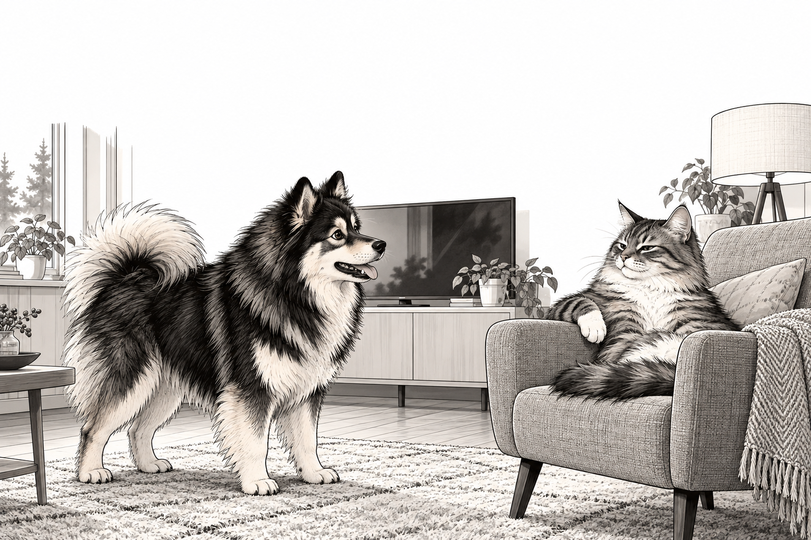

<!doctype html><html lang="fi"><meta charset="utf-8"><meta name="viewport" content="width=device-width,initial-scale=1"><title>Yhtälökurssi · Mafyketopi</title>
<style>
:root{--ink:#203b49;--muted:#58717d;--accent:#007e82;--paper:#fff;--line:#d7e3e7}*{box-sizing:border-box}body{margin:0;background:#edf3f5;color:var(--ink);font:18px/1.45 system-ui,sans-serif}button,input,select{font:inherit}button{cursor:pointer;border:1px solid var(--line);border-radius:10px;padding:10px 17px;background:white;color:var(--ink)}button:hover{border-color:var(--accent)}button:focus-visible,input:focus-visible,select:focus-visible{outline:3px solid #ecb942;outline-offset:2px}button.primary{background:var(--accent);color:white;border-color:var(--accent)}button:disabled{opacity:.5;cursor:default}input,select{border:1px solid #a4bbc5;border-radius:9px;padding:10px;max-width:100%;background:white;color:var(--ink)}input{width:100%}header{max-width:1080px;margin:auto;padding:18px 24px;display:flex;align-items:center;justify-content:space-between;gap:12px}header strong{letter-spacing:.04em;font-size:15px}header span{font-size:14px;color:var(--muted)}main{max-width:1040px;margin:0 auto;padding:0 20px 20px}.panel{background:white;border:1px solid var(--line);border-radius:20px;padding:25px;box-shadow:0 12px 35px #17343b08}h1{font-size:clamp(25px,4vw,36px);margin:0 0 8px}h2{font-size:24px;margin:0 0 8px}p{margin:8px 0 18px}.muted{color:var(--muted)}.cards{display:grid;grid-template-columns:repeat(3,1fr);gap:16px;margin:25px 0}.card{padding:22px;text-align:left;display:flex;flex-direction:column;gap:10px;border-radius:16px}.card b{font-size:23px}.card span{font-size:16px;color:var(--muted)}.tag{font-size:13px;color:var(--accent);font-weight:700;letter-spacing:.05em}.top{display:flex;justify-content:space-between;align-items:center;gap:14px;margin-bottom:13px}.progress{height:5px;background:#e9f0f2;border-radius:8px;margin-bottom:20px}.progress div{height:100%;background:var(--accent);border-radius:8px}.work{display:grid;grid-template-columns:minmax(0,1.25fr) minmax(270px,1fr);gap:24px}.board{background:#f8fafb;border:1px solid var(--line);border-radius:15px;padding:18px;min-height:290px;max-height:54vh;overflow:auto}.row{display:flex;align-items:center;justify-content:center;gap:15px;padding:9px 0;font-size:27px;}.row.new{animation:appear .4s ease-out}.row .op{color:var(--accent);font-size:20px;white-space:nowrap}.row:last-child{color:#102e3c}.entry{display:flex;flex-direction:column;gap:10px}.entry label{font-weight:600;font-size:16px}.preview{min-height:58px;background:#f8fafb;border-radius:10px;padding:10px;font-size:25px;overflow-x:auto}.buttons{display:flex;gap:8px;flex-wrap:wrap}.feedback{min-height:55px;padding:10px 0;font-size:16px}.feedback.bad{color:#a33535}.feedback.good{color:#006b57}.small{font-size:14px}.tabs{display:flex;gap:6px}.tabs button{font-size:15px;padding:7px 10px}.tabs button.active{background:#e0f2f1;border-color:var(--accent)}.pair{display:grid;grid-template-columns:1fr 1fr;gap:10px}.choice{display:grid;grid-template-columns:1fr 1fr;gap:8px}.choice button.selected{background:#dff1ef;border-color:var(--accent)}math{font-family:Cambria Math,STIX Two Math,serif}details{font-size:15px;margin-top:20px}summary{cursor:pointer;color:var(--muted)}.help{background:#eff7f7;padding:14px;border-radius:10px;font-size:16px}.done{padding:25px;text-align:center}.done h2{font-size:30px}.pill{background:#e9f5f3;border-radius:30px;padding:6px 12px;font-size:14px}.keypad{display:flex;gap:5px;flex-wrap:wrap}.keypad button{padding:4px 10px;font-size:17px}.subval{color:#c04626}.home-link{font-size:14px}footer{font-size:13px;text-align:center;color:var(--muted);padding:10px}@keyframes appear{from{opacity:0;transform:translateY(-8px)}to{opacity:1;transform:translateY(0)}}@media(prefers-reduced-motion:reduce){*{animation:none!important;scroll-behavior:auto!important}}@media(max-width:700px){body{font-size:17px}header{padding:12px 16px}main{padding:0 10px 12px}.panel{padding:16px;border-radius:14px}h2{font-size:20px}.cards{grid-template-columns:1fr;gap:10px;margin:18px 0}.card{padding:16px}.work{grid-template-columns:1fr;gap:13px}.board{min-height:100px;max-height:26vh;padding:9px}.row{font-size:24px;padding:6px;gap:8px}.row .op{font-size:17px}.progress{margin-bottom:12px}.entry{gap:7px}.preview{min-height:44px;font-size:23px;padding:5px}.feedback{min-height:42px;padding:5px 0}.top{margin-bottom:8px}.top button{padding:7px 10px}p{margin-bottom:12px}}@media(max-height:550px) and (min-width:701px){.board{max-height:45vh;min-height:150px}.panel{padding:15px}header{padding:8px 20px}}

.work.inline-work{grid-template-columns:1fr;gap:12px}.inline-work .board{min-height:240px;max-height:49vh;padding:22px}.inline-work .entry{gap:8px}.inline-work .entry>label,.inline-work #preview{display:none}.active-operation{display:inline-flex;align-items:center;gap:9px;color:var(--accent);flex-shrink:0}.active-operation math{font-size:27px}.active-operation input{width:112px;font-size:24px;padding:7px 10px;border:2px solid var(--accent);background:#fff;min-height:46px}.inline-work .row{justify-content:flex-start;gap:18px;white-space:nowrap}.inline-work .row>math{flex-shrink:0}.next-line.new{animation:appear .4s ease-out}.next-line{display:flex;align-items:center;gap:12px;padding:10px 0}.next-line input{width:min(100%,440px);font-size:25px;border:2px solid var(--accent)}.inline-work #check{font-size:15px;padding:9px 13px;flex-shrink:0}.inline-work .keypad{margin-top:0}.inline-work .tabs{order:-1}@media(max-width:700px){.inline-work .board{min-height:150px;max-height:36vh;padding:12px}.inline-work .row{gap:10px;font-size:23px}.active-operation{gap:6px}.active-operation input{width:90px;font-size:21px;min-height:42px}.active-operation math{font-size:23px}.inline-work .row #check{font-size:0;padding:9px}.inline-work .row #check:after{content:'✓';font-size:20px}.next-line{gap:7px}.next-line input{font-size:22px;min-width:0}.inline-work .board{overflow:auto}}
.demo-inline{justify-content:flex-start;flex-wrap:wrap}.demo-inline input{border:2px solid var(--accent)}.demo-inline button{font-size:15px}.story{font-size:19px;max-width:850px}.condition{font-size:16px;background:#fff4d8;padding:8px 12px;border-radius:8px}.history-text{font-size:17px;padding:8px 0;color:#3e5964}.eqnum{font-size:16px;color:#758995}.system{border-bottom:1px solid var(--line);padding-bottom:12px;margin-bottom:12px}.numberline{width:100%;min-width:300px;margin-top:12px}.completion{animation:appear .45s ease-out}.entry .choice{max-width:650px}.entry #nextSign{width:70px;font-size:22px}.inline-work .board{max-height:48vh}.cards{grid-template-columns:repeat(3,1fr)}@media(max-width:700px){.cards{grid-template-columns:1fr}.story{font-size:17px}.inline-work .board{max-height:32vh}}.advanced .entry>label{display:block}.cards{gap:12px;margin:18px 0}.card{padding:16px;gap:7px}.card b{font-size:20px;line-height:1.2}.card span{font-size:14px;line-height:1.4}.card .tag{font-size:12px}@media(max-width:700px){footer{padding:3px;font-size:11px}.card b{font-size:22px}.card span{font-size:16px}.advanced .entry>label{font-size:15px}.numberline{min-width:280px}}@media(max-width:700px){.advanced[data-phase="line"] .board{min-height:105px;max-height:25vh}.advanced[data-phase="line"] .choice button{padding:9px 11px}} @media(min-width:701px) and (max-height:800px){.home-panel .card{padding:12px;gap:5px}.home-panel .card b{font-size:18px}.home-panel .card span{font-size:13px;display:-webkit-box;-webkit-line-clamp:2;-webkit-box-orient:vertical;overflow:hidden}.home-panel h1{font-size:30px}.home-panel>p{font-size:16px;margin-bottom:10px}.home-panel .cards{margin:12px 0}} [hidden]{display:none!important}.numberline{display:block;width:100%;max-width:520px;max-height:125px;margin:12px auto}.tabs:has(#rowMode){display:none}.input-help{font-size:14px;color:var(--muted);margin:0}.math-key{padding:5px 12px}.history-text math,.completion math{font-size:1.1em}@media(min-width:701px) and (max-height:850px){.advanced[data-phase=reciprocalBack] .board{min-height:0;max-height:230px}.advanced[data-phase=quadParameter] .board,.advanced[data-phase=quadraticZeros] .board,.advanced[data-phase=reciprocalModel] .board{min-height:0;max-height:180px}} .answer-pair{justify-content:flex-start;gap:35px}.verification-grid{display:grid;grid-template-columns:minmax(0,1fr) minmax(0,1fr);gap:0 15px}.verification-grid p{grid-column:1/-1;margin-bottom:4px}.verification-grid .row{font-size:23px;justify-content:flex-start;padding:4px 0}.level-cards{display:grid;grid-template-columns:1fr 1fr;gap:20px;margin:24px 0}.level-basic{border-color:var(--accent);background:#eff8f7}.level-counts{font-weight:600;color:var(--accent)!important;font-size:13px!important}.top .tag{max-width:80%;letter-spacing:.02em}@media(max-width:700px){.level-cards{grid-template-columns:1fr;gap:12px}.top .tag{font-size:11px}}@media(min-width:701px) and (max-height:800px){.home-panel{padding-top:20px;padding-bottom:20px}.home-panel .card{padding:10px;gap:3px}.home-panel .card .level-counts{display:block;font-size:12px!important}}.method-choices{display:grid;grid-template-columns:1fr;gap:24px;margin:24px 0}.method-choices article{border:1px solid var(--line);border-radius:14px;padding:20px;min-width:0}.method-choices h2{font-size:22px}.method-board{margin:16px 0}.method-line{display:flex;align-items:center;gap:12px;flex-wrap:nowrap;overflow-x:auto;margin:15px 0}.method-line math{font-size:29px}.method-op{flex-shrink:0;display:inline-flex;align-items:center;gap:8px}.method-op input{width:100px}.method-op button{font-size:16px;padding:9px}.method-row{display:flex;gap:10px;flex-wrap:wrap;margin-top:16px}.method-row input{width:360px;max-width:100%}.method-preview{margin:12px 0;overflow-x:auto}.method-preview:empty{display:none}.method-preview math{font-size:27px}.method-feedback{color:#007477;font-weight:600;margin:12px 0}.method-feedback:empty{display:none}.method-feedback.bad{color:#a33535}.method-toolbar{display:flex;gap:15px;align-items:center;flex-wrap:wrap;margin:20px 0}.method-toolbar nav{display:flex;gap:8px}.method-toolbar button[aria-pressed=true]{background:var(--accent);color:white}.method-toolbar label{font-size:15px}.method-toolbar select{display:block;max-width:100%;font-size:16px}.writing-help{background:#eff7f7;border-left:3px solid var(--accent);padding:10px 14px;margin:14px 0}.writing-help summary{font-weight:600;color:var(--ink)}.method-hint{margin-top:10px}@media(max-width:700px){.method-choices{grid-template-columns:1fr}.method-choices article{padding:14px}.method-line math{font-size:25px}.method-op input{width:75px}.method-op button{padding:9px;font-size:15px}.method-row input{width:100%}}.method-line{padding:10px 2px;min-height:64px}.method-line>math{flex-shrink:0;line-height:normal}.method-preview{padding:8px 2px}.method-row{align-items:center}.method-row input{min-width:0}.method-board{padding:4px 0}.method-line:has(.method-op){min-height:76px}
.story5{font-size:21px;line-height:1.6;margin:18px 0}.meaning5{font-size:16px;margin:12px 0}.form5{display:flex;align-items:center;flex-wrap:wrap;gap:10px;margin:16px 0}.form5 input{width:460px;max-width:100%}.form5 textarea{width:100%;min-height:75px;font:inherit;padding:12px;border:1px solid #a4bbc5;border-radius:10px;resize:vertical}.live5{padding:12px 2px;overflow-x:auto}.live5:empty{display:none}.live5 math{font-size:28px}.controls5{display:flex;gap:8px;flex-wrap:wrap;margin:18px 0}.task5-message{color:var(--accent);font-weight:600;min-height:25px}.task5-message.bad{color:#a33535}.story5 math{font-size:1.08em}.answer5{margin:16px 0;font-size:20px}.answer5 math{font-size:23px}.method-choices article .story5{font-size:18px}@media(max-width:700px){.story5{font-size:19px}.form5 input{width:100%}.answer5{font-size:18px}}
.task5-message:empty{display:none}.method-board{margin-top:10px}</style><header><strong>MAFYKETOPI <span> / YHTÄLÖKURSSI</span></strong><button id="home" class="home-link">Osioiden alkuun</button></header><main id="app"></main><footer>Kirjoita itse. Tutki välivaihetta. Ratkaise.</footer>
<script>function numberCalculationPending(n){if(!n)return false;n=strip(n);if(['+','-','*','pow'].includes(n.k)){try{scalar(polynomialText(numericPoly(n)));if(!count(n,'x')&&!count(n,'y')&&!/[a-z]/i.test(JSON.stringify(n).replace(/"k":"[a-z]+"/g,''))){return true}}catch{}}if(['+','-','*'].includes(n.k)){try{let p=numericPoly(n);if(p.slice(1).every(v=>near(v,0))&&!count(n,'x')&&!count(n,'y'))return true}catch{}}return ['a','b','v','L','R'].some(k=>typeof n[k]==='object'&&numberCalculationPending(n[k]))}
function rowNeedsCalculation(e){function unfinished(n){if(numberCalculationPending(n))return true;if(has(n,'/'))return false;try{return nodes(parse(polynomialText(numericPoly(n))))<nodes(n)}catch{return false}}return !!e&&(unfinished(e.L)||unfinished(e.R))}

'use strict';
// Rajattu parseri: ei evalia eikä suoritettavaa syötettä. Tuettu matematiikka: luvut, x, + − · / ja sulkeet.
const near=(a,b)=>Math.abs(a-b)<1e-9*Math.max(1,Math.abs(a),Math.abs(b));
function parse(text){
 let src=text.trim().replace(/−/g,'-').replace(/,/g,'.').replace(/[·×]/g,'*').replace(/:/g,'/').replace(/²/g,'^2').replace(/√/g,'sqrt');
 if(!src||src.length>220)throw Error('Kirjoita lauseke (enintään 220 merkkiä).');
 let ts=src.match(/sqrt|\d+(?:\.\d+)?|\.\d+|[xyauvk]|[()+*/^\-]/g)||[];
 if(ts.join('')!==src.replace(/\s/g,''))throw Error('Käytä lukuja, x:ää, y:tä, a:ta, sulkeita ja laskumerkkejä. Neliö: x^2. Neliöjuuri: sqrt(7).');
 let t=[];ts.forEach((z,i)=>{let prev=ts[i-1];if(i&&(/^(\d|\.|[xyauvk]|\))/.test(prev))&&(/^(\d|\.|[xyauvk]|\(|sqrt)/.test(z))){if(/^(\d|\.)/.test(prev)&&/^(\d|\.)/.test(z))throw Error('Lukujen välistä puuttuu laskumerkki.');t.push('*')}t.push(z)});
 let pos=0,depth=0;
 function atom(){if(++depth>30)throw Error('Liian monta sisäkkäistä suljetta.');let z=t[pos++],n;if(z==='('){n={k:'group',v:add()};if(t[pos++]!==')')throw Error('Tarkista sulkeiden pari.')}else if(z==='sqrt'){if(t[pos++]!=='(')throw Error('Kirjoita neliöjuuri sqrt(7).');n={k:'sqrt',v:add()};if(t[pos++]!==')')throw Error('Tarkista juuren sulkeet.')}else if(['x','y','a','u','v','k'].includes(z))n={k:z};else if(z!==undefined&&/^\d|^\./.test(z))n={k:'num',v:Number(z)};else throw Error('Lauseke on kesken.');depth--;return n}
 function power(){let n=atom();if(t[pos]==='^'){pos++;let z=t[pos++];if(!['2','1','0'].includes(z))throw Error('Tässä käytetään vain potensseja 0, 1 ja 2.');n={k:'pow',v:n,exp:Number(z)}}return n}
 function unary(){if(t[pos]==='+'||t[pos]==='-'){let sign=t[pos++]==='-'?-1:1;return{k:'neg',sign,v:unary()}}return power()}
 function mul(){let n=unary();while(t[pos]==='*'||t[pos]==='/'){let k=t[pos++];n={k,l:n,r:unary()}}return n}
 function add(){let n=mul();while(t[pos]==='+'||t[pos]==='-'){let k=t[pos++];n={k,l:n,r:mul()}}return n}
 let n=add();if(pos!==t.length)throw Error('Tarkista laskumerkit ja sulkeet.');return n;
}
function poly(n){if(['y','a','u','v','k'].includes(n.k))throw Error('Tässä vaiheessa käytetään vain x:ää.');if(n.k==='pow'){if(n.exp===0)return[1,0,0];if(n.exp===1)return poly(n.v);return poly({k:'*',l:n.v,r:n.v})}if(n.k==='sqrt'){let p=poly(n.v);if(!near(p[1],0)||!near(p[2],0)||p[0]<0)throw Error('Neliöjuuren alla pitää olla ei-negatiivinen luku.');return[Math.sqrt(p[0]),0,0]}if(n.k==='num')return[n.v,0,0];if(n.k==='x')return[0,1,0];if(n.k==='group')return poly(n.v);if(n.k==='neg')return poly(n.v).map(v=>v*n.sign);let l=poly(n.l),r=poly(n.r);if(n.k==='+'||n.k==='-')return l.map((v,i)=>v+(n.k==='+'?1:-1)*r[i]);if(n.k==='/'){if(!near(r[1],0)||!near(r[2],0))throw Error('Tässä harjoituksessa nimittäjässä ei käytetä x:ää.');if(near(r[0],0))throw Error('Nollalla ei voi jakaa.');return l.map(v=>v/r[0])}let result=[0,0,0];for(let i=0;i<3;i++)for(let j=0;j<3;j++){if(i+j>2&&!near(l[i]*r[j],0))throw Error('Lauseke on liian korkea-asteinen.');if(i+j<3)result[i+j]+=l[i]*r[j]}if(result.some(v=>!Number.isFinite(v)||Math.abs(v)>1e12))throw Error('Luvut ovat liian suuria.');return result}
function equation(text){let p=text.split('=');if(p.length!==2)throw Error('Kirjoita kokonainen yhtälö, jossa on yksi =.');let L=parse(p[0]),R=parse(p[1]),l=poly(L),r=poly(R);if(!near(l[2],r[2]))throw Error('Tässä osiossa ratkaistaan ensimmäisen asteen yhtälöitä.');return {L,R,l,r,text}}
function solution(e){let A=e.l[1]-e.r[1],B=e.r[0]-e.l[0];if(near(A,0))throw Error('Tämä vaihe ei vastaa tehtävän yhtälöä.');return B/A}
function count(n,k){return(n.k===k?1:0)+(n.v&&typeof n.v==='object'?count(n.v,k):0)+(n.l?count(n.l,k):0)+(n.r?count(n.r,k):0)}
function nodes(n){return 1+(n.v&&typeof n.v==='object'?nodes(n.v):0)+(n.l?nodes(n.l):0)+(n.r?nodes(n.r):0)}
function has(n,k){return count(n,k)>0}function samePoly(a,b){return a.every((v,i)=>near(v,b[i]))}
function fmt(v){if(near(v,Math.round(v)))return String(Math.round(v));for(let d=2;d<=120;d++)if(near(v*d,Math.round(v*d)))return Math.round(v*d)+'/'+d;return String(Number(v.toFixed(8))).replace('.',',')}
function linear(p){let c=p[0],a=p[1],z='';if(!near(a,0))z=(near(a,1)?'':near(a,-1)?'-':fmt(a).includes('/')?'('+fmt(a)+')':fmt(a))+'x';if(!near(c,0))z+=(z&&c>0?'+':'')+fmt(c);return z||'0'}
function fromPolys(l,r){return equation(linear(l)+'='+linear(r))}
function astMath(n,sub){if(['y','a','u','v','k'].includes(n.k))return '<mi>'+n.k+'</mi>';if(n.k==='pow')return '<msup>'+astMath(n.v,sub)+'<mn>'+n.exp+'</mn></msup>';if(n.k==='sqrt')return '<msqrt>'+astMath(n.v,sub)+'</msqrt>';if(n.k==='num')return '<mn>'+String(n.v).replace('.',',')+'</mn>';if(n.k==='x')return sub===undefined?'<mi>x</mi>':'<mstyle mathcolor="#c04626"><mrow><mo>(</mo>'+astMath(parse(String(sub)))+'<mo>)</mo></mrow></mstyle>';if(n.k==='group'&&['/','sqrt'].includes(strip(n.v).k))return astMath(n.v,sub);if(n.k==='group')return '<mrow><mo>(</mo>'+astMath(n.v,sub)+'<mo>)</mo></mrow>';if(n.k==='neg')return '<mrow><mo>'+(n.sign===-1?'−':'+')+'</mo>'+astMath(n.v,sub)+'</mrow>';if(n.k==='/')return '<mfrac>'+astMath(strip(n.l),sub)+astMath(strip(n.r),sub)+'</mfrac>';return '<mrow>'+astMath(n.l,sub)+'<mo>'+(n.k==='*'?(n.r.k==='group'&&!['/','sqrt'].includes(strip(n.r).k)||['x','y','a','u','v','k','pow'].includes(strip(n.r).k)?'⁢':'·'):n.k==='-'?'−':'+')+'</mo>'+astMath(n.r,sub)+'</mrow>'}
function math(e,sub){return '<math xmlns="http://www.w3.org/1998/Math/MathML"><mrow>'+astMath(e.L,sub)+'<mo>=</mo>'+astMath(e.R,sub)+'</mrow></math>'}
function opMath(v){try{return '<math><mrow><mo>∥</mo>'+astMath(parse(v))+'</mrow></math>'}catch{return ''}}
function substitute(n,v){if(n.k==='x')return {k:'group',v:parse(String(v))};let m={...n};for(let k of ['l','r','v'])if(n[k]&&typeof n[k]==='object')m[k]=substitute(n[k],v);return m}
function strip(n){return n.k==='group'||(n.k==='neg'&&n.sign===1)?strip(n.v):n}
function equalAST(n,m){n=strip(n);m=strip(m);if(n.k==='pow'||m.k==='pow')return n.k===m.k&&n.exp===m.exp&&equalAST(n.v,m.v);if(n.k==='sqrt'||m.k==='sqrt')return n.k===m.k&&equalAST(n.v,m.v);if(n.k==='neg'&&m.k==='num')return near(poly(n)[0],m.v);if(m.k==='neg'&&n.k==='num')return near(poly(m)[0],n.v);if(n.k!==m.k)return false;if(n.k==='num')return near(n.v,m.v);if(n.k==='x')return true;if(n.k==='neg')return n.sign===m.sign&&equalAST(n.v,m.v);return equalAST(n.l,m.l)&&equalAST(n.r,m.r)}
const BANK={1:{title:'Yhtälön perusteet',desc:'Sijoita, vertaa puolten arvoja ja päättele. Lopuksi päässälaskuryppäitä.',intro:'Yhtälön ratkaisu tekee vasemmasta ja oikeasta puolesta yhtä suuret. Korvaa jokainen x samalla luvulla. Negatiivinen luku merkitään sulkeisiin.',tasks:[{eq:'2x+3=11',v:4},{eq:'3x-2=8',v:2},{eq:'5x-1=2x+8',v:3},{eq:'2(x-3)=-10',v:-2},{mental:['x+8=13','x-5=-2','7+x=4','x-9=0']},{mental:['4x=28','-3x=12','-x=7','0,5x=3']},{mental:['x/3=5','x/(-4)=2','x/7=0','x/2=-3/2']},{mental:['12/x=3','-18/x=6','20/x=-4','-24/x=-6']}]},2:{title:'Yhtälön ratkaisu vaiheittain',desc:'Kirjoita pystyviivojen taakse operaatio. Uusi rivi syntyy vastauksestasi.',intro:'Sama laskutoimitus tehdään yhtälön molemmille puolille. Esimerkiksi 4x=20 || :4 tuottaa x=5. Merkintä kirjoitetaan sen rivin oikealle puolelle, johon laskutoimitus kohdistuu.',tasks:['3x=18','x/4=5','x/(-3)=4','3x/4=6','x+6=14','x-7=-3','x+3/4=1/4','2x+5=17'].map(eq=>({eq}))},3:{title:'Sulkeet yhtälössä ja nimittäjien poistaminen yhtälöstä',desc:'Kirjoita kokonainen välivaihe tai käytä molempien puolten laskutoimitusta.',intro:'Siirtäminen on lyhyt tapa merkitä sama laskutoimitus molemmille puolille: 5x−4=2x+8 || −2x ja || +4 johtaa riviin 5x−2x=8+4. Puolta vaihtavan termin merkki vaihtuu. Voit aloittaa myös vakiotermistä.',tasks:['4x-3=2x+7','3x+8=5x-2','7x-5=3x-17','3(x-2)=x+4','5x-(2x+6)=12','(x+3)/2=7','x/2-x/3=2','(2x-1)/4+(x+2)/2=19/4'].map(eq=>({eq}))}};
const ALTS={1:[[{eq:'3x+2=14',v:4},{eq:'2x-5=9',v:6},{eq:'4x-2=x+7',v:3},{eq:'3(x+1)=-6',v:-3},{mental:['x+9=16','x-3=-1','5+x=2','x-6=0']},{mental:['5x=30','-2x=10','-x=-6','0,5x=4']},{mental:['x/4=3','x/(-2)=5','x/6=0','x/3=-2']},{mental:['18/x=3','-20/x=5','30/x=-6','-35/x=-5']}]],2:[['4x=28','x/5=3','x/(-2)=6','2x/3=8','x+8=17','x-9=-4','x+2/3=1/3','3x+4=19'].map(eq=>({eq}))],3:[['5x-2=3x+10','2x+9=4x-3','6x-7=2x-19','2(x-3)=x+4','6x-(3x+9)=15','(x+5)/3=6','x/3-x/6=2','(3x-2)/4+(x+1)/2=5'].map(eq=>({eq}))]};

BANK[2].tasks=['3x=18','x/4=5','x/(-3)=4','3x/4=6','0,1x=5','4x=3','x+6=14','x-7=-3','x+3/4=1/4','2x+5=17','50=x-50','3x/2-4=8'].map(eq=>({eq}));
ALTS[2]=[['4x=28','x/5=3','x/(-2)=6','2x/3=8','0,2x=6','5x=2','x+8=17','x-9=-4','x+2/3=1/3','3x+4=19','40=x-40','2x/3-5=3'].map(eq=>({eq}))];
BANK[3].tasks.push(...['(x-2)(x+5)-x^2=8','(x-3)(x+1)=(x-2)(x-1)','(2x-3)/4+(x+3)/2=1-(x+12)/6','(2x-1)/7-(14-3x)/14=3x/7-2'].map(eq=>({eq})));
ALTS[3][0].push(...['(x-1)(x+4)-x^2=11','(x-2)(x+2)=(x-3)(x+1)','(2x-1)/4+(x+1)/2=2-(x+6)/6','(2x-3)/7-(10-3x)/14=3x/7-1'].map(eq=>({eq})));

const $=id=>document.getElementById(id);const app=$('app');let st,completion={};try{completion=JSON.parse(localStorage.getItem('mafyke-eq-v1')||'{}')}catch{};
function home(){st=null;app.innerHTML='<section class="panel home-panel"><div class="tag">HARJOITTELE RATKAISUN KIRJOITTAMISTA</div><h1>Yhtälökurssi</h1><p class="muted">Yhdeksän osiota perusteista yhtälöpareihin. Ratkaisu syntyy omista välivaiheistasi. Tehtävät vaikeutuvat osion loppua kohti.</p><div class="cards">'+Object.entries(BANK).map(([n,b])=>'<button class="card" data-start="'+n+'"><div class="tag">OSIO '+n+' · '+b.tasks.length+' TEHTÄVÄÄ</div><b>'+b.title+'</b><span>'+b.desc+'</span>'+(completion[n]?'<span class="pill">Harjoiteltu</span>':'')+'</button>').join('')+'</div><details><summary>Kirjoittaminen ja käyttö</summary><p>Kirjoita esimerkiksi 3x−2x=8+4. Kertolaskussa käy 3x, 3*x tai 3·x. Murtoluku kirjoitetaan (x+3)/2 ja desimaalissa käy pilkku tai piste. Tarkista Enterillä. Operaatio kirjoitetaan esimerkiksi −2x, +4, :6 tai ·3. Pystyviivat tulevat automaattisesti.</p><p>Toimii ilman verkkoyhteyttä. Tiedosto sisältää kaikki yhdeksän osiota. Aiemmin hyväksytyt rivit jäävät ratkaisutaululle; lyhyellä näytöllä sitä voi vierittää. Tallennetaan vain valmistuneet osiot tämän selaimen muistiin.</p></details></section>';app.querySelectorAll('[data-start]').forEach(b=>b.onclick=()=>start(+b.dataset.start))}
$('home').onclick=home;
function start(n,retry=false){if(n>=4)return fullStart(n,retry);st={n,i:0,tasks:retry?ALTS[n][0].concat(BANK[n].tasks.slice(ALTS[n][0].length)):BANK[n].tasks,rows:[],errors:0,hints:0,steps:0,first:0,failed:false,sub:0,mode:n===2?'op':'row',phase:'',demo:true};showIntro()}
function showIntro(){app.innerHTML='<section class="panel"><div class="top"><span class="tag">OSIO '+st.n+'</span><span>Ennen harjoittelua</span></div><h1>'+BANK[st.n].title+'</h1><p>'+BANK[st.n].intro+'</p><div id="demo" class="help"></div><p class="small muted">Harjoitus ei ole ajastettu. Väärä vastaus ei vaihda tehtävää.</p><button id="begin" class="primary">Aloita harjoitus</button></section>';let de=$('demo');if(st.n===1){de.innerHTML=math(equation('2x+1=7'))+'<p>Kun x=3: '+math(equation('2x+1=7'),3)+'</p><p>VP=7 ja OP=7 → tosi → 3 on ratkaisu.</p>'}else{let n=st.n;st.demo=true;st.demoCount=0;de.innerHTML='<p>Kokeile yhtä laskutoimitusta. '+(n===2?'4x=20':'5x−4=2x+8')+'</p><div class="pair"><input id="demoInput" aria-label="Malliesimerkin laskutoimitus" placeholder="'+(n===2?':4':'−2x tai +4')+'"><button id="demoCheck">Tarkista</button></div><div id="demoRows"></div><p id="demoFeedback" role="status"></p>';let e=equation(n===2?'4x=20':'5x-4=2x+8');let demoLine=de.querySelector('.pair');demoLine.className='row demo-inline';demoLine.insertAdjacentHTML('afterbegin',math(e)+'<math><mo>∥</mo></math>');$('demoInput').style.width='110px';$('demoCheck').onclick=()=>{try{let next=operation(e,$('demoInput').value,3);$('demoRows').innerHTML+='<div class="row">'+math(e)+'<span class="op">'+displayOp($('demoInput').value)+'</span></div><div class="row">'+math(next)+'</div>';e=next;demoLine.querySelector('math').outerHTML=math(e);$('demoInput').value='';$('demoFeedback').textContent=solved(e)?'Ratkaisu valmis. Voit aloittaa harjoituksen.':'Hyvä. Voit kokeilla seuraavaa laskutoimitusta.';if(solved(e)){$('demoCheck').disabled=true;$('demoInput').disabled=true}}catch(err){$('demoFeedback').textContent=err.message}};$('demoInput').onkeydown=e=>{if(e.key==='Enter')$('demoCheck').click()}}$('begin').onclick=()=>{st.demo=false;loadTask()}}
function task(){return st.tasks[st.i]}
function current(){return st.rows[st.rows.length-1].e}
function simpleNumber(n){n=strip(n);return n.k==='num'||n.k==='neg'&&simpleNumber(n.v)||n.k==='/'&&simpleNumber(n.l)&&simpleNumber(n.r)}
function solved(e){return strip(e.L).k==='x'&&simpleNumber(e.R)||strip(e.R).k==='x'&&simpleNumber(e.L)}
function loadTask(){if(st.n>=4)return fullLoad();st.sub=0;st.failed=false;st.usedHint=0;st.complete=false;st.truth=null;st.isroot=null;let t=task();st.phase=t.v!==undefined?'sub':t.mental?'mental':'solve';st.rows=t.mental?[]:[{e:equation(t.eq)}];st.stage=st.n===3?initialStage(current()):'normal';st.mode=st.n===2?'op':'row';render()}
function initialStage(e){return has(e.L,'/')||has(e.R,'/')?'fraction':has(e.L,'group')||has(e.R,'group')?'expand':'transfer'}
function goal(){if(st.phase==='sub')return 'Kirjoita sijoitusyhtälö: korvaa jokainen x luvulla '+task().v+'.';if(st.phase==='values')return 'Laske vasemman ja oikean puolen arvot. Päättele sitten.';if(st.phase==='mental')return 'Ratkaise yhtälö päässä.';if(st.complete)return 'Ratkaisu valmis.';if(st.n===2)return 'Ratkaise yhtälö välivaiheittain.';return st.stage==='fraction'?'Ratkaise yhtälö. Voit aloittaa poistamalla nimittäjät.':st.stage==='expand'?'Ratkaise yhtälö. Voit aloittaa poistamalla sulkeet.':st.stage==='transfer'?'Kirjoita siirtämisen jälkeinen rivi: kokoa samanlaiset termit samalle puolelle.':'Sievennä rivi tai tee molemmille puolille laskutoimitus.'}
function mentalEq(){let t=task().mental[st.sub];if(/\/x/.test(t)){let [L,R]=t.split('=');let num=parse(L.split('/')[0]),val=poly(parse(R))[0];return {special:true,eq:t,ans:poly(num)[0]/val,num,R}}return {e:equation(t),ans:solution(equation(t))}}
function mentalMath(m){if(!m.special)return math(m.e);return '<math><mfrac>'+astMath(m.num)+'<mi>x</mi></mfrac><mo>=</mo>'+astMath(parse(m.R))+'</math>'}
function render(){let b=BANK[st.n],t=task();app.innerHTML='<section class="panel"><div class="top"><span class="tag">OSIO '+st.n+' · '+b.title+'</span><span class="small">'+(st.i+1)+' / '+st.tasks.length+(t.mental?' · lasku '+(st.sub+1)+'/4':'')+'</span></div><div class="progress"><div style="width:'+((st.i+(st.complete?1:0))/st.tasks.length*100)+'%"></div></div><h2>'+goal()+'</h2><div class="work"><div class="board" id="board" aria-label="Ratkaisuketju"></div><div class="entry" id="entry"></div></div><div class="feedback" id="feedback" role="status" aria-live="polite"></div><div class="buttons"><button id="hint">Vihje</button>'+(st.complete?'<button id="next" class="primary">'+(st.i===st.tasks.length-1?'Katso yhteenveto':'Seuraava tehtävä')+'</button>':'')+'</div><details><summary>Kirjoitusohje</summary><p>Esimerkiksi −2x, :6 tai ·3 pystyviivoille. Kokonainen rivi: 5x−2x=8+4. Murtoluku: (x+3)/2. Enter tarkistaa.</p></details></section>';let board=$('board');if(st.phase==='mental'){board.innerHTML='<div class="row">'+mentalMath(mentalEq())+'</div>'+(mentalEq().special?'<p class="small muted">x ≠ 0</p>':'')}else board.innerHTML=st.rows.map((r,i)=>'<div class="row'+(i===st.rows.length-1?' new':'')+'">'+math(r.e,r.sub)+'<span class="op">'+(r.op?displayOp(r.op):'')+'</span></div>').join('');let en=$('entry');if(st.complete){en.innerHTML='<div class="help"><b>Hyvä! Ratkaisu valmis.</b><p>Tarkistus alkuperäiseen yhtälöön:</p>'+math(st.rows[0].e,solution(current()))+'</div>'}else if(st.phase==='values'){en.innerHTML='<div class="pair"><label>VP<input id="vp" inputmode="decimal"></label><label>OP<input id="op" inputmode="decimal"></label></div><label>Onko yhtälö tosi?</label><div class="choice"><button data-truth="true">Tosi</button><button data-truth="false">Epätosi</button></div><label>Onko '+t.v+' ratkaisu?</label><div class="choice"><button data-root="true">On ratkaisu</button><button data-root="false">Ei ole ratkaisu</button></div><button id="check" class="primary">Tarkista</button>';en.querySelectorAll('[data-truth]').forEach(el=>el.onclick=()=>{st.truth=el.dataset.truth==='true';en.querySelectorAll('[data-truth]').forEach(z=>z.classList.toggle('selected',z===el))});en.querySelectorAll('[data-root]').forEach(el=>el.onclick=()=>{st.isroot=el.dataset.root==='true';en.querySelectorAll('[data-root]').forEach(z=>z.classList.toggle('selected',z===el))})}else{en.innerHTML=(st.n===3&&st.phase==='solve'?'<div class="tabs"><button id="rowMode" class="'+(st.mode==='row'?'active':'')+'">Kirjoita välivaihe</button><button id="opMode" class="'+(st.mode==='op'?'active':'')+'">Laskutoimitus ∥</button></div>':'')+'<label for="input">'+(st.phase==='mental'?'x =':st.phase==='sub'?'Sijoitusyhtälö':st.mode==='op'?'∥ Laskutoimitus':'Seuraava yhtälörivi')+'</label><input id="input" autocomplete="off" autocapitalize="off" spellcheck="false" placeholder="'+(st.phase==='sub'?'2(4)+3=11':st.phase==='mental'?'Kirjoita luku tai murtoluku':st.mode==='op'?':6, −2x, +4…':'Kirjoita koko yhtälö')+'"><div class="keypad">'+['x','−','+','·',':','(',')','/','=','^2'].map(k=>'<button type="button" data-key="'+k+'">'+k+'</button>').join('')+'</div><div class="preview" id="preview" aria-label="Vastauksen esikatselu"></div><button id="check" class="primary">Tarkista</button>';if($('rowMode')){$('rowMode').onclick=()=>{st.mode='row';render()};$('opMode').onclick=()=>{st.mode='op';render()}}$('input').oninput=preview;en.querySelectorAll('[data-key]').forEach(el=>el.onclick=()=>{let inp=$('input'),p=inp.selectionStart;inp.value=inp.value.slice(0,p)+el.dataset.key+inp.value.slice(inp.selectionEnd);inp.focus();inp.setSelectionRange(p+el.dataset.key.length,p+el.dataset.key.length);preview()})}if(st.phase==='solve')app.querySelector('.work').classList.add('inline-work');if(st.phase==='solve'&&!st.complete){let field=$('input');field.placeholder=st.mode==='op'?'−2x, :6…':'Seuraava yhtälörivi';field.setAttribute('aria-label',st.mode==='op'?'Laskutoimitus kahden pystyviivan jälkeen':'Seuraava yhtälörivi');if(st.mode==='op'){let target=board.lastElementChild;let emptyOp=target.querySelector('.op');if(emptyOp&&!emptyOp.textContent)emptyOp.remove();let holder=document.createElement('span');holder.className='active-operation';holder.innerHTML='<math xmlns="http://www.w3.org/1998/Math/MathML"><mo>∥</mo></math>';holder.append(field);target.append(holder);target.append($('check'))}else{let target=document.createElement('div');target.className='next-line new';target.append(field);target.append($('check'));board.append(target)}}if($('check'))$('check').onclick=check;$('hint').onclick=hint;if($('next'))$('next').onclick=next;app.querySelectorAll('input').forEach(inp=>inp.onkeydown=e=>{if(e.key==='Enter'){e.preventDefault();check()}});if($('input'))$('input').focus({preventScroll:true});board.scrollTop=board.scrollHeight;if($('next'))$('next').focus({preventScroll:true})}
function displayOp(raw){let z=raw.trim().replace(/^\|\|/,'').trim();let sign=z[0],rest=z.slice(1);if(sign===':'||sign==='/'||sign==='·'||sign==='*'||sign==='×'){try{return '<math><mrow><mo>∥</mo><mo>'+(sign===':'||sign==='/'?':':'·')+'</mo>'+astMath(parse(rest))+'</mrow></math>'}catch{return ''}}try{return '<math><mrow><mo>∥</mo>'+astMath(parse(z))+'</mrow></math>'}catch{return ''}}
function preview(){let inp=$('input');try{let z=inp.value;if(st.phase==='mental')$('preview').innerHTML='<math>'+astMath(parse(z))+'</math>';else if(st.phase==='sub'||st.mode==='row')$('preview').innerHTML=math(equation(z));else $('preview').innerHTML=displayOp(z)}catch{$('preview').textContent=''}}
function feedback(text,bad=false){$('feedback').innerHTML=mathText(text);$('feedback').className='feedback '+(bad?'bad':'good')}
function operation(e,raw,n){let z=raw.trim().replace(/^\|\|/,'').trim().replace(/−/g,'-'),type=z[0];if(!['+','-',':','/','*','·','×'].includes(type))throw Error('Aloita laskutoimitus merkillä +, −, : tai ·.');let p=poly(parse(['+','-'].includes(type)?z:z.slice(1)));if(!near(p[2],0))throw Error('Käytä tässä lukua tai x-termiä.');let l=e.l.slice(),r=e.r.slice();if(!near(l[2],0)||!near(r[2],0))throw Error('Poista ensin sulkeet ja kumoa neliötermit kirjoittamalla välivaihe.');if(type==='+'||type==='-'){let removeConst=((near(e.l[0]+p[0],0)&&!near(e.l[0],0)||near(e.r[0]+p[0],0)&&!near(e.r[0],0)));let removeX=((near(e.l[1]+p[1],0)&&!near(e.l[1],0)||near(e.r[1]+p[1],0)&&!near(e.r[1],0)));if(!(removeConst||removeX)||n===2&&!near(p[1],0))throw Error('Valitse laskutoimitus, joka poistaa nykyiseltä puolelta vakiotermin tai x-termin.');l=l.map((v,i)=>v+p[i]);r=r.map((v,i)=>v+p[i])}else{if(!near(p[1],0))throw Error('Kerro tai jaa vain nollasta poikkeavalla luvulla.');let v=p[0];if(near(v,0))throw Error('Nollalla ei voi kertoa eikä jakaa ratkaistessa.');let factor=type===':'||type==='/'?1/v:v;if(near(factor,1))throw Error('Tämä ei muuta yhtälöä.');let denominators=[...e.l.slice(0,2),...e.r.slice(0,2)].some(q=>!near(q,Math.round(q)));let removesDenom=denominators&&[...l.slice(0,2),...r.slice(0,2)].every(q=>near(q*factor,Math.round(q*factor)));let isolates=near(l[1]*factor,1)&&near(r[1],0)||near(r[1]*factor,1)&&near(l[1],0);if(!(removesDenom||isolates)||n===2&&!near(l[0],0)&&!near(r[0],0))throw Error('Poista ensin lisätty tai vähennetty luku, tai valitse kerroin, joka poistaa nimittäjät.');if(n===2&&(!near(l[0],0)&&!near(l[1],0)||!near(r[0],0)&&!near(r[1],0)))throw Error('Poista ensin x:n kanssa samalla puolella oleva vakiotermi.');l=l.map(v=>v*factor);r=r.map(v=>v*factor)}let next=[':','/','*','·','×'].includes(type)?equation(scaledText(e.L,type===':'||type==='/'?1/p[0]:p[0])+'='+scaledText(e.R,type===':'||type==='/'?1/p[0]:p[0])):fromPolys(l,r);if(!near(solution(e),solution(next)))throw Error('Tämä laskutoimitus ei säilytä ratkaisua.');return next}
function validateRow(e,next){meaningfulNext(readRelation(e.text),readRelation(next.text));return 'normal'}
function check(){if(st.complete)return;try{if(st.phase==='sub'){let next=equation($('input').value),orig=st.rows[0].e,v=task().v;if(count(next.L,'x')||count(next.R,'x'))throw Error('Korvaa kaikki x:t annetulla luvulla.');if(!equalAST(next.L,substitute(orig.L,v))||!equalAST(next.R,substitute(orig.R,v)))throw Error('Säilytä yhtälön rakenne ja korvaa jokainen x samalla luvulla. Älä vielä laske puolten arvoja.');accept();st.rows.push({e:orig,sub:v});st.phase='values';render();feedback('Sijoitus oikein. Laske nyt molemmat puolet.');return}if(st.phase==='values'){let orig=st.rows[0].e,v=task().v;let val=p=>p[0]+p[1]*v+p[2]*v*v;let lv=val(orig.l),rv=val(orig.r),vp=poly(parse($('vp').value)),op=poly(parse($('op').value));if(!near(vp[1],0)||!near(op[1],0)||!near(vp[0],lv)||!near(op[0],rv))throw Error('Tarkista puolten laskut. Laske ensin sulkeet ja kertolaskut.');if(st.truth===null||st.isroot===null)throw Error('Valitse myös tosi/epätosi ja on ratkaisu/ei ole ratkaisu.');if(st.truth!==near(lv,rv)||st.isroot!==near(lv,rv))throw Error('Yhtälö on tosi ja luku on ratkaisu täsmälleen silloin, kun VP ja OP ovat yhtä suuret.');accept();st.complete=true;$('entry').innerHTML='<div class="help"><b>VP = '+fmt(lv)+' · OP = '+fmt(rv)+'</b><p>'+(near(lv,rv)?'Tosi. '+v+' on yhtälön ratkaisu.':'Epätosi. '+v+' ei ole yhtälön ratkaisu.')+'</p></div>';$('hint').disabled=true;let btn=document.createElement('button');btn.id='next';btn.className='primary';btn.textContent='Seuraava tehtävä';btn.onclick=next;$('hint').parentNode.append(btn);feedback('Päätelmä oikein.');return}if(st.phase==='mental'){let p=poly(parse($('input').value));if(!near(p[1],0)||!near(p[2],0)||!near(p[0],mentalEq().ans))throw Error('Tarkista vastauksesi sijoittamalla se alkuperäiseen yhtälöön.');accept();if(st.sub<3){st.sub++;render();feedback('Oikein. Seuraava päässälasku.')}else{st.complete=true;$('entry').innerHTML='<div class="help">Kaikki neljä päässälaskua oikein.</div>';let btn=document.createElement('button');btn.className='primary';btn.textContent=st.i===st.tasks.length-1?'Katso yhteenveto':'Seuraava tehtävä';btn.onclick=next;$('hint').parentNode.append(btn);$('hint').disabled=true;feedback('Rypäs valmis.')}return}let e=current(),raw=$('input').value;st.mode=/=/.test(raw)?'row':'op';if(st.mode==='op'){let nx=operation(e,raw,st.n);if(st.rows.some(r=>r.e.text===nx.text))throw Error('Tämä palauttaa aiempaan riviin. Valitse ratkaisuun vievä laskutoimitus.');st.rows[st.rows.length-1].op=raw;st.rows.push({e:nx});st.stage='normal'}else{let nx=equation(raw);st.stage=validateRow(e,nx);st.rows.push({e:nx})}accept();st.complete=solved(current());render();feedback(st.complete?'Ratkaisu oikein.':'Hyväksytty. Jatka seuraavasta rivistä.')}catch(err){st.errors++;st.failed=true;feedback(err.message,true)}}
function accept(){st.steps++;if(!st.failed)st.first++;st.failed=false}
function next(){st.i++;if(st.i>=st.tasks.length){completion[st.n]=true;try{localStorage.setItem('mafyke-eq-v1',JSON.stringify(completion))}catch{}let n=st.n;app.innerHTML='<section class="panel done"><div class="tag">OSIO VALMIS</div><h1>'+BANK[n].title+'</h1><p>'+st.tasks.length+' / '+st.tasks.length+' tehtävää tehty</p><p>Ensimmäisellä yrityksellä hyväksytyt vaiheet: <b>'+st.first+' / '+st.steps+'</b><br>Vihjeitä käytetty: '+st.hints+'</p><div class="buttons" style="justify-content:center"><button id="retry">Uusi tehtäväsarja</button>'+(n<9?'<button id="continue" class="primary">Seuraava osio</button>':'')+'<button id="back">Osioiden alkuun</button></div></section>';$('retry').onclick=()=>start(n,true);if($('continue'))$('continue').onclick=()=>start(n+1);$('back').onclick=home}else loadTask()}
function hint(){st.hints++;st.usedHint++;let second=st.usedHint>1,h;if(st.phase==='sub')h=second?'Sijoita sama luku jokaisen x:n kohdalle. Negatiivinen arvo sulkeisiin.':'Älä ratkaise yhtälöä. Tutki annetun luvun sopivuutta sijoittamalla se.';else if(st.phase==='values')h=second?'Laske ensin sulkeet. Yhtä suuret puolten arvot tarkoittavat: tosi ja on ratkaisu.':'Vertaa VP:n ja OP:n arvoja.';else if(st.phase==='mental')h=second?'Voit tarkistaa ehdottamasi luvun sijoittamalla sen x:n paikalle.':'Etsi vastakkainen laskutoimitus. Nimittäjässä olevan x:n tapauksessa mieti, millä luvulla jakamalla saat oikean puolen.';else{let e=current();if(st.stage==='fraction')h=second?'Kerro kaikkien nimittäjien yhteisellä monikerralla. Muista myös kokonaislukutermit.':'Poista nimittäjät tekemällä sama kertolasku molemmille puolille.';else if(st.stage==='expand')h=second?'Kerro sulkeiden jokainen termi edessä olevalla luvulla. Miinus vaihtaa jokaisen merkin.':'Poista sulkeet ennen siirtämistä.';else if(st.stage==='transfer')h=second?'Vasemman puolen x-kerroin on '+fmt(e.l[1])+'−('+fmt(e.r[1])+'). Oikealle tulee '+fmt(e.r[0])+'−('+fmt(e.l[0])+').':'Kokoa kokoa samanlaiset termit samalle puolelle. Siirretyn termin merkki vaihtuu.';else{let suggested=!near(e.l[0],0)&&!near(e.l[1],0)?(e.l[0]>0?'-':'+')+fmt(Math.abs(e.l[0])):!near(e.r[1],0)?(e.r[1]>0?'-':'+')+fmt(Math.abs(e.r[1])):':'+fmt(e.l[1]);h=second?'Yksi mahdollinen laskutoimitus on ∥ '+suggested+'.':'Poista ensin x:n kanssa samalla puolella oleva vakiotermi. Jaa sitten x:n kertoimella.'}}feedback(h,false)}
// Symbolinen tarkistus: monimuuttujaiset polynomit ja rationaalilausekkeet.
function padd(A,B,scale=1){let out={...A};for(let k in B)out[k]=(out[k]||0)+scale*B[k];return pclean(out)}
function pclean(p){for(let k in p)if(near(p[k],0))delete p[k];return p}
function pmul(A,B){let out={};for(let k in A)for(let j in B){let key=(k+j).split('').sort().join('');if(key.length>6)throw Error('Lauseke on liian monimutkainen.');out[key]=(out[key]||0)+A[k]*B[j]}return pclean(out)}
function pequal(A,B){return Object.keys(padd(A,B,-1)).length===0}
function radd(A,B,sign=1){return{n:padd(pmul(A.n,B.d),pmul(B.n,A.d),sign),d:pmul(A.d,B.d)}}
function rmul(A,B){return{n:pmul(A.n,B.n),d:pmul(A.d,B.d)}}
function rdiv(A,B){if(!Object.keys(B.n).length)throw Error('Nollalla ei voi jakaa.');return{n:pmul(A.n,B.d),d:pmul(A.d,B.n)}}
function req(A,B){return pequal(pmul(A.n,B.d),pmul(B.n,A.d))}
function rational(n){if(n.k==='num')return{n:near(n.v,0)?{}:{'':n.v},d:{'':1}};if(['x','y','a','u','v','k'].includes(n.k))return{n:{[n.k]:1},d:{'':1}};if(n.k==='group')return rational(n.v);if(n.k==='neg')return rmul(rational(n.v),{n:{'':n.sign},d:{'':1}});if(n.k==='sqrt'){let p=rational(n.v);if(Object.keys(p.n).some(k=>k)||Object.keys(p.d).some(k=>k))throw Error('Neliöjuuren alle kirjoitetaan luku.');let z=(p.n['']||0)/(p.d['']||1);if(z<0)throw Error('Negatiivisella luvulla ei ole reaalista neliöjuurta.');return rational({k:'num',v:Math.sqrt(z)})}if(n.k==='pow'){let q=rational(n.v);return n.exp===0?rational({k:'num',v:1}):n.exp===1?q:rmul(q,q)}let A=rational(n.l),B=rational(n.r);return n.k==='+'?radd(A,B):n.k==='-'?radd(A,B,-1):n.k==='*'?rmul(A,B):rdiv(A,B)}
function exprEq(a,b){return req(rational(parse(a)),rational(parse(b)))}
function readRelation(text){let raw=text.replace(/<=/g,'≤').replace(/>=/g,'≥').replace(/−/g,'-');let p=raw.split(/(≤|≥|<|>|=)/);if(p.length!==3)throw Error('Kirjoita kokonainen yhtälö tai epäyhtälö.');return{L:parse(p[0]),R:parse(p[2]),rel:p[1],text:raw}}
function relMath(e){return '<math xmlns="http://www.w3.org/1998/Math/MathML"><mrow>'+astMath(e.L)+'<mo>'+e.rel+'</mo>'+astMath(e.R)+'</mrow></math>'}
function rres(e){return radd(rational(e.L),rational(e.R),-1)}
function sidesEq(e,f){return (req(rational(e.L),rational(f.L))&&req(rational(e.R),rational(f.R)))||(e.rel==='='&&req(rational(e.L),rational(f.R))&&req(rational(e.R),rational(f.L)))}
function pscale(A,B){let ks=[...new Set([...Object.keys(A),...Object.keys(B)])],ratio;for(let k of ks){let a=A[k]||0,b=B[k]||0;if(near(a,0)){if(!near(b,0))return null}else{let q=b/a;if(ratio===undefined)ratio=q;else if(!near(ratio,q))return null}}return ratio===undefined?(ks.length?null:1):near(ratio,0)?null:ratio}
function equationEquivalent(e,f){if(e.rel!=='='||f.rel!=='=')return false;let a=rres(e),b=rres(f);return pscale(a.n,b.n)!==null}
function replaceSymbol(n,name,by){if(n.k===name)return {k:'group',v:by};let m={...n};for(let k of ['l','r','v'])if(n[k]&&typeof n[k]==='object')m[k]=replaceSymbol(n[k],name,by);return m}
function numericPoly(n,v='x'){let q=rational(n);if(Object.keys(q.d).some(k=>k)||Object.keys(q.n).some(k=>!['',v,v+v].includes(k)))throw Error('Tähän riviin pitää jäädä vain muuttuja '+v+'.');let d=q.d[''];if(!d)throw Error('Nollalla ei voi jakaa.');return[(q.n['']||0)/d,(q.n[v]||0)/d,(q.n[v+v]||0)/d]}
function scalar(text){let r=rational(parse(text));if(Object.keys(r.n).some(k=>k)||Object.keys(r.d).some(k=>k))throw Error('Kirjoita luku tai lukuarvoinen laskulauseke.');return (r.n['']||0)/(r.d['']||1)}
function ptext(p){let keys=Object.keys(p).filter(k=>!near(p[k],0)).sort((a,b)=>b.length-a.length||a.localeCompare(b));if(!keys.length)return'0';return keys.map((k,i)=>{let c=p[k],abs=Math.abs(c);let vars=k.replace(/(.)\1/g,'$1^2');let val=k?(near(abs,1)?'':fmt(abs).includes('/')?'('+fmt(abs)+')':fmt(abs))+vars:fmt(abs);return (c<0?'-':i?'+':'')+val}).join('')}
function rtext(r){if(Object.keys(r.d).length===1&&r.d['']!==undefined)return ptext(Object.fromEntries(Object.entries(r.n).map(([k,v])=>[k,v/r.d['']])));return '('+ptext(r.n)+')/('+ptext(r.d)+')'}
function polynomialText(p,v='x'){return ptext({'':p[0],[v]:p[1],[v+v]:p[2]})}
const flip={'>':'<','<':'>','≥':'≤','≤':'≥','=':'='};
function numericalOp(e,raw,v='x'){let z=raw.trim().replace(/^\|\|/,'').trim().replace(/−/g,'-'),type=z[0];if(!['+','-',':','/','*','·','×'].includes(type))throw Error('Aloita laskutoimitus merkillä +, −, : tai ·.');let p=numericPoly(parse(['+','-'].includes(type)?z:z.slice(1)),v),l=numericPoly(e.L,v),r=numericPoly(e.R,v),sign=e.rel,factor=1;if(type==='+'||type==='-'){let nonzero=p.filter(q=>!near(q,0)).length;if(nonzero===0||!p.some((q,i)=>!near(q,0)&&(!near(l[i],0)&&near(l[i]+q,0)||!near(r[i],0)&&near(r[i]+q,0))))throw Error('Poista tällä laskutoimituksella yksi nykyinen termi.');l=l.map((q,i)=>q+p[i]);r=r.map((q,i)=>q+p[i])}else{if(!near(p[1],0)||!near(p[2],0)||near(p[0],0))throw Error('Kerro tai jaa vain nollasta poikkeavalla luvulla.');factor=type===':'||type==='/'?1/p[0]:p[0];if(near(factor,1))throw Error('Tämä ei muuta riviä.');let den=[...l,...r].some(q=>!near(q,Math.round(q))),clear=den&&[...l,...r].every(q=>near(q*factor,Math.round(q*factor)));let one=[1,2].some(i=>near(l[i]*factor,1)&&near(r[i],0)||near(r[i]*factor,1)&&near(l[i],0));if(!clear&&!one)throw Error('Valitse kerroin, joka poistaa nimittäjät tai tekee tuntemattoman kertoimeksi yhden.');l=l.map(q=>q*factor);r=r.map(q=>q*factor);if(factor<0)sign=flip[sign]}return{e:readRelation(([':','/','*','·','×'].includes(type)?scaledText(e.L,factor,v):polynomialText(l,v))+sign+([':','/','*','·','×'].includes(type)?scaledText(e.R,factor,v):polynomialText(r,v))),factor}}
function numericSignature(e,v='x'){let L=numericPoly(e.L,v),R=numericPoly(e.R,v);return{L,R,d:L.map((q,i)=>q-R[i]),rel:e.rel}}
function equivalentNumeric(e,f,v='x'){let a=numericSignature(e,v),b=numericSignature(f,v),ratio;for(let i=0;i<3;i++){if(near(a.d[i],0)){if(!near(b.d[i],0))return false}else if(ratio===undefined)ratio=b.d[i]/a.d[i];else if(!near(ratio,b.d[i]/a.d[i]))return false}if(ratio===undefined)return e.rel===f.rel;if(near(ratio,0))return false;return f.rel===(ratio<0?flip[e.rel]:e.rel)}
function fullyIsolated(e,v='x',degree=1){let a=strip(e.L),b=strip(e.R),isVar=n=>degree===1?n.k===v:n.k==='pow'&&strip(n.v).k===v&&n.exp===2;return isVar(a)&&simpleNumber(b)||isVar(b)&&simpleNumber(a)}
function simplifiedConstant(e){return !['x','y','a'].some(v=>count(e.L,v)||count(e.R,v))&&simpleNumber(e.L)&&simpleNumber(e.R)}
function statementTruth(e){let l=scalar(rtext(rational(e.L))),r=scalar(rtext(rational(e.R)));return e.rel==='='?near(l,r):e.rel==='<'?l<r&&!near(l,r):e.rel==='>'?l>r&&!near(l,r):e.rel==='≤'?l<r||near(l,r):l>r||near(l,r)}
function meaningfulNext(e,f,v='x',degree=1){if(!equivalentNumeric(e,f,v))throw Error('Tämä rivi ei säilytä ratkaisujoukkoa. Tarkista myös epäyhtälömerkin suunta.');let a=numericSignature(e,v),b=numericSignature(f,v),same=samePoly(a.L,b.L)&&samePoly(a.R,b.R);if(e.text===f.text)throw Error('Kirjoita seuraava välivaihe.');if(!same&&fullyIsolated(f,v,degree)&&!fullyIsolated(e,v,degree)){let already=(near(a.L[0],0)&&near(a.R[degree],0)&&count(e.L,v)===1&&!count(e.R,v))||(near(a.R[0],0)&&near(a.L[degree],0)&&count(e.R,v)===1&&!count(e.L,v));if(!already)throw Error('Kirjoita ensin siirtämisen tai sieventämisen jälkeinen rivi. Älä hyppää lopputulokseen.')}if(same&&nodes(f.L)+nodes(f.R)>=nodes(e.L)+nodes(e.R)&&!(has(e.L,'group')||has(e.R,'group')||has(e.L,'*')||has(e.R,'*')))throw Error('Tämä rivi ei vielä sievene. Yhdistä termit tai valitse laskutoimitus.');return true}
function solvedNumber(e,v='x'){if(!fullyIsolated(e,v))throw Error('Kirjoita ratkaisu muodossa '+v+'=luku.');return scalar(rtext(rational(strip(e.L).k===v?e.R:e.L)))}
function rootsNumeric(e){let d=numericSignature(e).d,A=d[2],B=d[1],C=d[0];if(near(A,0))return near(B,0)?[]:[-C/B];let disc=B*B-4*A*C;if(disc<0&&!near(disc,0))return[];if(near(disc,0))return[-B/(2*A)];return[(-B-Math.sqrt(disc))/(2*A),(-B+Math.sqrt(disc))/(2*A)].sort((a,b)=>a-b)}
function rootStrings(input){let z=input.trim().replace(/[{}]/g,'').replace(/x\s*=/g,'').replace(/−/g,'-');if(z.startsWith('±')||z.startsWith('+/-')){let v=scalar(z.replace(/^±|^\+\/-/,''));return[-Math.abs(v),Math.abs(v)]}return z.split(';').filter(q=>q.trim()).map(scalar).sort((a,b)=>a-b)}
function sameRoots(a,b){let A=[...new Set(a)].sort((x,y)=>x-y),B=[...new Set(b)].sort((x,y)=>x-y);return A.length===B.length&&A.every((x,i)=>near(x,B[i]))}
// Kurssin sisältö. Vaikeammat monisteen tyypit on otettu mukaan progression loppuun.
BANK[4]={title:'Identtiset yhtälöt ja vakiokirjaimet yhtälöissä',desc:'Päättele ratkaisujen määrä. Ratkaise myös a:ta sisältäviä yhtälöitä.',intro:'Kun x-termit häviävät, jäljelle jää joko aina tosi tai aina epätosi väite. Vakiokirjain a toimii kuin tunnettu luku; x on edelleen ratkaistava muuttuja. Jos jaat a:lla, tarvitset ehdon a ≠ 0.',tasks:[
{eq:'x+4=x+7',steps:['x-x=7-4','0=3'],decision:'none'},
{eq:'2(x+1)=2x+2',steps:['2x+2=2x+2','2x-2x=2-2','0=0'],decision:'all'},
{eq:'5(x-1)-3=4(x-2)+x',steps:['5x-5-3=4x-8+x','5x-4x-x=-8+5+3','0=0'],decision:'all'},
{eq:'(2x-8)/2=x-4',steps:['2x-8=2x-8','2x-2x=-8+8','0=0'],decision:'all'},
{eq:'(x-6)/2=x-3',steps:['x-6=2x-6','x-2x=-6+6','-x=0','x=0']},
{eq:'x-a=0',steps:['x=a'],condition:'a on vakio'},
{eq:'2(x+a)=4a',steps:['2x+2a=4a','2x=2a','x=a']},
{eq:'3x-a=2a+3',steps:['3x=3a+3','x=a+1']},
{eq:'a-2x=2-a',steps:['-2x=2-2a','x=a-1']},
{eq:'x/(2a)=3a',steps:['x=6a^2'],condition:'a ≠ 0'},
{eq:'ax+1/a=1',steps:['ax=1-1/a','x=(a-1)/a^2'],condition:'a ≠ 0'},
{eq:'a(x-1)+8=20',steps:['a(3-1)+8=20','2a=12','a=6'],condition:'Lisätehtävä: x=3. Selvitä a.',parameter:true}
]};
BANK[5]={title:'Yhtälöitä ja sanallisia tehtäviä',desc:'Valitse x:n merkitys, kirjoita lausekkeet ja muodosta yhtälö.',intro:'Valitse tarkoituksenmukainen tuntematon. Kuvaa muut tarvittavat suureet sen avulla ja muodosta tilanteesta yhtälö. Laske lopuksi vastaus paperilla tai päässä ja kirjoita x:n arvo. Ohjelma näyttää sanallisen vastauksen.',tasks:[
{story:'Kahden luvun summa on 38. Suurempi on 8 pienempää suurempi. Mitkä luvut ovat?',meaning:'pienempi luku',wrong:['lukujen summa','lukujen erotus'],fields:[['Suurempi luku','x+8']],eq:'x+(x+8)=38',answer:15,sentence:'Luvut ovat 15 ja 23.'},
{story:'Kolme peräkkäistä kokonaislukua ovat yhteensä 72. Mitkä luvut ovat?',meaning:'pienin luku',wrong:['lukujen lukumäärä','lukujen summa'],fields:[['Toinen luku','x+1'],['Kolmas luku','x+2']],eq:'x+(x+1)+(x+2)=72',answer:23,sentence:'Luvut ovat 23, 24 ja 25.'},
{story:'Aikuisten lippu maksaa 4 € enemmän kuin lasten lippu. Kaksi aikuisten ja kolme lasten lippua maksavat 38 €. Mitkä ovat hinnat?',meaning:'lastenlipun hinta euroina',wrong:['viiden lipun yhteishinta','hintaero euroina'],fields:[['Aikuisten lipun hinta','x+4']],eq:'2(x+4)+3x=38',answer:6,sentence:'Lastenlippu maksaa 6 € ja aikuisten lippu 10 €.'},
{story:'Suorakulmion pituus on 5 cm leveyttä suurempi. Piiri on 34 cm. Laske sivut.',meaning:'leveys senttimetreinä',wrong:['piiri senttimetreinä','pinta-ala neliösenttimetreinä'],fields:[['Pituus','x+5']],eq:'2x+2(x+5)=34',answer:6,sentence:'Leveys on 6 cm ja pituus 11 cm.'},
{story:'Luvun puolikas on 12 suurempi kuin luvun kolmasosa. Mikä luku on?',meaning:'etsittävä luku',wrong:['erotus 12','osien summa'],fields:[['Luvun puolikas','x/2'],['Luvun kolmasosa','x/3']],eq:'x/2=x/3+12',answer:72,sentence:'Luku on 72.'},
{story:'Tilillä olevasta rahasta käytetään kolmasosa kirjaan ja puolet tarvikkeisiin. Jäljelle jää 45 €. Paljonko rahaa oli aluksi?',meaning:'alkuperäinen rahamäärä euroina',wrong:['jäljelle jäänyt raha','ostosten määrä'],fields:[['Kirjaan käytetty raha','x/3'],['Tarvikkeisiin käytetty raha','x/2']],eq:'x-x/3-x/2=45',answer:270,sentence:'Rahaa oli aluksi 270 €.'},
{story:'Äiti on 38-vuotias ja lapsi 10-vuotias. Kuinka monen vuoden kuluttua äiti on kaksi kertaa lapsen ikäinen?',meaning:'kuluvien vuosien määrä',wrong:['äidin nykyinen ikä','lapsen nykyinen ikä'],fields:[['Äidin ikä silloin','38+x'],['Lapsen ikä silloin','10+x']],eq:'38+x=2(10+x)',answer:18,sentence:'Äiti on kaksi kertaa lapsen ikäinen 18 vuoden kuluttua.'},
{story:'Sisar on viisi kertaa veljen ikäinen. 18 vuoden kuluttua sisar on kaksi kertaa veljen ikäinen. Kuinka vanhoja he ovat nyt?',meaning:'veljen nykyinen ikä vuosina',wrong:['sisarusten ikien summa','kuluvien vuosien määrä'],fields:[['Sisaren ikä nyt','5x'],['Sisaren ikä myöhemmin','5x+18']],eq:'5x+18=2(x+18)',answer:6,sentence:'Veli on 6-vuotias ja sisar 30-vuotias.'},
{story:'Kolmion suurin kulma on kolme kertaa pienin. Kolmas kulma on 20° pienintä suurempi. Laske kulmat.',meaning:'pienin kulma asteina',wrong:['kulmien summa','kulmien lukumäärä'],fields:[['Suurin kulma','3x'],['Kolmas kulma','x+20']],eq:'x+3x+(x+20)=180',answer:32,sentence:'Kulmat ovat 32°, 96° ja 52°.'},
{story:'Varastossa on yhteensä 25 polkupyörää ja kolmipyörää. Pyöriä on yhteensä 58. Montako kumpiakin on?',meaning:'kolmipyörien määrä',wrong:['kaikkien ajoneuvojen määrä','kaikkien pyörien määrä'],fields:[['Polkupyörien määrä','25-x']],eq:'3x+2(25-x)=58',answer:8,sentence:'Kolmipyöriä on 8 ja polkupyöriä 17.'}
]};
BANK[6]={title:'Vaillinainen toinen aste',desc:'Tutki x²-yhtälöiden ratkaisuja. Lopussa tulon nollasääntö.',intro:'Reaaliluvun neliö ei ole negatiivinen. Kun x²=9, ratkaisut ovat x=3 ja x=−3. Neliöjuuri √9 itsessään on 3. Tulon nollasäännössä tulo on nolla, jos ainakin yksi tekijä on nolla; x:llä jakaminen saattaa hävittää ratkaisun x=0.',tasks:['x^2=36','x^2=-9','x^2=0','3x^2-12=0','4x^2-9=0','x^2-7=0','5(1-x^2)+3=42','2(x^2-1)=30','x^2+8=3x^2','-x^2-12=x^2-20','x(x-4)=0','(x+3)(3-x)=0','2x^2-24x=0'].map((eq,i)=>({eq,product:i>=10,condition:i>=10?'Tulon nollasääntö':undefined}))};
BANK[7]={title:'Epäyhtälöt ja lukusuora',desc:'Kirjoita välivaiheet ja esitä ratkaisujoukko lukusuoralla.',intro:'Negatiivisella luvulla kertominen tai jakaminen kääntää epäyhtälömerkin. Tiukassa epäyhtälössä < tai > rajapiste on avoin; merkeillä ≤ ja ≥ se on suljettu. Ratkaisun valmistuttua lukusuora näyttää sallitut luvut.',tasks:['2x+1>x','3x-2<2x','-2x>8','-3x<-5','3x≤5+2x','2x-1≥x+2','4-3x>2(2+x)','x/3-x>-2','3x/4-x/3>5/4','2(5-3x)+x≥0','2(x+1)>2x-1','x+1≤x'].map(eq=>({eq}))};
BANK[8]={title:'Suhde ja verranto',desc:'Muodosta suureiden yhteys, verranto ja laskulauseke.',intro:'Muunna samaa suuretta kuvaavat luvut samoihin yksiköihin. Suorassa verrannollisuudessa osamäärä pysyy samana; kääntäen verrannollisuudessa tulo pysyy samana. Muodosta ensin yhteys, vasta sitten laskulauseke.',tasks:[
{story:'Supista suhde 12 : 18 pienimmiksi positiivisiksi kokonaisluvuiksi.',ratio:[2,3],expression:'12/18'},
{story:'Supista suhde 450 g : 3 kg pienimmiksi positiivisiksi kokonaisluvuiksi.',ratio:[3,20],expression:'450/3000'},
{story:'24 litraa mehua jaetaan suhteessa 2 : 3. Kuinka suuret osat ovat? x tarkoittaa yhden suhdeosayksikön litramäärää.',type:'share',model:'2x+3x=24',formula:'24/5',answer:4.8,unit:'l / suhdeosayksikkö',sentence:'Osat ovat 9,6 l ja 14,4 l.'},
{story:'3 kg omenoita maksaa 7,50 €. Kilohinta pysyy samana. Mitä 5 kg maksaa? x on hinta euroina.',type:'direct',model:'3/7.5=5/x',formula:'5*7.5/3',answer:12.5,unit:'€',sentence:'5 kg omenoita maksaa 12,50 €.'},
{story:'Auto kuluttaa polttoainetta 7,2 l matkalla 120 km. Kulutus kilometriä kohden pysyy samana. Kuinka pitkälle 42 l riittää? x on matka kilometreinä.',type:'direct',model:'7.2/120=42/x',formula:'42*120/7.2',answer:700,unit:'km',sentence:'Polttoaine riittää 700 km:n matkalle.'},
{story:'Sama matka kestää tasaisella nopeudella 40 km/h kolme tuntia. Kauanko se kestää tasaisella nopeudella 60 km/h? x on aika tunteina.',type:'inverse',model:'40*3=60x',formula:'40*3/60',answer:2,unit:'h',sentence:'Matka kestää 2 tuntia.'},
{story:'Taikinasta saadaan 30 pullaa, joista jokainen painaa 60 g. Kuinka monta 50 g:n pullaa samasta taikinasta saadaan? Hävikkiä ei synny. x on pullien määrä.',type:'inverse',model:'30*60=50x',formula:'30*60/50',answer:36,unit:'kpl',sentence:'Taikinasta saadaan 36 pullaa.'},
{story:'Kartalla 3,0 cm vastaa 150 m. Kuinka pitkää matkaa 2,2 cm vastaa? x on todellinen matka metreinä.',type:'direct',model:'3/150=2.2/x',formula:'2.2*150/3',answer:110,unit:'m',sentence:'Matka on 110 m.'},
{story:'Saman altaan täyttö kestää virtauksella 24 l/min 50 min. Kauanko täyttö kestää virtauksella 40 l/min? Virtaus on vakio eikä allas vuoda. x on aika minuutteina.',type:'inverse',model:'24*50=40x',formula:'24*50/40',answer:30,unit:'min',sentence:'Täyttö kestää 30 minuuttia.'},
{story:'4 työntekijää tekee työn 9 päivässä. Montako työntekijää tarvitaan tekemään se 6 päivässä? Oleta sama työtahti ja työn täydellinen jakautuvuus. x on työntekijöiden määrä.',type:'inverse',model:'4*9=6x',formula:'4*9/6',answer:6,unit:'henkilöä',sentence:'Tarvitaan 6 työntekijää.'},
{story:'Suorakulmion sivut ovat suhteessa 2 : 5 ja piiri on 42 cm. Laske sivut. x on yhden suhdeosayksikön pituus senttimetreinä.',type:'share',model:'2(2x+5x)=42',formula:'42/14',answer:3,unit:'cm / suhdeosayksikkö',sentence:'Sivut ovat 6 cm ja 15 cm.'},
{story:'150 mm leveää lautaa tarvitaan lattiaan 40 m. Kuinka paljon 200 mm leveää tarvitaan? Hukkaa ja rakoja ei huomioida. x on laudan kokonaispituus metreinä.',type:'inverse',model:'150*40=200x',formula:'150*40/200',answer:30,unit:'m',sentence:'Lautaa tarvitaan 30 m.'}
]};
BANK[9]={title:'Yhtälöparit laskemalla',desc:'Sijoitusmenetelmä, yhteenlaskumenetelmä ja oma menetelmävalinta.',intro:'Sijoitusmenetelmässä ratkaistaan toinen muuttuja ja korvataan se toisessa yhtälössä koko lausekkeella. Yhteenlaskumenetelmässä kerrotaan tarvittaessa kumpaakin yhtälöä niin, että yhden muuttujan kertoimista tulee vastaluvut. Lopuksi sijoitetaan saatu ratkaisu takaisin.',tasks:[
{pair:['y=x+2','x+y=8'],method:'sub'},
{pair:['y=3x+5','x+4y=-6'],method:'sub'},
{pair:['x=3y+4','x=5y+10'],method:'sub'},
{pair:['x-2y=0','3x+y=7'],method:'sub'},
{pair:['5x-2y=4','x+y=5'],method:'sub'},
{pair:['3x-y=2','-3x+2y=2'],method:'add'},
{pair:['2x-y=3','x+y=0'],method:'add'},
{pair:['5x-2y=6','3x-4y=12'],method:'add'},
{pair:['2x+3y=18','3x+2y=17'],method:'add'},
{pair:['6x-5y=23','9x+7y=20'],method:'add'},
{pair:['3x-2y=3','2x+3y=2'],method:'add'},
{pair:['y=2x+1','x+y=10'],method:'choose'}
]};
// Uusintasarja muuttaa vain sovittuja lukuarvoja, tehtävätyyppi säilyy.
function advancedRetry(n){let copy=JSON.parse(JSON.stringify(BANK[n].tasks.slice(0,({4:12,5:10,6:13,7:12,8:12,9:12})[n])));if(n===4){copy[0]={eq:'x+3=x+8',steps:['x-x=8-3','0=5'],decision:'none'};copy[6]={eq:'2(x+a)=6a',steps:['2x+2a=6a','2x=4a','x=2a']}}if(n===5){let replacements=[
['Kahden luvun summa on 42. Suurempi on 10 pienempää suurempi. Mitkä luvut ovat?',['x+10'],'x+(x+10)=42',16,'Luvut ovat 16 ja 26.'],
['Kolme peräkkäistä kokonaislukua ovat yhteensä 81. Mitkä luvut ovat?',['x+1','x+2'],'x+(x+1)+(x+2)=81',26,'Luvut ovat 26, 27 ja 28.'],
['Aikuisten lippu maksaa 5 € enemmän kuin lasten lippu. Kaksi aikuisten ja kolme lasten lippua maksavat 45 €. Mitkä ovat hinnat?',['x+5'],'2(x+5)+3x=45',7,'Lastenlippu maksaa 7 € ja aikuisten lippu 12 €.'],
['Suorakulmion pituus on 7 cm leveyttä suurempi. Piiri on 50 cm. Laske sivut.',['x+7'],'2x+2(x+7)=50',9,'Leveys on 9 cm ja pituus 16 cm.'],
['Luvun puolikas on 9 suurempi kuin luvun kolmasosa. Mikä luku on?',['x/2','x/3'],'x/2=x/3+9',54,'Luku on 54.'],
['Tilillä olevasta rahasta käytetään kolmasosa kirjaan ja puolet tarvikkeisiin. Jäljelle jää 60 €. Paljonko rahaa oli aluksi?',['x/3','x/2'],'x-x/3-x/2=60',360,'Rahaa oli aluksi 360 €.'],
['Äiti on 40-vuotias ja lapsi 12-vuotias. Kuinka monen vuoden kuluttua äiti on kaksi kertaa lapsen ikäinen?',['40+x','12+x'],'40+x=2(12+x)',16,'Äiti on kaksi kertaa lapsen ikäinen 16 vuoden kuluttua.'],
['Sisar on viisi kertaa veljen ikäinen. 24 vuoden kuluttua sisar on kaksi kertaa veljen ikäinen. Kuinka vanhoja he ovat nyt?',['5x','5x+24'],'5x+24=2(x+24)',8,'Veli on 8-vuotias ja sisar 40-vuotias.'],
['Kolmion suurin kulma on kolme kertaa pienin. Kolmas kulma on 30° pienintä suurempi. Laske kulmat.',['3x','x+30'],'x+3x+(x+30)=180',30,'Kulmat ovat 30°, 90° ja 60°.'],
['Varastossa on yhteensä 30 polkupyörää ja kolmipyörää. Pyöriä on yhteensä 68. Montako kumpiakin on?',['30-x'],'3x+2(30-x)=68',8,'Kolmipyöriä on 8 ja polkupyöriä 22.']];copy.forEach((q,i)=>{let [story,fields,eq,answer,sentence]=replacements[i];Object.assign(q,{story,eq,answer,sentence});q.fields=q.fields.map(([label],j)=>[label,fields[j]])})}if(n===6){let qs=['x^2=49','x^2=-16','5x^2=0','3x^2-27=0','9x^2-16=0','x^2-11=0','4(1-x^2)+2=30','3(x^2-2)=42','x^2+18=3x^2','-x^2-8=x^2-26','x(x-6)=0','(x+2)(5-x)=0','3x^2-18x=0'];copy.forEach((q,i)=>q.eq=qs[i])}if(n===7){let qs=['2x+3>x','4x-5<3x','-2x>12','-3x<-7','4x≤7+3x','3x-2≥2x+3','6-2x>2(3+x)','x/4-x>-3','3x/4-x/3>5/2','2(6-3x)+x≥0','3(x+1)>3x-2','x+2≤x'];copy.forEach((q,i)=>q.eq=qs[i])}if(n===8){copy[0]={story:'Supista suhde 15 : 25 pienimmiksi positiivisiksi kokonaisluvuiksi.',ratio:[3,5],expression:'15/25'};copy[1]={story:'Supista suhde 600 g : 4 kg pienimmiksi positiivisiksi kokonaisluvuiksi.',ratio:[3,20],expression:'600/4000'};let rr=[
['35 litraa mehua jaetaan suhteessa 2 : 3. Kuinka suuret osat ovat? x on yhden suhdeosayksikön litramäärä.','2x+3x=35','35/5',7,'Osat ovat 14 l ja 21 l.'],
['2 kg omenoita maksaa 6 €. Kilohinta pysyy samana. Mitä 5 kg maksaa? x on hinta euroina.','2/6=5/x','5*6/2',15,'5 kg omenoita maksaa 15 €.'],
['Auto kuluttaa polttoainetta 6 l matkalla 100 km. Kulutus kilometriä kohden pysyy samana. Kuinka pitkälle 30 l riittää? x on matka kilometreinä.','6/100=30/x','30*100/6',500,'Polttoaine riittää 500 km:n matkalle.'],
['Sama matka kestää tasaisella nopeudella 50 km/h neljä tuntia. Kauanko se kestää tasaisella nopeudella 80 km/h? x on aika tunteina.','50*4=80x','50*4/80',2.5,'Matka kestää 2,5 tuntia.'],
['Taikinasta saadaan 40 pullaa, joista jokainen painaa 45 g. Kuinka monta 60 g:n pullaa samasta taikinasta saadaan? Hävikkiä ei synny. x on pullien määrä.','40*45=60x','40*45/60',30,'Taikinasta saadaan 30 pullaa.'],
['Kartalla 4 cm vastaa 200 m. Kuinka pitkää matkaa 3,5 cm vastaa? x on todellinen matka metreinä.','4/200=3.5/x','3.5*200/4',175,'Matka on 175 m.'],
['Saman altaan täyttö kestää virtauksella 30 l/min 48 min. Kauanko täyttö kestää virtauksella 40 l/min? Virtaus on vakio eikä allas vuoda. x on aika minuutteina.','30*48=40x','30*48/40',36,'Täyttö kestää 36 minuuttia.'],
['5 työntekijää tekee työn 12 päivässä. Montako työntekijää tarvitaan tekemään se 10 päivässä? Oleta sama työtahti ja työn täydellinen jakautuvuus. x on työntekijöiden määrä.','5*12=10x','5*12/10',6,'Tarvitaan 6 työntekijää.'],
['Suorakulmion sivut ovat suhteessa 3 : 4 ja piiri on 56 cm. Laske sivut. x on yhden suhdeosayksikön pituus senttimetreinä.','2(3x+4x)=56','56/14',4,'Sivut ovat 12 cm ja 16 cm.'],
['100 mm leveää lautaa tarvitaan lattiaan 60 m. Kuinka paljon 150 mm leveää tarvitaan? Hukkaa ja rakoja ei huomioida. x on laudan kokonaispituus metreinä.','100*60=150x','100*60/150',40,'Lautaa tarvitaan 40 m.']];rr.forEach(([story,model,formula,answer,sentence],i)=>Object.assign(copy[i+2],{story,model,formula,answer,sentence}))}if(n===9){let values=[[4,2],[-1,2],[7,1],[4,2],[2,1],[3,5],[2,-1],[1,-2],[4,3],[2,1],[-1,2],[2,5]];copy.forEach((q,i)=>{let [x,y]=values[i];q.pair=q.pair.map(text=>{let e=readRelation(text),L=rational(e.L),R=rational(e.R),ld=L.d['']||1,rd=R.d['']||1;let c=((L.n['']||0)+(L.n.x||0)*x+(L.n.y||0)*y)/ld-((R.n.x||0)*x+(R.n.y||0)*y)/rd;let out={n:{...R.n,'':c*rd},d:R.d};return rtext(L)+'='+rtext(out)})})}return copy}

let G;
function fullStart(n,retry){st={n,i:0,tasks:retry?advancedRetry(n):BANK[n].tasks,errors:0,hints:0,steps:0,first:0,failed:false};G={};app.innerHTML='<section class="panel"><div class="tag">OSIO '+n+' · '+st.tasks.length+' TEHTÄVÄÄ</div><h1>'+BANK[n].title+'</h1><p>'+BANK[n].intro+'</p><div class="help">'+introExample(n)+'</div><p class="small muted">Väärä vastaus ei vaihda tehtävää. Hyväksytyt rivit jäävät näkyviin.</p><button id="begin" class="primary">Aloita harjoitus</button></section>';setupIntroDemo(n);$('begin').onclick=fullLoad}
function introExample(n){if([6,7,9].includes(n))return '<div id="intro-demo"></div>';let q=n===4?'2(x+1)=2x+2':n===6?'2x^2-8=0':n===7?'-2x<6':n===9?'y=x+1':null;return q?relMath(readRelation(q))+'<p>'+(n===4?'Sievennyksen jälkeen 0=0 → kaikki reaaliluvut ovat ratkaisuja.':n===6?'2x²=8 → x²=4 → x=±2. Sinä kirjoitat välivaiheet ja molemmat ratkaisut.':n===7?'Jaettaessa −2:lla: x>−3. Lukusuoralle avoin piste −3:n kohdalle, suunta oikealle.':'Kun toinen yhtälö on x+y=5, sijoitusrivi on x+(x+1)=5. Yhteenlaskussa x+y=5 ja x−y=1 tuottavat 2x=6.')+'</p>':n===5?'Esimerkiksi pienempi luku x ja suurempi x+8 → x+(x+8)=38. Lopuksi vastataan myös kysymykseen sanallisesti.':'Esimerkiksi 3 kg / 7,50 € = 5 kg / x €, joten x = 5·7,50/3. Samassa suhteessa olevien lukujen yksiköt on kohdistettava oikein.'}
function fullLoad(){let t=task();G={history:[],mode:'row',step:0,complete:false,var:'x',hint:0};st.failed=false;if(st.n===4){G.phase='guided';G.history=[{e:readRelation(t.eq)}]}if(st.n===5)G.phase='meaning';if(st.n===6){G.history=[{e:readRelation(t.eq)}];G.phase=t.product?(factored(G.history[0].e)?'zero':'factor'):'solve';updateQuad()}if(st.n===7){G.history=[{e:readRelation(t.eq)}];G.phase='solve'}if(st.n===8)G.phase=t.ratio?'ratioExpr':'type';if(st.n===9){G.pair=task().pair.map(readRelation);G.method=t.method;G.phase=t.method==='choose'?'method':t.method==='sub'?'isolate':'multipliers';G.var='x'}fullRender()}
function gcurrent(){return G.history[G.history.length-1].e}
function gpush(e,op){if(G.history.some(r=>r.e&&r.e.text===e.text))throw Error('Tämä palauttaa aiempaan riviin. Valitse ratkaisuun vievä laskutoimitus.');if(G.history.length&&op)G.history[G.history.length-1].op=op;G.history.push({e,internal:!!op});accept()}
function fullTitle(){if(G.complete)return 'Tehtävä valmis.';let t=task();if(st.n===4)return G.phase==='decision'?'Valitse ratkaisujoukko.':t.parameter?'Sijoita x=3 ja ratkaise vakio a.':'Kirjoita välivaihe tai merkitse laskutoimitus.';if(st.n===5)return {meaning:'Mitä kannattaa merkitä x:llä?',expressions:'Kirjoita muut suureet x:n avulla.',model:'Muodosta tilanteesta yhtälö.',answer:'Laske ja anna x:n arvo.'}[G.phase];if(st.n===6)return {solve:'Eristä x². Kirjoita välivaihe tai laskutoimitus.',factor:'Kirjoita yhtälö tulomuotoon. Älä jaa x:llä.',zero:'Sovella tulon nollasääntöä: kirjoita tekijöiden yhtälöt.',roots:'Valitse ratkaisujen määrä ja anna kaikki ratkaisut.'}[G.phase];if(st.n===7)return G.phase==='line'?'Esitä ratkaisu lukusuoralla.':G.phase==='decision'?'Valitse ratkaisujoukko.':'Ratkaise epäyhtälö välivaiheittain.';if(st.n===8)return {ratioExpr:'Muodosta suhteen arvoa kuvaava laskulauseke.',ratio:'Supista suhde pienimmiksi kokonaisluvuiksi.',type:'Valitse suureiden yhteys.',model:'Muodosta verranto tai yhtälö.',formula:'Kirjoita vastauksen laskulauseke.',answer:'Laske ja anna x:n arvo yksikköineen.'}[G.phase];return {method:'Valitse ratkaisumenetelmä.',isolate:'Ratkaise x tai y toisesta yhtälöstä.',substitute:'Kirjoita sijoittamisen jälkeinen yhtälö.',multipliers:'Valitse poistettava muuttuja ja yhtälöiden kertoimet.',sum:'Kirjoita kerrottujen yhtälöiden summa.',solve:'Ratkaise '+G.var+' välivaiheittain.',back:'Sijoita saatu arvo takaisin toiseen alkuperäiseen yhtälöön.',second:'Ratkaise toinen muuttuja välivaiheittain.'}[G.phase]}
function safeText(s){return String(s).replace(/[&<>"']/g,z=>({'&':'&amp;','<':'&lt;','>':'&gt;','"':'&quot;',"'":'&#39;'}[z]))}
function makeField(id,label,placeholder=''){return '<label for="'+id+'">'+label+'</label><input id="'+id+'" autocomplete="off" spellcheck="false" placeholder="'+safeText(placeholder)+'">'}
function fullChoices(items){return '<div class="choice">'+items.map(([value,label])=>'<button data-choice="'+safeText(value)+'">'+safeText(label)+'</button>').join('')+'</div>'}
function fullRender(){let t=task(),n=st.n;app.innerHTML='<section class="panel advanced" data-phase="'+G.phase+'"><div class="top"><span class="tag">OSIO '+n+' · '+BANK[n].title+'</span><span class="small">'+(st.i+1)+' / '+st.tasks.length+'</span></div><div class="progress"><div style="width:'+(st.i/st.tasks.length*100)+'%"></div></div>'+(t.story?'<p class="story">'+safeText(t.story)+'</p>':'')+(t.condition?'<p class="condition">'+safeText(t.condition)+'</p>':'')+'<h2>'+fullTitle()+'</h2><div class="work inline-work"><div class="board" id="board"></div><div class="entry" id="entry"></div></div><div id="feedback" class="feedback" role="status" aria-live="polite"></div><div class="buttons"><button id="hint">Vihje</button>'+(G.complete?'<button id="next" class="primary">'+(st.i===st.tasks.length-1?'Katso yhteenveto':'Seuraava tehtävä')+'</button>':'')+'</div><details><summary>Kirjoitusohje</summary><p>Neliö: x^2. Juuri: sqrt(7) tai √(7). Pystyviivoille esimerkiksi −2x tai :6. Kokonainen rivi sisältää =, &lt;, &gt;, ≤ tai ≥. Epäyhtälössä käy myös &lt;= ja &gt;=. Kaksi ratkaisua erotetaan puolipisteellä; ±-merkintä käy.</p></details></section>';let board=$('board'),en=$('entry');if(n===9)board.innerHTML='<div class="system">'+G.pair.map((q,i)=>'<div class="row"><span class="eqnum">'+(i+1)+')</span>'+relMath(q)+'</div>').join('')+'</div>';board.innerHTML+=G.history.filter(r=>!r.internal).map((r,i)=>r.html?r.html:r.text?'<div class="history-text">'+safeText(r.text)+'</div>':'<div class="row'+(i===G.history.length-1?' new':'')+'">'+relMath(r.e)+(r.op?'<span class="op">'+displayOp(r.op)+'</span>':'')+'</div>').join('');if(G.complete){en.innerHTML='<div class="help completion new"><b>'+safeText(G.sentence||'Ratkaisu oikein.')+'</b></div>';if(n===9)board.innerHTML+=pairVerification();if(n===7&&G.line)board.innerHTML+=lineSVG(G.line.bound,G.line.point,G.line.dir);if(!board.innerHTML)board.innerHTML='<p>Tehtävän vaiheet on tehty.</p>'}else if(n===4&&G.phase==='decision'||n===7&&G.phase==='decision'){en.innerHTML=fullChoices([['all','Kaikki reaaliluvut'],['none','Ei ratkaisuja'],['one','Yksi ratkaisu']])}else if(n===5&&G.phase==='meaning'){let options=[[t.meaning,t.meaning],...t.wrong.map(s=>[s,s])];if(!G.options)G.options=options.sort(()=>Math.random()-.5);en.innerHTML=fullChoices(G.options)}else if(n===5&&G.phase==='expressions'){en.innerHTML=t.fields.map(([label],i)=>makeField('field'+i,label)).join('')+'<button id="check" class="primary">Tarkista</button>'}else if(n===6&&G.phase==='roots'){en.innerHTML=fullChoices([['two','Kaksi reaalista ratkaisua'],['one','Yksi reaalinen ratkaisu'],['none','Ei reaalisia ratkaisuja']]);if(G.rootType&&G.rootType!=='none')en.innerHTML+=makeField('input','Ratkaisu'+(G.rootType==='two'?'t':'')+' x =',G.rootType==='two'?'−2; 2 tai ±2':'0')+'<button id="check" class="primary">Tarkista</button>'}else if(n===6&&G.phase==='zero'){en.innerHTML=makeField('factor1','Ensimmäinen tekijä = 0','x=0')+makeField('factor2','Toinen tekijä = 0','x−4=0')+'<button id="check" class="primary">Tarkista</button>'}else if(n===7&&G.phase==='line'){en.innerHTML=makeField('bound','Rajaluku',fmt(G.expectedLine.bound))+'<div class="choice"><button data-point="open">Avoin piste</button><button data-point="closed">Suljettu piste</button></div><div class="choice"><button data-dir="left">← Vasemmalle</button><button data-dir="right">Oikealle →</button></div><button id="check" class="primary">Tarkista lukusuora</button><div id="linePreview"></div>'}else if(n===8&&G.phase==='type'){en.innerHTML=fullChoices([['direct','Suoraan verrannollinen'],['inverse','Kääntäen verrannollinen'],['share','Jako annetussa suhteessa']])}else if(n===9&&G.phase==='method'){en.innerHTML=fullChoices([['sub','Sijoitusmenetelmä'],['add','Yhteenlaskumenetelmä']])}else if(n===9&&G.phase==='multipliers'){en.innerHTML='<label for="elim">Poistettava muuttuja</label><select id="elim"><option value="y">y</option><option value="x">x</option></select><div class="pair">'+makeField('mul1','Yhtälö 1 ·','1')+makeField('mul2','Yhtälö 2 ·','1')+'</div><button id="check" class="primary">Tarkista kertoimet</button>'}else{let solveMode=(n===4&&!t.parameter)||(n===6&&G.phase==='solve')||(n===7&&G.phase==='solve')||(n===9&&['solve','second'].includes(G.phase));if(solveMode)en.innerHTML='<div class="tabs"><button id="rowMode" class="'+(G.mode==='row'?'active':'')+'">Kirjoita välivaihe</button><button id="opMode" class="'+(G.mode==='op'?'active':'')+'">Laskutoimitus ∥</button></div>';let label=n===5&&G.phase==='answer'||n===8&&G.phase==='answer'?'x =':n===8&&G.phase==='ratio'?'Supistettu suhde':n===8&&G.phase==='formula'?'x:n laskulauseke':n===8&&G.phase==='ratioExpr'?'Suhteen arvon laskulauseke':'Seuraava rivi';en.innerHTML+=makeField('input',label)+((n===8&&G.phase==='answer')?'<span class="muted">'+safeText(t.unit)+'</span>':'')+'<div id="preview" class="preview"></div><button id="check" class="primary">Tarkista</button>';let inline=!(n===5&&G.phase==='answer'||n===8&&['answer','ratio','ratioExpr','formula'].includes(G.phase));if(inline){let field=$('input'),btn=$('check');let outsideLabel=en.querySelector('label[for="input"]');if(outsideLabel)outsideLabel.style.display='none';if(solveMode&&G.mode==='op'){let target=board.lastElementChild;let holder=document.createElement('span');holder.className='active-operation';holder.innerHTML='<math><mo>∥</mo></math>';holder.append(field);target.append(holder);if(n===7){let sel=document.createElement('select');sel.id='nextSign';sel.setAttribute('aria-label','Seuraavan rivin epäyhtälömerkki');sel.innerHTML=['<','>','≤','≥'].map(sign=>'<option '+(sign===gcurrent().rel?'selected':'')+' value="'+safeText(sign)+'">'+safeText(sign)+'</option>').join('');target.append(sel)}target.append(btn)}else{let target=document.createElement('div');target.className='next-line new';target.append(field,btn);board.append(target)}}else{en.querySelector('label').style.display='block';$('preview').style.display='block'}if($('rowMode')){$('rowMode').onclick=()=>{G.mode='row';fullRender()};$('opMode').onclick=()=>{G.mode='op';fullRender()}}if($('input')){$('input').setAttribute('aria-label',G.mode==='op'&&solveMode?'Laskutoimitus pystyviivojen jälkeen':label);$('input').oninput=()=>{try{let val=$('input').value;$('preview').innerHTML=val.match(/[=<>≤≥]/)?relMath(readRelation(val)):'<math>'+astMath(parse(val))+'</math>'}catch{$('preview').textContent=''}}}}
 en.querySelectorAll('[data-choice]').forEach(el=>el.onclick=()=>fullChoice(el.dataset.choice));if($('check'))$('check').onclick=fullCheck;if($('hint'))$('hint').onclick=fullHint;if($('next'))$('next').onclick=fullNext;app.querySelectorAll('input').forEach(inp=>inp.onkeydown=e=>{if(e.key==='Enter'){e.preventDefault();fullCheck()}});if($('input'))$('input').focus({preventScroll:true});if(G.phase==='line'&&!G.complete){en.querySelectorAll('[data-point]').forEach(el=>el.onclick=()=>{G.point=el.dataset.point;en.querySelectorAll('[data-point]').forEach(z=>z.classList.toggle('selected',z===el));previewLine()});en.querySelectorAll('[data-dir]').forEach(el=>el.onclick=()=>{G.dir=el.dataset.dir;en.querySelectorAll('[data-dir]').forEach(z=>z.classList.toggle('selected',z===el));previewLine()});$('bound').oninput=previewLine}if(!board.innerHTML)board.hidden=true;board.scrollTop=board.scrollHeight;if($('next'))$('next').focus({preventScroll:true})}
function fullError(err){st.errors++;st.failed=true;feedback(err.message||String(err),true)}
function fullChoice(choice){try{let t=task(),n=st.n;if(G.phase==='decision'){let wanted=n===4?t.decision:statementTruth(gcurrent())?'all':'none';if(choice!==wanted)throw Error('Lisääkö jäljelle jäänyt väite ehdon x:lle? Aina tosi tarkoittaa kaikkia lukuja; epätosi ei yhtään ratkaisua.');accept();finishFull(choice==='all'?'Kaikki reaaliluvut ovat ratkaisuja.':'Ratkaisuja ei ole.');return}if(n===5&&G.phase==='meaning'){if(choice!==t.meaning)throw Error('Valitse tuntematon, jonka avulla muut kysytyt suureet on helppo ilmaista.');accept();G.history.push({text:'x = '+choice});G.phase='expressions'}else if(n===6&&G.phase==='roots'){let roots=desiredRoots(t),wanted=roots.length===0?'none':roots.length===1?'one':'two';if(choice!==wanted)throw Error('Tutki neliön arvoa: positiivinen → kaksi, nolla → yksi, negatiivinen → ei reaalisia ratkaisuja. Tulon nollasäännössä tutki molemmat tekijät.');accept();G.rootType=choice;if(choice==='none'){finishFull('Ei reaalisia ratkaisuja.');return}}else if(n===8&&G.phase==='type'){if(choice!==t.type)throw Error('Mitä toiselle suureelle tapahtuu ensimmäisen kasvaessa? Samassa suhteessa kasvaminen on suoraa, vakiotulo kääntäistä verrannollisuutta.');accept();G.history.push({text:choice==='direct'?'Suoraan verrannollinen':choice==='inverse'?'Kääntäen verrannollinen':'Jako annetussa suhteessa'});G.phase='model'}else if(n===9&&G.phase==='method'){G.method=choice;accept();G.phase=choice==='sub'?'isolate':'multipliers'}fullRender()}catch(err){fullError(err)}}
function finishFull(sentence){G.complete=true;G.sentence=sentence;fullRender();feedback('Hyväksytty. Tehtävä valmis.')}
function factored(e){let L=strip(e.L);return e.rel==='='&&exprEq(rtext(rational(e.R)),'0')&&L.k==='*'&&count(L.l,'x')>0&&count(L.r,'x')>0}
function updateQuad(){if(G.phase!=='solve')return;let e=gcurrent();if(fullyIsolated(e,'x',2)){G.phase='roots';G.mode='row'}}

function variableDenominators(n){let result=[];if(n.k==='/')result.push(n.r);for(let k of ['l','r','v'])if(n[k]&&typeof n[k]==='object')result.push(...variableDenominators(n[k]));return result}
function assertADomain(e,allowZero){for(let q of [...variableDenominators(e.L),...variableDenominators(e.R)]){if(count(q,'x')||count(q,'y'))throw Error('Tämä jako muuttaa tuntemattoman sallittuja arvoja.');if(count(q,'a')){let f=rational(q),ks=Object.keys(f.n);if(ks.some(k=>!['','a','aa'].includes(k)))throw Error('Käytä vain tehtävän ehtojen sallimia nimittäjiä.');let A=f.n.aa||0,B=f.n.a||0,C=f.n['']||0,roots=[];if(near(A,0)){if(!near(B,0))roots=[-C/B]}else{let D=B*B-4*A*C;if(D>=0)roots=[(-B-Math.sqrt(D))/(2*A),(-B+Math.sqrt(D))/(2*A)]}if(roots.some(z=>!allowZero||!near(z,0)))throw Error('Uusi nimittäjä voi olla nolla arvolla, jota tehtävä ei sulje pois. Säilytä alkuperäiset ehdot.')}}}
function finalNumericEquation(e,v='x'){return strip(e.L).k===v&&!count(e.R,v)||strip(e.R).k===v&&!count(e.L,v)}

function guided4(raw){G.mode=/[=<>≤≥]/.test(raw)?'row':'op';let t=task(),next;if(!t.parameter&&!count(readRelation(t.eq).L,'a')&&!count(readRelation(t.eq).R,'a')){let e=gcurrent();if(G.mode==='op')next=numericalOp(e,raw).e;else{next=readRelation(raw);meaningfulNext(e,next)}gpush(next,G.mode==='op'?raw:null);G.step++;if(simplifiedConstant(next)){G.phase='decision'}else if(fullyIsolated(next)){finishFull('Ratkaisu: '+next.text);return}fullRender();feedback('Välivaihe oikein.');return}if(G.mode==='op'){let cur=gcurrent(),z=raw.replace(/^\|\|/,'').trim().replace(/−/g,'-'),type=z[0];if(!['+','-',':','/','*','·','×'].includes(type))throw Error('Aloita laskutoimitus +, −, : tai ·.');let q=rational(parse(z.slice(1))),L=rational(cur.L),R=rational(cur.R);if(!Object.keys(q.n).length)throw Error('Valitse nollasta poikkeava laskutoimitus.');if(type==='+'||type==='-'){L=radd(L,q,type==='-'?-1:1);R=radd(R,q,type==='-'?-1:1)}else{if(count(parse(z.slice(1)),'x'))throw Error('Älä jaa x:llä.');if(count(parse(z.slice(1)),'a')&&t.condition!=='a ≠ 0')throw Error('a:lla jakaminen vaatii ehdon a ≠ 0.');L=type===':'||type==='/'?rdiv(L,q):rmul(L,q);R=type===':'||type==='/'?rdiv(R,q):rmul(R,q)}next=readRelation(rtext(L)+'='+rtext(R))}else next=readRelation(raw);assertADomain(next,t.condition==='a ≠ 0');let cur=gcurrent(),v=t.parameter?'a':'x';if(t.parameter&&G.step===0){if(!sidesEq(next,readRelation(t.steps[0])))throw Error('Sijoita ensin x:n paikalle 3 ja säilytä yhtälön rakenne.')}else{if(!symbolEquivalent(cur,next,t.condition==='a ≠ 0'))throw Error('Rivi ei säilytä yhtälön ratkaisua. Tarkista siirrettyjen termien merkit.');if(cur.text===next.text)throw Error('Kirjoita seuraava välivaihe.');if(sidesEq(cur,next)&&nodes(next.L)+nodes(next.R)>=nodes(cur.L)+nodes(cur.R)&&!(has(cur.L,'group')||has(cur.R,'group')||has(cur.L,'*')||has(cur.R,'*')))throw Error('Sievennä riviä tai tee laskutoimitus.');}gpush(next,G.mode==='op'?raw:null);G.step++;if(t.decision&&simplifiedConstant(next)){G.phase='decision';fullRender();return}let target=readRelation(t.steps[t.steps.length-1]);let left=strip(next.L).k===v,right=strip(next.R).k===v,value=left?next.R:next.L;let reduced=nodes(value)<=nodes(parse(rtext(rational(value))));if((left||right)&&!count(value,v)&&sidesEq(next,target)&&reduced){finishFull('Ratkaisu: '+next.text);return}fullRender();feedback('Välivaihe oikein.')}
function fullCheck(){if(G.complete)return;try{let n=st.n,t=task(),raw=$('input')?$('input').value:'';if(['solve','second','guided'].includes(G.phase))G.mode=/[=<>≤≥]/.test(raw)?'row':'op';if(n===4){guided4(raw);return}if(n===5){if(G.phase==='expressions'){t.fields.forEach(([name,want],i)=>{if(!exprEq($('field'+i).value,want))throw Error('Tarkista lauseke: '+name+'.')});accept();t.fields.forEach(([name,val])=>G.history.push({text:name+' = '+val}));G.phase='model'}else if(G.phase==='model'){let e=readRelation(raw);if(!equationEquivalent(readRelation(t.eq),e)||finalNumericEquation(e))throw Error('Muodosta ensin tilanteen yhtälö x:n avulla. Pelkkä valmis ratkaisu ei riitä.');gpush(e);G.phase='answer'}else{if(!near(scalar(raw),t.answer))throw Error('Tarkista x:n arvo ja sen merkitys tässä tehtävässä.');gpush(readRelation('x='+fmt(t.answer)));finishFull(t.sentence);return}}else if(n===6){if(G.phase==='roots'){let answers=rootStrings(raw),expected=desiredRoots(t);if(!sameRoots(answers,expected))throw Error('Anna kaikki ratkaisut. Käytä juurinäppäintä. Anna molemmat ratkaisut esimerkiksi −√(7); √(7).');accept();let z=raw.trim().replace(/[{}]/g,'').replace(/x\s*=/g,'');let expressions=z.startsWith('±')||z.startsWith('+/-')?['-'+z.replace(/^±|^\+\/-/,''),z.replace(/^±|^\+\/-/,'')]:z.split(';').filter(q=>q.trim());G.history.push({html:expressions.map(q=>'<div class="row new">'+relMath(readRelation('x='+q))+'</div>').join('')});finishFull('Kaikki reaaliset ratkaisut annettu.');return}if(G.phase==='zero'){let e=gcurrent(),L=strip(e.L),first=readRelation($('factor1').value),second=readRelation($('factor2').value),a={L:L.l,R:parse('0'),rel:'='},b={L:L.r,R:parse('0'),rel:'='};if(!((equationEquivalent(a,first)&&equationEquivalent(b,second))||(equationEquivalent(a,second)&&equationEquivalent(b,first))))throw Error('Kirjoita kummallekin tekijälle oma yhtälö: tekijä = 0.');accept();G.history.push({text:'Tulon nollasääntö: '+first.text+' tai '+second.text});G.phase='roots'}else if(G.phase==='factor'){let e=readRelation(raw);if(!equivalentNumeric(gcurrent(),e)||!factored(e))throw Error('Ota yhteinen tekijä esiin ja kirjoita tulo = 0. Älä jaa x:llä.');gpush(e);G.phase='zero'}else{let e=gcurrent(),next;if(G.mode==='op'){next=numericalOp(e,raw).e}else{next=readRelation(raw);meaningfulNext(e,next,'x',2)}gpush(next,G.mode==='op'?raw:null);updateQuad()}}else if(n===7){if(G.phase==='line'){let q=G.expectedLine;if(!near(scalar($('bound').value),q.bound)||G.point!==q.point||G.dir!==q.dir)throw Error('Tarkista rajaluku, pisteen avoimuus ja suunta. Ratkaisu on '+gcurrent().text+'.');accept();G.line={bound:q.bound,point:q.point,dir:q.dir};finishFull('Ratkaisujoukko on merkitty lukusuoralle.');return}let e=gcurrent(),next;if(G.mode==='op'){next=numericalOp(e,raw).e;if($('nextSign').value!==next.rel)throw Error('Negatiivisella luvulla kertominen tai jakaminen kääntää merkin. Valitse seuraavan rivin oikea merkki.')}else{next=readRelation(raw);meaningfulNext(e,next)}gpush(next,G.mode==='op'?raw:null);if(simplifiedConstant(next))G.phase='decision';else if(fullyIsolated(next)){G.phase='line';let sign=strip(next.L).k==='x'?next.rel:flip[next.rel];G.expectedLine={bound:scalar(rtext(rational(strip(next.L).k==='x'?next.R:next.L))),point:['≤','≥'].includes(sign)?'closed':'open',dir:['>','≥'].includes(sign)?'right':'left'};G.line={...G.expectedLine};finishFull('Ratkaisujoukko on merkitty lukusuoralle.');return}}else if(n===8){if(G.phase==='ratioExpr'){if(!near(scalar(raw),scalar(t.expression))||nodes(parse(raw))<3)throw Error('Kirjoita laskulauseke muunnetuista saman yksikön luvuista, esimerkiksi 450/3000.');accept();G.history.push({text:'Suhteen arvo: '+raw});G.phase='ratio'}else if(G.phase==='ratio'){let p=raw.split(':').map(q=>Number(q.trim()));if(p.length!==2||!p.every(q=>Number.isInteger(q)&&q>0)||p[0]!==t.ratio[0]||p[1]!==t.ratio[1])throw Error('Anna pienimpien positiivisten kokonaislukujen suhde muodossa 3:20.');accept();finishFull('Supistettu suhde on '+p.join(' : ')+'.');return}else if(G.phase==='model'){let e=readRelation(raw);if(!equationEquivalent(readRelation(t.model),e)||finalNumericEquation(e))throw Error('Muodosta oikein kohdistettu verranto tai vakiotulon yhtälö. Ratkaisu yksin ei riitä.');gpush(e);G.phase='formula'}else if(G.phase==='formula'){if(!near(scalar(raw),t.answer)||nodes(parse(raw))<3)throw Error('Kirjoita vastausta tuottava laskulauseke, älä vielä pelkkää lukua.');accept();G.history.push({text:'x = '+raw});G.phase='answer'}else{if(!near(scalar(raw),t.answer))throw Error('Tarkista laskulausekkeen arvo.');gpush(readRelation('x='+fmt(t.answer)));finishFull(t.sentence);return}}else if(n===9){checkPair(raw);return}fullRender();feedback('Hyväksytty. Jatka seuraavaa vaihetta.')}catch(err){fullError(err)}}
function coefficients(e){let q=rres(e);if(Object.keys(q.d).some(k=>k)||Object.keys(q.n).some(k=>!['','x','y'].includes(k)))throw Error('Yhtälöparin pitää olla ensimmäistä astetta.');let d=q.d['']||1;return{x:(q.n.x||0)/d,y:(q.n.y||0)/d,c:-(q.n['']||0)/d}}
function pairSolution(){let a=coefficients(G.pair[0]),b=coefficients(G.pair[1]),D=a.x*b.y-b.x*a.y;if(near(D,0))throw Error('Yhtälöparilla ei ole yksikäsitteistä ratkaisua.');return{x:(a.c*b.y-b.c*a.y)/D,y:(a.x*b.c-b.x*a.c)/D}}
function checkPair(raw){if(['solve','second'].includes(G.phase))G.mode=/[=<>≤≥]/.test(raw)?'row':'op';let phase=G.phase;if(phase==='isolate'){let e=readRelation(raw),v=strip(e.L).k;if(!['x','y'].includes(v)||count(e.R,v)||!G.pair.some(q=>equationEquivalent(q,e)))throw Error('Ratkaise x tai y toisesta alkuperäisestä yhtälöstä, esimerkiksi y=2x+3.');G.source=G.pair.findIndex(q=>equationEquivalent(q,e));G.eliminated=v;G.isolated=e;G.var=v==='x'?'y':'x';gpush(e);G.phase='substitute'}else if(phase==='substitute'){let orig=G.pair[1-G.source],expected={L:replaceSymbol(orig.L,G.eliminated,G.isolated.R),R:replaceSymbol(orig.R,G.eliminated,G.isolated.R),rel:'='};let next=readRelation(raw);if(count(next.L,G.eliminated)||count(next.R,G.eliminated)||!sidesEq(expected,next)||fullyIsolated(next,G.var))throw Error('Korvaa '+G.eliminated+' koko ratkaistulla lausekkeella toisessa yhtälössä. Kirjoita sijoitusrivi ennen ratkaisemista.');gpush(next);G.phase='solve'}else if(phase==='multipliers'){let m1=scalar($('mul1').value),m2=scalar($('mul2').value),v=$('elim').value,a=coefficients(G.pair[0]),b=coefficients(G.pair[1]),other=v==='x'?'y':'x';if(near(m1,0)||near(m2,0)||!near(m1*a[v]+m2*b[v],0)||near(m1*a[other]+m2*b[other],0))throw Error('Kerro niin, että valitun muuttujan kertoimet ovat vastaluvut ja toinen muuttuja säilyy.');G.eliminated=v;G.var=other;let scaled=G.pair.map((q,i)=>{let k=i?m2:m1;let l=rmul(rational(q.L),rational(parse(fmt(k)))),r=rmul(rational(q.R),rational(parse(fmt(k))));return readRelation(rtext(l)+'='+rtext(r))});accept();G.history.push({text:'Yhtälön 1 kerroin '+fmt(m1)+'; yhtälön 2 kerroin '+fmt(m2)});G.history.push({e:scaled[0]},{e:scaled[1]});G.sum={L:parse('('+rtext(rational(scaled[0].L))+')+('+rtext(rational(scaled[1].L))+')'),R:parse('('+rtext(rational(scaled[0].R))+')+('+rtext(rational(scaled[1].R))+')'),rel:'='};G.phase='sum'}else if(phase==='sum'){let e=readRelation(raw);if(!sidesEq(e,G.sum)||count(e.L,G.eliminated)&&!near(coefficients(e)[G.eliminated],0))throw Error('Kirjoita kerrottujen yhtälöiden summa. Muista summata myös oikeat puolet.');gpush(e);G.phase='solve'}else if(phase==='back'){let e=readRelation(raw),expected=G.pair.map(q=>({L:replaceSymbol(q.L,G.firstVar,parse(fmt(G.firstValue))),R:replaceSymbol(q.R,G.firstVar,parse(fmt(G.firstValue))),rel:'='}));if(count(e.L,G.firstVar)||count(e.R,G.firstVar)||fullyIsolated(e,G.var)||!expected.some(q=>sidesEq(q,e)))throw Error('Sijoita saatu '+G.firstVar+'='+fmt(G.firstValue)+' toiseen alkuperäiseen yhtälöön ja kirjoita sijoitusrivi.');gpush(e);G.phase='second'}else{let e=gcurrent(),next;if(G.mode==='op')next=numericalOp(e,raw,G.var).e;else{next=readRelation(raw);meaningfulNext(e,next,G.var)}gpush(next,G.mode==='op'?raw:null);if(fullyIsolated(next,G.var)){let value=solvedNumber(next,G.var);if(!near(value,pairSolution()[G.var]))throw Error('Tarkista muuttujan ratkaisu.');if(phase==='solve'){G.firstVar=G.var;G.firstValue=value;G.var=G.var==='x'?'y':'x';G.phase='back';G.mode='row'}else{G.answer=pairSolution();finishFull('x = '+fmt(G.answer.x)+' ja y = '+fmt(G.answer.y)+'.');return}}}if(G.phase==='solve'&&fullyIsolated(gcurrent(),G.var)){G.firstVar=G.var;G.firstValue=solvedNumber(gcurrent(),G.var);G.var=G.var==='x'?'y':'x';G.phase='back';G.mode='row'}fullRender();feedback('Välivaihe oikein.')}
function pairVerification(){let a=G.answer;return '<p class="small muted">Tarkistus molempiin alkuperäisiin yhtälöihin</p>'+G.pair.map(q=>{let e={L:replaceSymbol(replaceSymbol(q.L,'x',parse(fmt(a.x))),'y',parse(fmt(a.y))),R:replaceSymbol(replaceSymbol(q.R,'x',parse(fmt(a.x))),'y',parse(fmt(a.y))),rel:'='};return '<div class="row">'+relMath(e)+'</div>'}).join('')}
function lineSVG(bound,point,dir){let value=Number.isFinite(bound)?bound:0,center=Math.floor(value),min=center-3,max=center+3,W=400,pad=25,map=v=>pad+(v-min)/(max-min)*(W-2*pad),cx=map(value),ticks='';for(let i=-3;i<=3;i++){let v=center+i,pos=map(v);ticks+='<line x1="'+pos+'" x2="'+pos+'" y1="46" y2="58" stroke="#607985"/><text x="'+pos+'" y="82" text-anchor="middle" font-size="18" fill="#203b49">'+safeText(fmt(v))+'</text>'}let label=!near(value,Math.round(value))?'<text x="'+cx+'" y="28" text-anchor="middle" font-size="18" fill="#007e82">'+safeText(fmt(value))+'</text>':'';return '<svg class="numberline" viewBox="0 0 400 95" role="img" aria-label="Lukusuora, rajaluku '+safeText(fmt(value))+', '+(point==='closed'?'suljettu':'avoin')+' piste, suunta '+(dir==='right'?'oikealle':'vasemmalle')+'"><line x1="15" x2="385" y1="52" y2="52" stroke="#536d78" stroke-width="2"/>'+ticks+label+(dir?'<line x1="'+(dir==='right'?cx:15)+'" x2="'+(dir==='right'?385:cx)+'" y1="52" y2="52" stroke="#007e82" stroke-width="5"/><path d="'+(dir==='right'?'M375 46 L385 52 L375 58':'M25 46 L15 52 L25 58')+'" stroke="#007e82" fill="none" stroke-width="3"/>':'')+(point?'<circle cx="'+cx+'" cy="52" r="7" stroke="#007e82" stroke-width="3" fill="'+(point==='closed'?'#007e82':'white')+'"/>':'')+'</svg>'}
function previewLine(){try{let bound=scalar($('bound').value);$('linePreview').innerHTML=lineSVG(bound,G.point,G.dir)}catch{$('linePreview').textContent='Kirjoita rajaluku nähdäksesi lukusuoran.'}}
function fullHint(){st.hints++;G.hint++;let n=st.n,t=task(),hint;if(n===4)hint=G.phase==='decision'?'0=0 on aina tosi; 0=3 on epätosi.':G.hint===1?'Poista sulkeet tai nimittäjät ennen termien kokoamista. a on vakio.':'Kokoa tuntemattoman termit samalle puolelle ja muut termit toiselle. Sievennä ennen jakamista.';else if(n===5)hint=G.phase==='meaning'?'Valitse kysytty yksittäinen suure, älä valmiiksi tunnettua kokonaissummaa.':G.phase==='expressions'?'Esimerkiksi 8 suurempi kuin x on x+8, kolme kertaa x on 3x.':G.phase==='model'?'Yhteensä tarkoittaa usein summaa. Kolmion kulmien summa on 180°; piiri sisältää kaikki sivut.':'Ratkaise muodostamasi yhtälö ja tarkista, mitä x tarkoittaa.';else if(n===6)hint=G.phase==='roots'?'Neliön ollessa positiivinen muista molemmat etumerkit. Tarkka juuri: sqrt(7).':G.phase==='zero'||G.phase==='factor'?'Tulo on nolla, jos ensimmäinen tai toinen tekijä on nolla. Älä jaa x:llä.':'Eristä x²: siirrä muut termit ja jaa neliötermin kertoimella.';else if(n===7)hint=G.phase==='line'?'Merkeillä < ja > piste on avoin. Merkeillä ≤ ja ≥ piste on suljettu. Suunta kertoo sallitut x:n arvot.':'Negatiivisella luvulla kertominen tai jakaminen kääntää epäyhtälömerkin.';else if(n===8)hint=G.phase==='ratio'||G.phase==='ratioExpr'?'Muunna ensin samaan yksikköön ja jaa suhteen molemmat luvut samalla luvulla.':G.phase==='type'?'Kun nopeus kasvaa, saman matkan aika lyhenee. Hinta ja määrä puolestaan kasvavat yhdessä.':G.phase==='model'?'Kohdista samat suureet vastaaviin paikkoihin. Kääntäisessä verrannollisuudessa käytä vakiotuloa.':'Yksi mahdollinen laskulauseke on '+t.formula+'.';else hint=G.phase==='multipliers'?'Poistettavan muuttujan kertoimista pitää tulla vastaluvut. Tarvittaessa kerro molempia yhtälöitä.':G.phase==='isolate'?'Ratkaise muuttuja mieluiten yhtälöstä, jossa sen kerroin on 1 tai −1.':G.phase==='substitute'||G.phase==='back'?'Korvaa muuttuja koko lausekkeella sulkeissa.':'Yhdistä samanlaiset termit ja tee tarvittava laskutoimitus molemmille puolille.';feedback(hint)}
function fullNext(){st.i++;if(st.i<st.tasks.length){fullLoad();return}let n=st.n;completion[n]=true;try{localStorage.setItem('mafyke-eq-v1',JSON.stringify(completion))}catch{}app.innerHTML='<section class="panel done"><div class="tag">OSIO VALMIS</div><h1>'+BANK[n].title+'</h1><p>'+st.tasks.length+' / '+st.tasks.length+' tehtävää tehty.</p><p>Ensimmäisellä yrityksellä hyväksytyt vaiheet: <b>'+st.first+' / '+st.steps+'</b><br>Vihjeitä käytetty: '+st.hints+'</p><div class="buttons" style="justify-content:center"><button id="retry">Harjoittele uudelleen</button>'+(n<9?'<button id="continue" class="primary">Seuraava osio</button>':'')+'<button id="back">Osioiden alkuun</button></div></section>';$('retry').onclick=()=>fullStart(n,true);if($('continue'))$('continue').onclick=()=>fullStart(n+1,false);$('back').onclick=home}

function setupIntroDemo(n){let mount=$('intro-demo');if(!mount)return;let method='sub',e;
 function draw(){e=readRelation(n===6?'2x^2-8=0':n===7?'-2x<6':method==='sub'?'y=x+1':'x+y=5');mount.innerHTML='<b>Lyhyt malliharjoitus</b>'+(n===9?'<div class="tabs" style="margin:10px 0"><button id="introSub">Sijoittaminen</button><button id="introAdd">Yhteenlasku</button></div>':'')+'<div id="introSource">'+(n===9?(method==='sub'?relMath(e)+'<p>'+relMath(readRelation('x+y=5'))+'</p>':relMath(e)+'<p>'+relMath(readRelation('x-y=1'))+'</p>'):'')+'</div><div id="introHistory"></div><div class="row demo-inline" id="introLine">'+(n===9?'':relMath(e)+'<math><mo>∥</mo></math>')+'<input id="introInput" aria-label="Malliharjoituksen '+(n===9?'välivaihe':'laskutoimitus')+'" style="width:'+(n===9?'min(100%,360px)':'110px')+'" placeholder="'+(n===9?method==='sub'?'Sijoitusrivi':'Summayhtälö':n===6?'+8, :2…':':(−2)')+'">'+(n===7?'<select id="introSign" aria-label="Seuraava epäyhtälömerkki"><option value="&lt;">&lt;</option><option value="&gt;">&gt;</option></select>':'')+'<button id="introCheck">Tarkista</button></div><p id="introFeedback" class="small">'+(n===9?method==='sub'?'Korvaa y lausekkeella x+1 toisessa yhtälössä.':'Kirjoita kahden yhtälön summa.':n===6?'Eristä x² laskutoimituksilla.':'Jaa −2:lla ja valitse seuraavan rivin oikea merkki.')+'</p>';
 if(n===9){$('introSub').onclick=()=>{method='sub';draw()};$('introAdd').onclick=()=>{method='add';draw()}}$('introCheck').onclick=()=>{try{let raw=$('introInput').value;if(n===9){let next=readRelation(raw),expected=readRelation(method==='sub'?'x+(x+1)=5':'2x=6');if(!sidesEq(next,expected))throw Error(method==='sub'?'Sijoita x+1 y:n paikalle.':'Summaa vasemmat ja oikeat puolet.');$('introHistory').innerHTML='<div class="row new">'+relMath(next)+'</div>';$('introLine').hidden=true;$('introFeedback').textContent='Hyvä! Nyt yhtälössä on vain yksi muuttuja. Voit aloittaa harjoituksen.';return}let next=numericalOp(e,raw).e;if(n===7&&$('introSign').value!==next.rel)throw Error('Negatiivisella jaettaessa merkin suunta vaihtuu.');$('introHistory').innerHTML+='<div class="row">'+relMath(e)+'<span class="op">'+displayOp(raw)+'</span></div>';e=next;$('introLine').querySelector('math').outerHTML=relMath(e);$('introInput').value='';if(fullyIsolated(e,'x',n===6?2:1)){$('introInput').disabled=true;$('introCheck').disabled=true;$('introLine').hidden=true;$('introHistory').innerHTML+='<div class="row new">'+relMath(e)+'</div>';if(n===7){let sign=strip(e.L).k==='x'?e.rel:flip[e.rel],bound=scalar(rtext(rational(strip(e.L).k==='x'?e.R:e.L)));$('introHistory').innerHTML+=lineSVG(bound,['≤','≥'].includes(sign)?'closed':'open',['>','≥'].includes(sign)?'right':'left')}$('introFeedback').textContent=n===6?'x²=4 → x=−2 tai x=2. Molemmat ovat ratkaisuja.':'Hyvä! Ratkaisu näkyy alla lukusuoralla. Voit aloittaa harjoituksen.'}else $('introFeedback').textContent='Hyväksytty. Tee seuraava laskutoimitus.'}catch(err){$('introFeedback').textContent=err.message}};$('introInput').onkeydown=event=>{if(event.key==='Enter'){$('introCheck').click();event.preventDefault()}}}
 draw();
}

home();

function scaledText(n,f,v='x'){
 if(n.k==='group')return scaledText(n.v,f,v);
 if(n.k==='+'||n.k==='-'){let r=scaledText(n.r,f,v),op=n.k;if(n.k==='-'&&(n.r.k==='+'||n.r.k==='-'))r='('+r+')';else if(r.startsWith('-')){op=n.k==='-'?'+':'-';r=r.slice(1)}return scaledText(n.l,f,v)+op+r}
 if(n.k==='neg')return scaledText(n.v,f*n.sign,v);
 if(n.k==='/'){try{let d=scalar(rtext(rational(n.r)));return scaledText(n.l,f/d,v)}catch{}}
 return rtext(rmul(rational(n),rational(parse(fmt(f)))));
}
function insertMathKey(inp){let a=inp.selectionStart,b=inp.selectionEnd,sel=inp.value.slice(a,b);inp.value=inp.value.slice(0,a)+'√('+sel+')'+inp.value.slice(b);inp.focus();inp.setSelectionRange(a+2,a+2+sel.length);inp.dispatchEvent(new Event('input',{bubbles:true}))}
function mathText(text){let out='',last=0;const re=/[xyauvk0-9−-][xyauvk0-9\s+−*\/().,^²≠=<>≤≥-]*[=≠<>≤≥][xyauvk0-9\s+−*\/().,^²-]+/g;for(let m of text.matchAll(re)){let raw=m[0],clean=raw.trim().replace(/[.,]+$/,''),html;try{html=clean.includes('≠')?'<math>'+astMath(parse(clean.split('≠')[0]))+'<mo>≠</mo>'+astMath(parse(clean.split('≠')[1]))+'</math>':relMath(readRelation(clean.replace(/²/g,'^2')))}catch{html=safeText(clean)}out+=safeText(text.slice(last,m.index))+html+safeText(raw.slice(clean.length));last=m.index+raw.length}return out+safeText(text.slice(last))}

const oldRender=render,oldFullRender=fullRender;
function polishInput(){
 const inp=$('input');if(inp&&((st.n<4&&st.phase==='solve')||(st.n>=4&&['solve','second','guided'].includes(G.phase)))){
 let prior=inp.oninput;inp.oninput=()=>{let raw=inp.value.trim(),row=/[=<>≤≥]/.test(raw)||!!raw&&!/^[+−\-:/*·×|]/.test(raw);if(st.n<4)st.mode=row?'row':'op';else G.mode=row?'row':'op';let board=$('board'),btn=$('check'),holder=inp.closest('.active-operation'),line=inp.closest('.next-line');if(row&&holder){let target=document.createElement('div');target.className='next-line';target.append(inp,btn);board.append(target);let sign=$('nextSign');if(sign)sign.hidden=true;holder.remove()}else if(!row&&line){let target=[...board.querySelectorAll('.row')].at(-1);if(target){let h=document.createElement('span');h.className='active-operation';h.innerHTML='<math><mo>∥</mo></math>';h.append(inp);target.append(h,btn);let sign=$('nextSign');if(sign){sign.hidden=false;target.append(sign)}line.remove()}}if(prior)prior()};inp.placeholder='Välivaihe tai esim. −2x, :6';inp.setAttribute('aria-label','Kirjoita yhtälörivi tai molemmille puolille tehtävä laskutoimitus');
 let note=document.createElement('p');note.className='input-help';note.textContent='Kirjoita koko seuraava rivi tai laskutoimitus, esimerkiksi −2x tai :6.';$('entry').prepend(note);
 }
 if(st.n===6&&!G.complete){let target=$('input')||$('factor1');if(target){let btn=document.createElement('button');btn.type='button';btn.className='math-key';btn.textContent='√';btn.setAttribute('aria-label','Lisää neliöjuuri');btn.onclick=()=>insertMathKey(document.activeElement?.tagName==='INPUT'?document.activeElement:target);$('entry').append(btn)}}
 app.querySelectorAll('.history-text,.completion b,.condition').forEach(el=>{let text=el.textContent,parts=text.split(' = ');if(parts.length===2&&!/^[xyauvk]$/.test(parts[0])){try{el.innerHTML=safeText(parts[0])+' = <math>'+astMath(parse(parts[1]))+'</math>'}catch{el.innerHTML=mathText(text)}}else el.innerHTML=mathText(text)});
 app.querySelectorAll('.help p').forEach(el=>{if(!el.querySelector('math,input,button'))el.innerHTML=mathText(el.textContent)});const details=app.querySelector('details p');if(details)details.innerHTML='Voit kirjoittaa kokonaisen rivin, kuten '+relMath(readRelation('3x-2x=6'))+', tai laskutoimituksen '+displayOp(':6')+'. Murtoluku kirjoitetaan /-merkillä, esimerkiksi (x+3)/2. Neliö: x^2. Juuren voit lisätä √-näppäimellä. Kaksi ratkaisua: −√(7); √(7) tai ±√(7). Enter tarkistaa.';
}
render=function(){if(st.phase==='solve')st.mode='op';oldRender();polishInput()};fullRender=function(){if(['solve','second','guided'].includes(G.phase))G.mode='op';oldFullRender();polishInput()};
// Täydennykset alkuperäisen monisteen haastaviin tehtävätyyppeihin.
BANK[3].tasks.push(...['x/0.03-2x/0.2=3/0.04','(3/4)x+(1/3)x-(3/2)x=-1','x/0.4-3/0.2=1/0.1','x-2(x-3)=x-4(x+3)'].map(eq=>({eq})));
BANK[4].tasks.push({eq:'4(x-a)=x-4a',steps:['4x-4a=x-4a','3x=0','x=0']},{eq:'2(x-a)=2x-2a',steps:['2x-2a=2x-2a','0=0'],decision:'all'},{eq:'ax-5+3x=0',kind:'parameterNone',condition:'Millä a:n arvolla yhtälöllä ei ole ratkaisua?',steps:[]});
BANK[5].tasks.push({story:'Luku 78 jaetaan kolmeen osaan. Ensimmäinen osa on 11 pienempi kuin toinen. Kolmas on kahden ensimmäisen summa. Mitkä osat ovat?',meaning:'toinen osa',wrong:['kaikkien osien summa','osien lukumäärä'],fields:[['Ensimmäinen osa','x-11'],['Kolmas osa','(x-11)+x']],eq:'x-11+x+(x-11+x)=78',answer:25,sentence:'Osat ovat 14, 25 ja 39.'},{story:'Kolmion suurin kulma on kolme kertaa pienin. Kolmas kulma on 35° pienintä suurempi. Selvitä kulmat.',meaning:'pienin kulma asteina',wrong:['kulmien summa','kolmion sivun pituus'],fields:[['Suurin kulma','3x'],['Kolmas kulma','x+35']],eq:'x+3x+x+35=180',answer:29,sentence:'Kulmat ovat 29°, 87° ja 64°.'});
BANK[6].tasks.push({eq:'x^2-x/5=0',product:true},{eq:'x^2+x/2=0',product:true},{eq:'(x-7)(2x+5)=0',product:true},{story:'Erään luvun neliön ja luvun 3 erotus on 22. Muodosta yhtälö ja anna kaikki ratkaisut.',eq:'x^2-3=22',model:true},{story:'Positiivinen luku kerrotaan sitä kolmea suuremmalla luvulla. Saadaan luvun kolminkertaisen arvon ja luvun 9 summa. Mikä luku on?',eq:'x(x+3)=3x+9',model:true,positive:true},{kind:'quadParameter',eq:'ax^2-18=0',condition:'Yhtälön kx²−18=0 toinen ratkaisu on x=3. Selvitä k ja toinen ratkaisu.'});
BANK[7].tasks.push(...['2(3-x)+4<0','5(2-x)-7≤4-5x','x-1-(x-2)/3≥2x+1','-x/2+3<1-x/2'].map(eq=>({eq})),...['x(x-3)≥0','x(x+2)>0','(2x-3)(x-5)≤0','(4-x)(5+x)<0','-x(2-x)<0','(x+4)(1-x)≥0'].map(eq=>({eq,quadratic:true,condition:'Lisätehtävä: toisen asteen epäyhtälö'})));
BANK[8].tasks.push({story:'Taikinasta saa 30 pullaa, jos kukin painaa 60 g. Kuinka monta pullaa saa, kun jokainen on 10 g kevyempi? x on pullien määrä.',type:'inverse',model:'30*60=x*(60-10)',formula:'30*60/(60-10)',answer:36,unit:'pullaa',sentence:'Taikinasta saa 36 pullaa.'},{story:'Kolme työntekijää tekee urakan kuudessa päivässä. Työmäärä työntekijää kohti päivässä pysyy samana. Montako työntekijää tarvitaan, jos aikaa on viisi päivää? Vastaa laskennallinen tarve; mieti lopuksi kokonaislukumäärää.',type:'inverse',model:'3*6=5x',formula:'3*6/5',answer:3.6,unit:'työntekijää (laskennallisesti)',sentence:'Laskennallinen tarve on 3,6 työntekijää. Kokonaisina työntekijöinä tarvitaan vähintään 4.'});
BANK[9].tasks.push({pair:['5x-2y=-1','3x-4y=12'],method:'choose'},{pair:['2x+y=4','3x-y=1'],original:['2/x+1/y=4','3/x-1/y=1'],reciprocal:true,method:'add',condition:'x ≠ 0 ja y ≠ 0. Ota käyttöön u=1/x ja v=1/y.'},{story:'Konserttiin myytiin 120 lippua. Lastenlippu maksaa 1 € ja aikuisen lippu 3 €. Lipputulot ovat 210 €. x on lastenlippujen ja y aikuisten lippujen määrä. Muodosta yhtälöpari ja ratkaise se.',pair:['x+y=120','x+3y=210'],modelPair:true,method:'choose'},{story:'Murtoluvun osoittajan ja nimittäjän suhde on 0,75. Kun molempiin lisätään 4, suhde on 0,8. x on osoittaja ja y nimittäjä. Muodosta yhtälöpari ja selvitä alkuperäinen murtoluku.',pair:['x=3y/4','x+4=4(y+4)/5'],modelPair:true,method:'choose',condition:'y ≠ 0 ja y ≠ −4'});
const baseFullLoad=fullLoad,baseFullCheck=fullCheck,baseFullChoice=fullChoice,baseFullHint=fullHint,baseFinish=finishFull,baseFullRenderPlus=fullRender;
function desiredRoots(t){let roots=rootsNumeric(readRelation(t.eq));return t.positive?roots.filter(x=>x>0):roots}
function challengeLoad(){let t=task();if(t.kind==='parameterNone'){G.phase='parameterCoefficient';G.history=[{e:readRelation(t.eq)}];fullRender()}else if(t.kind==='quadParameter'){G.phase='quadParameter';G.history=[];fullRender()}else if(st.n===6&&t.model){G.phase='quadModel';G.history=[];fullRender()}else if(t.quadratic){G.phase='quadraticZeros';fullRender()}else if(t.reciprocal){G.phase='reciprocalModel';G.history=[];fullRender()}else if(t.modelPair){G.phase='pairModel';G.history=[];fullRender()}}
fullLoad=function(){baseFullLoad();challengeLoad()};
function specialEntry(title,html,boardHTML){let en=$('entry');app.querySelector('h2').textContent=title;en.innerHTML=html;let board=$('board');if(boardHTML!==undefined){board.hidden=!boardHTML;board.innerHTML=boardHTML}if($('check'))$('check').onclick=fullCheck;en.querySelectorAll('input').forEach(el=>{el.onkeydown=e=>{if(e.key==='Enter'){e.preventDefault();fullCheck()}}});en.querySelector('input')?.focus({preventScroll:true})}
function intervalSVG(roots,inside,closed){let [a,b]=roots,W=440,pad=28,min=Math.floor(a)-2,max=Math.ceil(b)+2,map=x=>pad+(x-min)/(max-min)*(W-2*pad),ticks='';for(let x=min;x<=max;x++){if(max-min>12&&x%Math.ceil((max-min)/10)!==0)continue;let p=map(x);ticks+='<line x1="'+p+'" x2="'+p+'" y1="45" y2="57" stroke="#607985"/><text x="'+p+'" y="79" text-anchor="middle" font-size="16">'+fmt(x)+'</text>'}let cx=map(a),dx=map(b),line=(x,y)=>'<line x1="'+x+'" x2="'+y+'" y1="51" y2="51" stroke="#007e82" stroke-width="6"/>';return '<svg class="numberline" viewBox="0 0 440 94" role="img" aria-label="Ratkaisualue '+(inside?'nollakohtien välissä':'nollakohtien ulkopuolella')+'"><line x1="15" x2="425" y1="51" y2="51" stroke="#536d78" stroke-width="2"/>'+ticks+(inside?line(cx,dx):line(15,cx)+line(dx,425))+(inside?'':'<path d="M25 45 L15 51 L25 57 M415 45 L425 51 L415 57" fill="none" stroke="#007e82" stroke-width="3"/>')+[a,b].map(x=>'<circle cx="'+map(x)+'" cy="51" r="7" stroke="#007e82" stroke-width="3" fill="'+(closed?'#007e82':'white')+'"/>'+(!Number.isInteger(x)?'<text x="'+map(x)+'" y="26" text-anchor="middle" font-size="16">'+fmt(x)+'</text>':'')).join('')+'</svg>'}
function intervalMath(roots,inside,closed){let [a,b]=roots,op=closed?'≤':'<';return inside?'<math>'+astMath(parse(fmt(a)))+'<mo>'+op+'</mo><mi>x</mi><mo>'+op+'</mo>'+astMath(parse(fmt(b)))+'</math>':relMath(readRelation('x'+(closed?'≤':'<')+fmt(a)))+' <span>tai</span> '+relMath(readRelation('x'+(closed?'≥':'>')+fmt(b)))}
fullRender=function(){baseFullRenderPlus();let t=task();if(G.complete&&G.allLine){$('board').innerHTML+='<svg class="numberline" viewBox="0 0 400 95" role="img" aria-label="'+(G.allLine==='all'?'Kaikki reaaliluvut':'Tyhjä ratkaisujoukko')+'"><line x1="15" x2="385" y1="48" y2="48" stroke="'+(G.allLine==='all'?'#007e82':'#536d78')+'" stroke-width="'+(G.allLine==='all'?5:2)+'"/><text x="200" y="82" text-anchor="middle" font-size="18">'+(G.allLine==='all'?'Kaikki reaaliluvut':'Ei ratkaisuja')+'</text></svg>'}if(G.complete&&t.reciprocal){app.querySelector('h2').textContent='Tehtävä valmis.';$('board').innerHTML='<div class="row answer-pair">'+relMath(readRelation('x='+fmt(G.originalAnswer.x)))+relMath(readRelation('y='+fmt(G.originalAnswer.y)))+'</div><div class="verification-grid">'+originalPairCheck(t.original,G.originalAnswer)+'</div>';$('board').scrollTop=0;$('entry').innerHTML='<div class="help">Alkuperäiset tuntemattomat on ratkaistu.</div>';return}if(G.complete&&t.quadratic){$('board').innerHTML+='<div class="row new">'+intervalMath(G.roots,G.inside,G.closed)+'</div>'+intervalSVG(G.roots,G.inside,G.closed);return}if(G.complete)return;if(G.phase==='parameterCoefficient')specialEntry('Muodosta x:n kerroin.',makeField('input','x:n kerroin, kun yhtälö on muotoa (…)x = 5')+'<button id="check" class="primary">Tarkista</button>',relMath(readRelation(t.eq)));else if(G.phase==='parameterValue')specialEntry('Milloin x:n kerroin on nolla?',makeField('input','Kirjoita yhtälö, jonka avulla ratkaiset a:n')+'<button id="check" class="primary">Tarkista</button>',relMath(readRelation('(a+3)x=5')));else if(G.phase==='quadParameter')specialEntry('Selvitä vakio ja toinen ratkaisu.',makeField('kvalue','k =')+makeField('otherRoot','Toinen ratkaisu x =')+'<button id="check" class="primary">Tarkista</button>','<div class="row"><math><mi>k</mi><msup><mi>x</mi><mn>2</mn></msup><mo>−</mo><mn>18</mn><mo>=</mo><mn>0</mn></math></div>'+relMath(readRelation('x=3')));else if(G.phase==='quadModel')specialEntry('Muodosta tilanteen yhtälö.',makeField('input','Yhtälö x:n avulla')+'<button id="check" class="primary">Tarkista</button>','');else if(G.phase==='quadraticZeros')specialEntry('Selvitä tulon nollakohdat.',makeField('input','Anna molemmat nollakohdat puolipisteellä erotettuina')+'<button id="check" class="primary">Tarkista</button>',relMath(readRelation(t.eq)));else if(G.phase==='quadraticRegion'){let r=G.roots,closed=['≤','≥'].includes(readRelation(t.eq).rel);specialEntry('Millä alueella alkuperäinen epäyhtälö toteutuu?',fullChoices([['inside','Nollakohtien välissä'],['outside','Nollakohtien ulkopuolella']]),'<div class="row">'+relMath(readRelation(t.eq))+'</div><p>Nollakohdat: '+r.map(x=>'<math>'+astMath(parse(fmt(x)))+'</math>').join(' ja ')+'. Tutki tulon merkki eri väleillä.</p>');$('entry').querySelectorAll('[data-choice]').forEach(el=>el.onclick=()=>fullChoice(el.dataset.choice))}else if(G.phase==='reciprocalModel'||G.phase==='pairModel'){let recip=G.phase==='reciprocalModel';specialEntry(recip?'Kirjoita yhtälöpari muuttujien u ja v avulla.':'Muodosta kaksi yhtälöä.',makeField('model1','Ensimmäinen yhtälö')+makeField('model2','Toinen yhtälö')+'<button id="check" class="primary">Tarkista</button>',recip?t.original.map(e=>'<div class="row">'+relMath(readRelation(e))+'</div>').join(''):'')}else if(G.phase==='reciprocalBack')specialEntry('Palaa alkuperäisiin muuttujiin.',makeField('originalX','x = 1/u =')+makeField('originalY','y = 1/v =')+'<button id="check" class="primary">Tarkista</button>','<div class="row">'+relMath(readRelation('x='+fmt(G.answer.x))).replaceAll('<mi>x</mi>','<mi>u</mi>')+'</div><div class="row">'+relMath(readRelation('y='+fmt(G.answer.y))).replaceAll('<mi>y</mi>','<mi>v</mi>')+'</div>');
 if(G.reciprocal&&!['reciprocalBack'].includes(G.phase)&&!G.complete){let board=$('board');board.querySelectorAll('mi').forEach(el=>{if(el.textContent==='x')el.textContent='u';else if(el.textContent==='y')el.textContent='v'});$('elim')?.querySelectorAll('option').forEach(el=>el.textContent=el.value==='x'?'u':'v');let title=app.querySelector('h2');title.textContent=title.textContent.replace(/\bx\b/g,'u').replace(/\by\b/g,'v');let inp=$('input');if(inp){inp.placeholder='Yhtälörivi tai laskutoimitus';}}
 if(G.complete&&t.reciprocal){$('board').innerHTML='<div class="row">'+relMath(readRelation('x='+fmt(G.originalAnswer.x)))+'</div><div class="row">'+relMath(readRelation('y='+fmt(G.originalAnswer.y)))+'</div>'+originalPairCheck(t.original,G.originalAnswer);$('entry').innerHTML='<div class="help">Alkuperäiset tuntemattomat on ratkaistu.</div>'}
};
function originalPairCheck(pair,ans){return '<p class="small muted">Tarkistus alkuperäiseen yhtälöpariin</p>'+pair.map(raw=>{let q=readRelation(raw);return '<div class="row">'+relMath({L:replaceSymbol(replaceSymbol(q.L,'x',parse(fmt(ans.x))),'y',parse(fmt(ans.y))),R:replaceSymbol(replaceSymbol(q.R,'x',parse(fmt(ans.x))),'y',parse(fmt(ans.y))),rel:'='})+'</div>'}).join('')}
fullCheck=function(){try{let t=task(),phase=G.phase;if(phase==='parameterCoefficient'){if(!exprEq($('input').value,'a+3'))throw Error('Kokoa x-termit: ax+3x=(a+3)x.');accept();G.phase='parameterValue';fullRender();return}if(phase==='parameterValue'){let e=readRelation($('input').value);if(!equationEquivalent(e,readRelation('a+3=0')))throw Error('Ratkaise a ehdosta, jossa x:n kerroin on nolla.');gpush(e);if(strip(e.L).k==='a'&&exprEq(rtext(rational(e.R)),'-3')||strip(e.R).k==='a'&&exprEq(rtext(rational(e.L)),'-3')){finishFull('Kun a=−3, yhtälöksi jää 0=5. Ratkaisuja ei ole.')}else fullRender();return}if(phase==='quadParameter'){if(!near(scalar($('kvalue').value),2)||!near(scalar($('otherRoot').value),-3))throw Error('Sijoita x=3: 9k−18=0. Muista myös toinen etumerkki.');accept();finishFull('k=2 ja toinen ratkaisu on x=−3.');return}if(phase==='quadModel'){let e=readRelation($('input').value);if(!sidesEq(e,readRelation(t.eq)))throw Error('Muodosta tekstin kuvaama yhtälö ennen laskemista.');G.history=[{e}];accept();G.phase='solve';updateQuad();fullRender();return}if(phase==='quadraticZeros'){let q=readRelation(t.eq),roots=rootsNumeric({...q,rel:'='});if(!sameRoots(rootStrings($('input').value),roots))throw Error('Selvitä, millä x:n arvoilla kumpikin tekijä on nolla.');accept();G.roots=roots;G.phase='quadraticRegion';fullRender();return}if(phase==='reciprocalModel'||phase==='pairModel'){let texts=[$('model1').value,$('model2').value],pair=texts.map(s=>readRelation(phase==='reciprocalModel'?s.replace(/u/g,'x').replace(/v/g,'y'):s)),wanted=t.pair.map(readRelation);if(!((equationEquivalent(pair[0],wanted[0])&&equationEquivalent(pair[1],wanted[1]))||(equationEquivalent(pair[0],wanted[1])&&equationEquivalent(pair[1],wanted[0]))))throw Error('Tarkista molempien yhtälöiden muodostaminen.');accept();G.pair=wanted;G.phase=t.method==='choose'?'method':t.method==='sub'?'isolate':'multipliers';G.reciprocal=!!t.reciprocal;fullRender();return}if(phase==='reciprocalBack'){let x=scalar($('originalX').value),y=scalar($('originalY').value);if(!near(x,1/G.answer.x)||!near(y,1/G.answer.y))throw Error('Alkuperäinen muuttuja on uuden muuttujan käänteisluku.');accept();G.originalAnswer={x,y};baseFinish('Alkuperäiset muuttujat ratkaistu.');return}if(G.reciprocal&&$('input'))$('input').value=$('input').value.replace(/u/g,'x').replace(/v/g,'y');baseFullCheck()}catch(err){fullError(err)}};
fullChoice=function(choice){if(st.n===7&&G.phase==='decision')G.allLine=choice;if(G.phase==='quadraticRegion'){let q=readRelation(task().eq),p=numericSignature(q).d,positive=['>','≥'].includes(q.rel),inside=positive?p[2]<0:p[2]>0;if(choice!==(inside?'inside':'outside')){fullError(Error('Testaa yksi luku kustakin välistä alkuperäiseen tuloon.'));return}accept();G.inside=inside;G.closed=['≤','≥'].includes(q.rel);finishFull('Ratkaisualue on korostettu lukusuoralle.');return}baseFullChoice(choice)};
finishFull=function(text){if(G.reciprocal&&G.phase==='second'){G.phase='reciprocalBack';G.complete=false;fullRender();return}baseFinish(text)};
fullHint=function(){let p=G.phase;if(['parameterCoefficient','parameterValue','quadParameter','quadModel','quadraticZeros','quadraticRegion','reciprocalModel','pairModel','reciprocalBack'].includes(p)){st.hints++;feedback(p==='quadraticRegion'?'Tutki tulon merkki nollakohtien välissä ja niiden ulkopuolella. Tiukka merkki jättää nollakohdat pois.':p==='reciprocalBack'?'u=1/x tarkoittaa x=1/u. Tee sama myös v:lle ja y:lle.':p==='reciprocalModel'?'Korvaa 1/x kirjaimella u ja 1/y kirjaimella v.':p==='parameterCoefficient'||p==='parameterValue'?'Kokoa x:n kerroin. Ratkaisuja ei ole silloin, kun kerroin on nolla mutta oikea puoli ei ole.':'Muodosta tekstin tai tekijöiden kuvaama yhtälö ja säilytä kaikki ratkaisut.');return}baseFullHint()};
// Uusinnassakin säilytetään vaikeimmat tehtävätyypit.
const baseRetry=advancedRetry;advancedRetry=function(n){let old=baseRetry(n),base=BANK[n].tasks;return old.concat(base.slice(old.length))};

BANK[6].desc='Neliöyhtälöt, tulon nollasääntö sekä haastavat sovellukset.';BANK[7].desc='Sulut, murtoluvut ja toisen asteen epäyhtälöt lukusuoralla.';BANK[9].desc='Kaksi menetelmää, sovellukset ja tuntematon nimittäjässä.';BANK[4].tasks.push({eq:'(x+1)/2-(6-2x)/4=(5x-5)/5',steps:['2(x+1)-(6-2x)=4x-4','2x+2-6+2x=4x-4','4x-4=4x-4','0=0'],decision:'all'});home();

function symbolEquivalent(e,f,nonzeroA){let trim=p=>{if(!nonzeroA||!Object.keys(p).length)return p;let k=Math.min(...Object.keys(p).map(s=>(s.match(/a/g)||[]).length)),out={};for(let [s,v] of Object.entries(p)){for(let i=0;i<k;i++)s=s.replace('a','');out[s]=v}return out};return pscale(trim(rres(e).n),trim(rres(f).n))!==null}
// Kaksi erikseen aloitettavaa sarjaa kunkin aiheen sisällä.
const BASIC_IDS={1:[0,1,2,3,4,5],2:[0,1,2,4,6,7,8,10],3:[0,1,2,3,4,5],4:[0,1,2,3,4,5],5:[0,1,2,3,6,8],6:[0,1,2,3,4,5,7,10],7:[0,1,2,3,4,5,6,7,10,11],8:[0,1,2,3,4,5,6,7],9:[0,1,3,5,6,11]};
const levelName=l=>l==='basic'?'Perustehtävät':'Haastavat tehtävät';
let levelCompletion={};try{levelCompletion=JSON.parse(localStorage.getItem('mafyke-eq-levels-v1')||'{}')}catch{}
for(let n=1;n<=9;n++)if(completion[n]&&!levelCompletion[n])levelCompletion[n]={basic:true,challenge:true};
function levelIds(n,l){return BANK[n].tasks.map((_,i)=>i).filter(i=>BASIC_IDS[n].includes(i)===(l==='basic'))}
function levelSelect(n){st=null;app.innerHTML='<section class="panel"><div class="tag">OSIO '+n+'</div><h1>'+BANK[n].title+'</h1><p>'+BANK[n].desc+'</p><p>Valitse tehtäväsarja.</p><div class="level-cards">'+['basic','challenge'].map(l=>'<button class="card '+(l==='basic'?'level-basic':'')+'" data-level="'+l+'"><b>'+levelName(l)+'</b><span>'+levelIds(n,l).length+' tehtävää'+(levelCompletion[n]?.[l]?'':'')+'</span><span>'+(l==='basic'?'':'')+'</span></button>').join('')+'</div><button id="levelsBack">Osioiden alkuun</button></section>';$('levelsBack').onclick=home;app.querySelectorAll('[data-level]').forEach(el=>el.onclick=()=>start(n,false,el.dataset.level))}
const levelCoreStart=start,levelAdvancedStart=fullStart,levelHome=home,levelCoreRender=render,levelAdvancedRender=fullRender;
start=function(n,retry=false,level){if(!level){levelSelect(n);return}if(n>=4){fullStart(n,retry,level);return}levelCoreStart(n,retry);st.level=level;st.tasks=levelIds(n,level).map(i=>st.tasks[i]);showIntro();labelLevelIntro()};
fullStart=function(n,retry=false,level='basic'){levelAdvancedStart(n,retry);st.level=level;st.tasks=levelIds(n,level).map(i=>st.tasks[i]);fullStartLevelIntro(n)};
function labelLevelIntro(){let tag=app.querySelector('.tag');if(tag)tag.textContent='OSIO '+st.n+' · '+levelName(st.level).toUpperCase()+' · '+st.tasks.length+' TEHTÄVÄÄ'}
function fullStartLevelIntro(n){labelLevelIntro();let p=app.querySelector('.panel');let line=document.createElement('p');line.className='small muted';line.textContent=levelName(st.level)+' muodostavat oman sarjansa.';p.insertBefore(line,$('begin'))}
function labelActiveLevel(){let tag=app.querySelector('.top .tag');if(tag&&st?.level)tag.textContent+=' · '+levelName(st.level)}
render=function(){levelCoreRender();labelActiveLevel()};fullRender=function(){levelAdvancedRender();labelActiveLevel()};
function levelDone(){let n=st.n,l=st.level;levelCompletion[n]??={};levelCompletion[n][l]=true;completion[n]=!!(levelCompletion[n].basic&&levelCompletion[n].challenge);try{localStorage.setItem('mafyke-eq-levels-v1',JSON.stringify(levelCompletion));localStorage.setItem('mafyke-eq-v1',JSON.stringify(completion))}catch{}
 app.innerHTML='<section class="panel done"><div class="tag">SARJA VALMIS</div><h1>'+BANK[n].title+'</h1><h2>'+levelName(l)+'</h2><p>'+st.tasks.length+' / '+st.tasks.length+' tehtävää tehty.</p><p>Ensimmäisellä yrityksellä hyväksytyt vaiheet: <b>'+st.first+' / '+st.steps+'</b><br>Vihjeitä käytetty: '+st.hints+'</p><div class="buttons" style="justify-content:center"><button id="retry">Harjoittele tätä sarjaa uudelleen</button>'+(l==='basic'?'<button id="challenge" class="primary">Haastavat tehtävät</button>':'')+(n<9?'<button id="continue">Seuraavan aiheen perustehtävät</button>':'')+'<button id="chooseLevel">Aiheen sarjavalinta</button><button id="back">Osioiden alkuun</button></div></section>';$('retry').onclick=()=>start(n,true,l);if($('challenge'))$('challenge').onclick=()=>start(n,false,'challenge');if($('continue'))$('continue').onclick=()=>start(n+1,false,'basic');$('chooseLevel').onclick=()=>levelSelect(n);$('back').onclick=home}
next=function(){st.i++;if(st.i>=st.tasks.length)levelDone();else loadTask()};fullNext=function(){st.i++;if(st.i>=st.tasks.length)levelDone();else fullLoad()};
home=function(){levelHome();let intro=app.querySelector('.home-panel>p');intro.textContent='Yhdeksän aihetta. Valitse kustakin erikseen perustehtävät tai haastavat tehtävät.';app.querySelectorAll('[data-start]').forEach(el=>{let n=+el.dataset.start;el.querySelector('.pill')?.remove();el.querySelector('.tag').textContent='OSIO '+n;let counts=document.createElement('span');counts.className='level-counts';counts.textContent=levelIds(n,'basic').length+' perustehtävää'+(levelCompletion[n]?.basic?' ✓':'')+' · '+levelIds(n,'challenge').length+' haastavaa'+(levelCompletion[n]?.challenge?' ✓':'');el.append(counts)})};
home();

start=function(n,retry=false,level){if(!level){levelSelect(5);return}fullStart(5,retry,level)};
home=function(){levelSelect(5);document.getElementById('levelsBack')?.remove()};
const doneFive=levelDone;levelDone=function(){doneFive();document.getElementById('continue')?.remove();document.getElementById('back').textContent='Sarjan valintaan'};
const renderFive=fullRender;fullRender=function(){renderFive();if(st?.n!==5||G.complete)return;const b=document.createElement('button');b.textContent='Näytä ratkaisu';b.onclick=()=>{st.viewed=(st.viewed||0)+1;G.complete=true;G.history=[{e:readRelation(task().eq)},{e:readRelation('x='+fmt(task().answer))}];G.sentence=task().sentence;fullRender();feedback('Ratkaisu katsottu. Voit jatkaa seuraavaan tehtävään.')};app.querySelector('.buttons')?.append(b)};
document.getElementById('home').onclick=home;document.title='Harjoitus 5 – Yhtälöitä ja sanallisia tehtäviä';home();
function isolated5(e,v){return strip(e.L).k===v&&!count(e.R,v)||strip(e.R).k===v&&!count(e.L,v)}
function same5(e,f){return sidesEq(e,f)}
function equivalent5(e,f,t){if(t.parameter&&!count(e.L,'x')&&!count(e.R,'x'))return equivalentNumeric(e,f,t.parameter);return symbolEquivalent(e,f,t.condition==='a ≠ 0')}
function expanded5(e,raw,t){let z=raw.trim().replace(/−/g,'-'),op=z[0],q=z.slice(1);if(!['+','-',':','/','*','·'].includes(op))throw Error('Aloita laskutoimitus merkillä +, −, * tai :.');let n=parse(q),r=rational(n);if(!Object.keys(r.n).length)throw Error('Valitse nollasta poikkeava laskutoimitus.');if([':', '/', '*','·'].includes(op)){if(count(n,'x'))throw Error('Älä jaa tai kerro x:llä.');if(count(n,'a')&&t.condition!=='a ≠ 0')throw Error('a:lla jakaminen tai kertominen vaatii ehdon a ≠ 0.');if(count(n,'k'))throw Error('Käytä tässä lukua.')}let protect=v=>parse(v).k==='group'?v:['+','-','neg'].includes(strip(parse(v)).k)?'('+v+')':v;return readRelation(e.text.split('=').map(v=>['+','-'].includes(op)?v+z:[':', '/'].includes(op)?'('+v+')/'+protect(q):protect(v)+'*'+protect(q)).join('='))}
function coefficientReady5(e){
 function factored(n){n=strip(n);if(n.k!=='*')return false;return strip(n.r).k==='x'&&!count(n.l,'x')||strip(n.l).k==='x'&&!count(n.r,'x')}
 return factored(e.L)&&!count(e.R,'x')||factored(e.R)&&!count(e.L,'x');
}
function scalingReady5(e,v='x'){
 function pure(n){let r=rational(n),keys=Object.keys(r.n);return keys.length===1&&(keys[0].match(new RegExp(v,'g'))||[]).length===1&&!Object.keys(r.d).some(k=>k.includes(v))}
 function free(n){return !count(n,v)}
 function reduced(n){return nodes(n)<=nodes(parse(rtext(rational(n))))}
 return reduced(e.L)&&reduced(e.R)&&(pure(e.L)&&free(e.R)||pure(e.R)&&free(e.L));
}
function renderWork5(host,s,t,onDone,demo=false){
 let e=s.rows.at(-1).e;
 host.innerHTML='<div class="method-board">'+s.rows.filter(r=>!r.internal).map(r=>'<div class="method-line">'+relMath(r.e)+(r.op?displayOp(r.op):'')+'</div>').join('')+'</div><div class="method-feedback" role="status" aria-live="polite">'+safeText(s.message||'')+'</div>';
 let board=host.querySelector('.method-board'),finish=()=>{s.complete=true;s.message='Oikein.';renderWork5(host,s,t,onDone,demo)};
 if(s.complete){onDone();return}
 if(!s.pending&&!t.parameter&&simplifiedConstant(e)){let box=document.createElement('div');box.className='choice';for(let [v,label] of [['one','Yksi ratkaisu'],['none','Ei ratkaisuja'],['all','Äärettömän monta ratkaisua']]){let b=document.createElement('button');b.textContent=label;b.onclick=()=>{let wanted=statementTruth(e)?'all':'none';if(v!==wanted){host.querySelector('.method-feedback').textContent='Onko jäljelle jäänyt väite tosi vai epätosi?';return}finish()};box.append(b)}host.append(box);return}
 if(s.conditionReady){let p=document.createElement('p');p.className='small';p.textContent='Milloin x:n kerroin on nolla? Kirjoita ehto ja ratkaise vakio.';board.after(p)}
 let scale=scalingReady5(e,t.parameter&&s.parameterStarted?t.parameter:'x');let row=rowNeedsCalculation(e)||s.conditionReady||s.pending||t.parameter&&t.substitute&&!s.parameterStarted||!scale&&!(has(e.L,'/')||has(e.R,'/'))&&((s.method||method5)==='transfer'||has(e.L,'group')||has(e.R,'group'));
 let f=document.createElement('form');f.className=row?'method-row':'method-op';f.innerHTML=(row?'':'<math><mo>∥</mo></math>')+'<input autocomplete="off" spellcheck="false" aria-label="'+(row?'Seuraava yhtälörivi':'Laskutoimitus pystyviivojen jälkeen')+'" placeholder="'+(t.parameter&&t.substitute&&!s.parameterStarted?'Sijoittamisen jälkeinen yhtälörivi':row?'Seuraava yhtälörivi':'')+'"><button class="primary">Tarkista</button>';
 if(row)board.append(f);else board.lastElementChild.append(f);let preview=document.createElement('span');preview.className='method-preview';if(row)board.append(preview);else f.querySelector('input').after(preview);let inp=f.querySelector('input');
 if(t.parameter&&t.substitute&&!s.parameterStarted){let note=document.createElement('p');note.className='small';note.textContent='Sijoita yhtälöön x='+ (t.subValue||'3')+'.';f.before(note)}
 inp.oninput=()=>{try{let raw=inp.value.trim();preview.innerHTML=!raw?'':raw.includes('=')?relMath(readRelation(raw)):row?'<math>'+astMath(parse(raw))+'</math>':displayOp(raw).replace('<mo>∥</mo>','')}catch{preview.innerHTML=''}};
 f.onsubmit=ev=>{ev.preventDefault();try{let raw=inp.value.trim(),nx;if(raw.includes('=')){nx=readRelation(raw);if(t.parameter&&!t.substitute&&!s.parameterStarted&&!count(nx.L,'x')&&!count(nx.R,'x')){if(!s.conditionReady)throw Error('Kokoa ensin x-termit samalle puolelle ja ota x yhteiseksi tekijäksi.');if(!equivalentNumeric(nx,readRelation(t.conditionEq),t.parameter))throw Error('Milloin x:n kerroin on nolla?');s.parameterStarted=true;s.conditionReady=false;s.rows.push({e:nx});s.pending=false;s.message='Oikein.';if(isolated5(nx,t.parameter)&&sidesEq(nx,readRelation(t.answer))){s.complete=true;s.message=t.explain}renderWork5(host,s,t,onDone,demo);return}if(t.parameter&&t.substitute&&!s.parameterStarted){if(t.substitute?!sidesEq(nx,readRelation(t.conditionEq)):!equivalentNumeric(nx,readRelation(t.conditionEq),t.parameter))throw Error(t.substitute?'Sijoita x:n paikalle 3 ja kirjoita koko yhtälörivi.':'Vertaa x:n kertoimia. Milloin ne ovat yhtä suuret?');s.parameterStarted=true}else {meaningfulNext(e,nx);if(e.text===nx.text)throw Error('Kirjoita uusi välivaihe.');if(same5(e,nx)&&nodes(nx.L)+nodes(nx.R)>=nodes(e.L)+nodes(e.R)&&!(has(e.L,'group')||has(e.R,'group')||has(e.L,'*')||has(e.R,'*')))throw Error('Sievennä riviä tai tee laskutoimitus.')}s.pending=false;
 }else{if(s.pending)throw Error('Kirjoita ensin sievennetty yhtälörivi alle.');nx=expanded5(e,raw,t);s.rows.at(-1).op=raw;s.pending=true}
 if(simplifiedConstant(nx))s.pending=false;if(nx.denominatorCleared)s.pending=denominatorNeedsWorkEvening(nx);if(nx.multiplyLine)s.rows.push({e:nx.multiplyLine});s.rows.push({e:nx,internal:s.pending});if(t.parameter&&!t.substitute&&!s.parameterStarted&&!s.pending)s.conditionReady=coefficientReady5(nx);s.message=s.pending?'Oikein. Sievennä itse seuraavalle riville.':'Oikein.';
 let v=t.parameter||'x',target=readRelation(t.parameter?t.answer:t.steps.at(-1));if(!s.pending&&!t.decision&&isolated5(nx,v)&&same5(nx,target)&&nodes(strip(nx.L).k===v?nx.R:nx.L)<=nodes(strip(target.L).k===v?target.R:target.L)){s.complete=true;s.message=t.parameter?t.explain:'Ratkaisu oikein.'}
 renderWork5(host,s,t,onDone,demo);host.querySelector('input')?.focus({preventScroll:true});
 }catch(err){host.querySelector('.method-feedback').textContent=err.message;host.querySelector('.method-feedback').classList.add('bad')}};

}
let method5='transfer',level5='basic';
const mathText5=q=>'<math>'+astMath(parse(q))+'</math>';
const v5=(name,match,eq,steps)=>({name,match,eq,steps});
const TASKS5=[{"source": "oma-luku1", "story": "Kun lukuun lisätään {17}, saadaan sama tulos kuin kertomalla luku kolmella. Mikä luku on kyseessä?", "variants": [{"name": "etsittävä luku", "match": ["luku", "luvun"], "eq": "x+17=3x", "steps": ["17=2x", "x=17/2"]}], "values": [8.5], "sentence": "Luku on {17/2}.", "fields": [["Luku lisäyksen jälkeen", "x+17"], ["Luku kolminkertaisena", "3x"]]}, {"source": "oma-luku2", "story": "Luku kerrotaan yhdeksällä ja tulosta vähennetään {35}. Näin saadaan sama tulos kuin kertomalla alkuperäinen luku neljällä. Mikä luku on kyseessä?", "variants": [{"name": "etsittävä luku", "match": ["luku", "luvun"], "eq": "9x-35=4x", "steps": ["5x=35", "x=7"]}], "values": [7], "sentence": "Luku on {7}.", "fields": [["Ensimmäinen tulos", "9x-35"], ["Toinen tulos", "4x"]]}, {"source": "PRIM-2015-D22-muunnelma", "story": "Koulun poistokirjoista lahjoitettiin kolmasosa päiväkotiin ja kaksi viidesosaa palvelutaloon. Kirjoja jäi jäljelle {28}. Kuinka monta kirjaa oli alun perin?", "variants": [{"name": "alkuperäinen kirjamäärä", "match": ["kirja", "määrä"], "eq": "x-x/3-2x/5=28", "steps": ["15x-5x-6x=420", "4x=420", "x=105"]}], "values": [105], "sentence": "Kirjoja oli alun perin {105}.", "fields": [["Päiväkotiin lahjoitetut kirjat", "x/3"], ["Palvelutaloon lahjoitetut kirjat", "2x/5"]]}, {"source": "oma-viisi", "story": "Kun luku kerrotaan viidellä, saadaan sama tulos kuin lisäämällä siihen seitsemän. Mikä luku on kyseessä?", "variants": [{"name": "etsittävä luku", "match": ["luku", "luvun"], "eq": "5x=x+7", "steps": ["4x=7", "x=7/4"]}], "values": [1.75], "sentence": "Luku on {7/4}.", "fields": [["Luku viisinkertaisena", "5x"], ["Luku seitsemällä lisättynä", "x+7"]]}, {"source": "oma-sulkeet", "story": "Kun luvusta vähennetään {8} ja erotus kerrotaan neljällä, saadaan alkuperäinen luku kuusinkertaisena. Mikä luku on kyseessä?", "variants": [{"name": "etsittävä luku", "match": ["luku", "luvun"], "eq": "4(x-8)=6x", "steps": ["4x-32=6x", "-2x=32", "x=-16"]}], "values": [-16], "sentence": "Luku on {-16}.", "fields": [["Luku kahdeksalla vähennettynä", "x-8"], ["Erotus nelinkertaisena", "4(x-8)"]]}, {"source": "oma-perakkaiset", "story": "Kolmen peräkkäisen kokonaisluvun summa on {174}. Mitkä luvut ovat?", "variants": [{"name": "pienin luku", "match": ["pien", "ensimm"], "eq": "x+(x+1)+(x+2)=174", "steps": ["3x+3=174", "3x=171", "x=57"]}, {"name": "suurin luku", "match": ["suur", "viimei"], "eq": "(x-2)+(x-1)+x=174", "steps": ["3x-3=174", "3x=177", "x=59"]}], "values": [57, 58, 59], "sentence": "Luvut ovat {57}, {58} ja {59}.", "fields": [["Keskimmäinen luku", "x+1"], ["Suurin luku", "x+2"]], "variantFields": [[["Keskimmäinen luku", "x+1"], ["Suurin luku", "x+2"]], [["Pienin luku", "x-2"], ["Keskimmäinen luku", "x-1"]]]}, {"source": "oma-kulmat", "story": "Kolmion suurin kulma on neljä kertaa niin suuri kuin pienin. Kolmas kulma on pienintä kulmaa {18} astetta suurempi. Kuinka suuret kulmat ovat?", "variants": [{"name": "pienin kulma", "match": ["pien"], "eq": "x+4x+(x+18)=180", "steps": ["6x+18=180", "6x=162", "x=27"]}, {"name": "suurin kulma", "match": ["suur"], "eq": "x/4+x+(x/4+18)=180", "steps": ["6x+72=720", "6x=648", "x=108"]}], "values": [27, 108, 45], "sentence": "Kulmat ovat {27}°, {108}° ja {45}°.", "unit": "angle", "fields": [["Suurin kulma", "4x"], ["Kolmas kulma", "x+18"]], "variantFields": [[["Suurin kulma", "4x"], ["Kolmas kulma", "x+18"]], [["Pienin kulma", "x/4"], ["Kolmas kulma", "x/4+18"]]]}, {"source": "oma-iat", "story": "Äiti on {43}-vuotias ja tytär {13}-vuotias. Kuinka monen vuoden kuluttua äiti on kaksi kertaa niin vanha kuin tytär?", "variants": [{"name": "kuluvien vuosien määrä", "match": ["vuos", "vuot", "aika"], "eq": "43+x=2(13+x)", "steps": ["43+x=26+2x", "x=17"]}, {"name": "tyttären ikä silloin", "match": ["tyttär", "tytar"], "eq": "x+30=2x", "steps": ["x=30"]}], "values": [17], "sentence": "Äiti on kaksi kertaa tyttären ikäinen {17} vuoden kuluttua.", "unit": "years", "fields": [["Äidin ikä silloin", "43+x"], ["Tyttären ikä silloin", "13+x"]], "variantFields": [[["Äidin ikä silloin", "43+x"], ["Tyttären ikä silloin", "13+x"]], [["Äidin ikä silloin", "x+30"], ["Kuluvat vuodet", "x-13"]]]}, {"source": "PRIM-2017-D33-muunnelma", "story": "Yhdistys järjestää retken. Jos osallistumismaksu on {24} euroa henkilöltä, kerätyt maksut jäävät {186} euroa retken kustannuksia pienemmiksi. Jos maksu on {31} euroa henkilöltä, rahaa jää kustannusten maksamisen jälkeen yli {129} euroa. Kuinka monta osallistujaa retkelle lähtee?", "variants": [{"name": "osallistujamäärä", "match": ["osallist", "määrä"], "eq": "24x+186=31x-129", "steps": ["315=7x", "x=45"]}], "values": [45], "sentence": "Retkelle lähtee {45} osallistujaa.", "fields": [["Kulut pienemmällä osallistumismaksulla", "24x+186"], ["Kulut suuremmalla osallistumismaksulla", "31x-129"]]}, {"source": "oma-ajoneuvot", "story": "Pyörävarastossa on polkupyöriä ja kolmipyöräisiä tavarapyöriä yhteensä {42}. Niissä on yhteensä {98} rengasta. Kuinka monta kumpaakin ajoneuvoa varastossa on?", "variants": [{"name": "tavarapyörien määrä", "match": ["tavara"], "eq": "2(42-x)+3x=98", "steps": ["84-2x+3x=98", "x=14"]}], "values": [28, 14], "sentence": "Polkupyöriä on {28} ja tavarapyöriä {14}.", "fields": [["Polkupyörien määrä", "42-x"], ["Tavarapyörien renkaiden määrä", "3x"]]}, {"source": "oma-budjetti", "story": "Kesäleirin budjetista käytettiin kaksi viidesosaa majoitukseen ja neljäsosa ruokailuun. Kuljetuksiin käytettiin {420} euroa, ja rahaa jäi {280} euroa. Kuinka suuri budjetti oli?", "variants": [{"name": "budjetti euroina", "match": ["budjet", "euro"], "eq": "2x/5+x/4+420+280=x", "steps": ["8x+5x+14000=20x", "7x=14000", "x=2000"]}], "values": [2000], "sentence": "Budjetti oli {2000} euroa.", "unit": "euros", "fields": [["Majoituskulut", "2x/5"], ["Ruokailukulut", "x/4"]]}, {"source": "oma-reitti", "story": "Sama reitti kuljetaan kävellen keskinopeudella {5} km/h ja pyöräillen keskinopeudella {12} km/h. Pyöräilyyn kuluu {35} minuuttia vähemmän aikaa. Kuinka pitkä reitti on?", "variants": [{"name": "reitin pituus kilometreinä", "match": ["pitu", "matka", "kilometr"], "eq": "x/5-x/12=35/60", "steps": ["12x-5x=35", "7x=35", "x=5"]}], "values": [5], "sentence": "Reitin pituus on {5} km.", "unit": "km", "fields": [["Kävelyaika tunteina", "x/5"], ["Pyöräilyaika tunteina", "x/12"]]}];
const INTRO5={source:'ma4 40a',given:true,story:'Muodosta ja ratkaise yhtälö: kun luvusta {32} vähennetään lukujen {4} ja {x} tulo, saadaan {0}.',variants:[v5('annettu luku',[],'32-4x=0',['-4x=-32','x=8'])],values:[8],sentence:'Luku on {8}.'};
const progress5={basic:{i:0},challenge:{i:0}};
function prose5(s){return String(s).split(/(\{[^}]+\})/g).map(q=>q.startsWith('{')?mathText5(q.slice(1,-1)):safeText(q)).join('')}
function writing5(){return '<details class="writing-help"><summary>Tarkista kirjoitusohjeet</summary><p>Kertominen: <code>*</code>, jakaminen ja murtoluvut: <code>/</code>. Useat osoittajan termit sulkeisiin: <code>(x+3)/2</code>. Pystyviivoille esimerkiksi <code>-2x</code>, <code>*6</code> tai <code>:3</code>. Desimaalissa käy pilkku tai piste. Tarkista Enterillä.</p></details>'}
const meaningDistractors5={"oma-luku1": ["lukuun lisättävä määrä", "tehtävässä annettu kerroin", "lisättävä määrä jaettuna annetulla kertoimella"], "oma-luku2": ["tuloksesta vähennettävä määrä", "ensimmäinen kerroin", "toinen kerroin"], "PRIM-2015-D22-muunnelma": ["jäljelle jääneiden kirjojen määrä", "päiväkotiin lahjoitettava osuus", "palvelutaloon lahjoitettava osuus"], "oma-viisi": ["tehtävässä annettu kerroin", "lukuun lisättävä määrä", "lisättävä määrä jaettuna annetulla kertoimella"], "oma-sulkeet": ["luvusta vähennettävä määrä", "erotuksen kerroin", "alkuperäisen luvun kerroin"], "oma-perakkaiset": ["lukujen summa", "peräkkäisten kokonaislukujen erotus"], "oma-kulmat": ["kolmion kulmien summa", "kolmannen ja pienimmän kulman erotus"], "oma-iat": ["äidin nykyinen ikä", "tyttären nykyinen ikä"], "PRIM-2017-D33-muunnelma": ["pienempi osallistumismaksu euroina", "suurempi osallistumismaksu euroina", "pienemmän maksun alijäämä euroina"], "oma-ajoneuvot": ["ajoneuvojen kokonaismäärä", "renkaiden kokonaismäärä", "yhden tavarapyörän renkaiden määrä"], "oma-budjetti": ["kuljetuskulut euroina", "jäljelle jäänyt rahamäärä euroina", "majoitukseen käytettävä osuus"], "oma-reitti": ["kävelynopeus kilometreinä tunnissa", "pyöräilynopeus kilometreinä tunnissa", "matka-aikojen erotus minuutteina"]};
function init5(s,t){if(s.phase)return;s.phase=t.given?'model':'meaning';s.variant=t.given?0:null;s.rows=[];s.pending=false;s.complete=false;s.message='';s.meaning='';s.viewed=false}
function message5(host,text,bad=false){let node=host.querySelector('.task5-message');node.textContent=text;node.classList.toggle('bad',bad)}
function numberParts5(raw){let tokens=raw.match(/[-−]?\d+(?:[.,]\d+)?(?:\s*\/\s*\d+(?:[.,]\d+)?)?/g)||[];return tokens.map(q=>scalar(q.replace(/\s/g,'')))}
function answerOK5(raw,t){let nums=numberParts5(raw),rest=[...nums];for(let target of t.values){let i=rest.findIndex(v=>Math.abs(v-target)<(t.unit==='km'?.005:1e-8));if(i<0)return false;rest.splice(i,1)}if(t.unit==='angle'&&!/°|ast/i.test(raw))throw Error('Lisää vastaukseen kulmien yksikkö: ° tai astetta.');if(t.unit==='years'&&!/vuo|v\b/i.test(raw))throw Error('Ilmoita vastaus vuosina.');if(t.unit==='euros'&&!/€|eur/i.test(raw))throw Error('Lisää vastaukseen eurot: € tai euroa.');if(t.unit==='km'&&!/km|kilometr/i.test(raw))throw Error('Ilmoita reitin pituus kilometreinä.');if(t.source==='ma4 47'){let chickens=raw.match(/(?:kano\w*|kana\w*)\s*(?:on\s*)?([-−]?\d+)/i),rabbits=raw.match(/(?:kanej\w*|kani\w*)\s*(?:on\s*)?([-−]?\d+)/i);if(chickens&&Number(chickens[1])!==t.values[0]||rabbits&&Number(rabbits[1])!==t.values[1])return false}return true}
function form5(host,label,submit,preview=false,large=false){let f=document.createElement('form');f.className='form5';f.innerHTML=(large?'<textarea aria-label="'+safeText(label)+'"></textarea>':'<input aria-label="'+safeText(label)+'" autocomplete="off" spellcheck="false">')+'<button class="primary">Tarkista</button>';host.append(f);let input=f.querySelector('input,textarea');if(preview){let live=document.createElement('div');live.className='live5';f.after(live);input.oninput=()=>{try{let raw=input.value.trim();live.innerHTML=raw.includes('=')?relMath(readRelation(raw)):raw?mathText5(raw):''}catch{live.innerHTML=''}}}f.onsubmit=ev=>{ev.preventDefault();submit(input.value)};input.onkeydown=ev=>{if(ev.key==='Enter'&&!ev.shiftKey){ev.preventDefault();f.requestSubmit()}};return input}
function renderPanel5(host,s,t,demo=false,onDone){init5(s,t);host.innerHTML='<div class="story5">'+prose5(t.story)+'</div>'+(!t.given&&s.meaning?'<p class="meaning5">'+mathText5('x')+' = '+safeText(s.meaning)+'</p>':'')+(s.expressions&&['model','solve','answer','done'].includes(s.phase)?'<div class="definitions5">'+expressionFields5(t,s.variant).map(([label],i)=>'<p>'+safeText(label)+': '+mathText5(s.expressions[i])+'</p>').join('')+'</div>':'')+'<div class="task5-message" role="status" aria-live="polite">'+safeText(s.phase==='solve'?'':s.message||'')+'</div><div class="work5"></div>';let work=host.querySelector('.work5');
 function draw(){renderPanel5(host,s,t,demo,onDone)}
 if(s.phase==='meaning'){let p=document.createElement('p');p.innerHTML='Mitä merkitset '+mathText5('x')+':llä?';work.append(p);let group=document.createElement('div');group.className='meaning-options5 choices';let valid=t.variants.length>1?[0,t.variants.length-1]:[0];let options=valid.map(i=>({name:t.variants[i].name,i}));options.push(...meaningDistractors5[t.source].map(name=>({name,i:-1})));options=options.slice(0,4);let shift=(s.i||0)%4;options=[...options.slice(shift),...options.slice(0,shift)];options.forEach(q=>{let button=document.createElement('button');button.textContent=q.name;button.onclick=()=>{if(q.i<0){message5(host,'Valitse tuntematon määrä.',true);return}s.variant=q.i;s.meaning=q.name;s.phase='expressions';s.message='';draw()};group.append(button)});work.append(group)}
 else if(s.phase==='expressions'){let v=t.variants[s.variant];let p=document.createElement('p');p.textContent='Merkitse muut määrät x:n avulla.';work.append(p);let fields=expressionFields5(t,s.variant);let f=document.createElement('form');f.className='form5 expressions5';for(let [label,expr] of fields){let row=document.createElement('label');row.textContent=label;let input=document.createElement('input');input.autocomplete='off';input.setAttribute('aria-label',label);row.append(input);let live=document.createElement('div');live.className='field-preview';row.append(live);input.oninput=()=>{try{live.innerHTML=input.value?mathText5(input.value):''}catch{live.innerHTML=''}};f.append(row)}let check=document.createElement('button');check.className='primary';check.textContent='Tarkista';f.append(check);f.onsubmit=e=>{e.preventDefault();try{let inputs=[...f.querySelectorAll('input')];if(!inputs.every((input,i)=>sidesEq(readRelation(input.value+'=0'),readRelation(fields[i][1]+'=0'))))throw Error('Tarkista määrien lausekkeet.');s.expressions=inputs.map(x=>x.value);s.phase='model';s.message='Oikein.';draw()}catch(err){message5(host,err.message,true)}};work.append(f)}
 else if(s.phase==='model'){let p=document.createElement('p');p.textContent='Muodosta yhtälö.';work.append(p);form5(work,'Muodostamasi yhtälö',raw=>{try{let q=readRelation(raw),target=readRelation(t.variants[s.variant].eq);if(!equivalentNumeric(q,target)||fullyIsolated(q)||nodes(q.L)+nodes(q.R)<Math.max(5,nodes(target.L)+nodes(target.R)-3))throw Error('Muodosta tehtävän tietoja kuvaava yhtälö ennen ratkaisemista. Tarkista laskutoimitukset ja sulkeet.');s.rows=[{e:q}];s.phase='solve';s.message='Yhtälö oikein.';draw()}catch(e){message5(host,e.message,true)}},true)}
 else if(s.phase==='solve'){let v=t.variants[s.variant],solver={eq:v.eq,steps:v.steps};renderWork5(work,s,solver,()=>{s.phase='answer';s.message='Ratkaisu oikein. Vastaa vielä tehtävän kysymykseen.';draw()},true);let next=work.querySelector('button.primary');if(s.complete&&next)next.textContent='Vastaa tehtävän kysymykseen.'}
 else if(s.phase==='answer'){work.innerHTML='<div class="method-board">'+s.rows.filter(r=>!r.internal).map(r=>'<div class="method-line">'+relMath(r.e)+(r.op?displayOp(r.op):'')+'</div>').join('')+'</div><p>Vastaa tehtävän kysymykseen'+(t.unit?' yksikköineen':'')+'.</p>'+(t.source==='oma-perakkaiset'?'<p>Kirjoita vastaus muodossa: Luvut ovat…</p>':'');form5(work,'Vastaus tehtävän kysymykseen',raw=>{try{if(!answerOK5(raw,t))throw Error('Tarkista vastaus tehtävän kysymykseen. Jos kysytään useita lukuja, ilmoita ne kaikki.');s.answer=raw;s.phase='done';s.message='Oikein.';draw()}catch(e){message5(host,e.message,true)}},false,true)}
 else {let v=t.variants[s.variant??0];if(s.viewed)work.innerHTML='<p class="meaning5">'+mathText5('x')+' = '+safeText(v.name)+'</p><div class="method-board">'+[v.eq,...v.steps].map(q=>'<div class="method-line">'+relMath(readRelation(q))+'</div>').join('')+'</div>';else work.innerHTML='<div class="method-board">'+s.rows.filter(r=>!r.internal).map(r=>'<div class="method-line">'+relMath(r.e)+(r.op?displayOp(r.op):'')+'</div>').join('')+'</div>';work.innerHTML+='<p class="answer5">'+prose5(t.sentence)+'</p>';let next=document.createElement('button');next.className='primary';next.textContent=demo?'Valitse tämä ratkaisutapa':'Seuraava tehtävä';next.onclick=onDone;work.append(next)}
 if(s.phase!=='done'){let controls=document.createElement('div');controls.className='controls5';let hint=document.createElement('button');hint.textContent='Vihje';hint.onclick=()=>{message5(host,s.phase==='meaning'?'Voit merkitä x:llä esimerkiksi: '+t.variants.map(v=>v.name).join(' tai ')+'.':s.phase==='expressions'?'Kirjoita määrät valitsemasi x:n avulla.':s.phase==='model'?'Muodosta yhtälö.':s.phase==='answer'?'Tarkista, mitä tehtävässä kysytään. x:n arvo ei aina yksin riitä.':'Voit kirjoittaa seuraavan yhtälörivin tai laskutoimituksen. Sievennä ja kokoa samanlaiset termit.')};controls.append(hint);let reset=document.createElement('button');reset.textContent='Aloita alusta';reset.onclick=()=>{if(s.rows.length&&!confirm('Poistetaanko tämän tehtävän välivaiheet?'))return;let saved={i:s.i,results:s.results,method:s.method};for(let k of Object.keys(s))delete s[k];Object.assign(s,saved);draw()};controls.append(reset);if(!demo){let reveal=document.createElement('button');reveal.textContent='Näytä ratkaisu';reveal.onclick=()=>{s.variant??=0;s.viewed=true;s.phase='done';s.message='Ratkaisu katsottu.';draw()};controls.append(reveal)}host.append(controls)}
 host.querySelector('input,textarea')?.focus({preventScroll:true})
}
function home5(){app.innerHTML='<section class="panel"><h1>Yhtälöitä ja sanallisia tehtäviä</h1><p>Valitse ratkaisutapasi ja tee sen esimerkki.</p><div class="method-choices"><article><h2>Siirrän termejä</h2><div id="introTransfer5"></div></article><article><h2>Teen saman laskutoimituksen molemmille puolille</h2><div id="introBoth5"></div></article></div>'+writing5()+'</section>';for(let m of ['transfer','both']){let s={method:m};renderPanel5($('intro'+(m==='transfer'?'Transfer':'Both')+'5'),s,INTRO5,true,()=>{method5=m;renderTask5()})}}
function renderTask5(){let s=progress5[level5],offset=level5==='basic'?0:8,n=level5==='basic'?8:4;if(s.i>=n){app.innerHTML='<section class="panel"><h1>Sarja valmis.</h1><p>Itse ratkaistu: '+(s.results||[]).filter(v=>v==='solved').length+'. Ratkaisu katsottu: '+(s.results||[]).filter(v=>v==='viewed').length+'.</p><button id="again5">Harjoittele uudelleen</button><button id="other5">Toinen sarja</button></section>';$('again5').onclick=()=>{progress5[level5]={i:0};renderTask5()};$('other5').onclick=()=>{level5=level5==='basic'?'challenge':'basic';renderTask5()};return}app.innerHTML='<section class="panel"><h1>Yhtälöitä ja sanallisia tehtäviä</h1><div class="method-toolbar"><nav>'+['basic','challenge'].map(l=>'<button id="'+l+'5" aria-pressed="'+(level5===l)+'">'+(l==='basic'?'Perus':'Haastavat')+'</button>').join('')+'</nav><label>Ratkaisutapa <select id="methodSelect5"><option value="transfer">Termien siirtäminen</option><option value="both">Sama laskutoimitus molemmille puolille</option></select></label></div><p class="small muted">Tehtävä '+(s.i+1)+' / '+n+'</p>'+writing5()+'<div id="task5"></div></section>';$('methodSelect5').value=method5;$('methodSelect5').onchange=()=>{method5=$('methodSelect5').value;s.method=method5;renderTask5()};for(let l of ['basic','challenge'])$(l+'5').onclick=()=>{level5=l;renderTask5()};s.method=method5;renderPanel5($('task5'),s,TASKS5[offset+s.i],false,()=>{let results=s.results||[];results.push(s.viewed?'viewed':'solved');progress5[level5]={i:s.i+1,results};renderTask5();scrollTo(0,0)})}

const beforeMeaningful5=meaningfulNext;meaningfulNext=function(e,f,v='x',degree=1){if(degree===1&&equivalentNumeric(e,f,v)&&fullyIsolated(f,v)&&!has(e.L,'group')&&!has(e.R,'group')){let sig=numericSignature(e,v),canon=nodes(parse(polynomialText(sig.L,v)))+nodes(parse(polynomialText(sig.R,v)));if(near(Math.abs(sig.L[1]-sig.R[1]),1)&&nodes(e.L)+nodes(e.R)<=canon)return true}return beforeMeaningful5(e,f,v,degree)};
home=home5;document.getElementById('home').textContent='Ratkaisutavan esimerkit';document.getElementById('home').onclick=home5;document.title='Harjoitus 5 – Yhtälöitä ja sanallisia tehtäviä';home5();

</script>
<style>[hidden]{display:none!important}.package-overlay{position:fixed;inset:0;background:#f1f1ef;z-index:5000;overflow:auto;padding:24px 16px;color:#252525}.package-page{max-width:1000px;margin:auto;background:white;border:1px solid #d6d6d3;border-radius:18px;padding:24px}.package-page h1{font-size:28px;margin:0 0 20px}.comic-art{position:relative}.comic-art img{display:block;width:100%;height:auto;border:1px solid #dadad8;border-radius:10px}.comic-dialogue{display:grid;grid-template-columns:1fr 1fr;gap:20px;margin:0 0 16px}.bubble{position:relative;background:white;border:2px solid #252525;border-radius:22px;padding:16px 20px;font:18px/1.4 system-ui}.bubble:after{content:'';position:absolute;bottom:-12px;left:28px;width:18px;height:18px;background:white;border-bottom:2px solid #252525;border-right:2px solid #252525;transform:skewY(35deg)}.bubble b{display:block;font-size:13px;letter-spacing:.08em;text-transform:uppercase;margin-bottom:5px}.package-actions{display:flex;flex-wrap:wrap;gap:12px;margin-top:20px}.package-methods{display:grid;grid-template-columns:1fr 1fr;gap:16px}.package-methods button{padding:20px;text-align:left}.package-methods math{font-size:1.35rem}.package-intro-tag{color:#007e82;font-size:14px;font-weight:700;letter-spacing:.08em;margin:0 0 16px}.package-intro-support{margin:20px 0}.package-help summary{font-weight:500}.package-nav{margin-left:12px;font-size:14px}footer{display:none}details{font-size:16px}details summary{cursor:pointer}details p{line-height:1.55}@media(max-width:600px){.package-overlay{padding:12px}.package-page{padding:16px}.package-page h1{font-size:23px}.comic-dialogue,.package-methods{grid-template-columns:1fr}.bubble{font-size:17px}.comic-art img{width:100%}}@media(prefers-reduced-motion:reduce){*{animation:none!important}}</style><script>
 const packageN=5,packageTitle="Yhtälöitä ja sanallisia tehtäviä",packageLines=["Siis hetkinen... Parkkipaikalla on 187 ajoneuvoa, joista osa on kaksi- ja osa nelipyöräisiä. Renkaita on yhteensä 723. Tämähän on mahdotonta!", "Joku on saattanut ohimennen raapaista yhtä auton rengasta. En tosin tiedä asiasta mitään."];
 function packageStart(m='transfer'){
  document.getElementById('packageOverlay')?.remove();document.body.style.overflow='';
  method5=m;home5();document.querySelectorAll('.method-choices article').forEach(e=>e.hidden=!e.querySelector(m==='transfer'?'#introTransfer5':'#introBoth5'));
  document.querySelectorAll('.method-choices article:not([hidden])>h2').forEach(e=>e.textContent='Johdantoesimerkki');document.querySelector('.panel>h1+p')?.remove();
  let panel=document.querySelector('main .panel')||document.querySelector('main');
  if(panel){let tag=document.createElement('div');tag.className='package-intro-tag';tag.textContent='JOHDANTOESIMERKKI';panel.prepend(tag)}
  document.querySelectorAll('details summary').forEach(e=>{e.textContent='✎ Kirjoitusohjeet';e.parentElement.classList.add('package-help')});
  let support=document.createElement('div');support.className='package-intro-support';let show=document.createElement('button');show.textContent='Katso johdantoesimerkki';support.append(show);(document.querySelector('main .panel')||document.querySelector('main')).append(support);show.onclick=()=>{support.innerHTML=["32-4x=0", "-4x=-32", "x=8"].map(q=>'<div class="row">'+relMath(readRelation(q))+'</div>').join('')+''+'<button id="packageIntroNext" class="primary">Siirry tehtäviin</button>';document.getElementById('packageIntroNext').onclick=()=>{method5=m;renderTask5()}};
  document.querySelector('main input,main textarea')?.focus({preventScroll:true});
 }
 function packageChoose(){let page=document.querySelector('#packageOverlay .package-page');page.innerHTML='<h1>'+packageTitle+'</h1><h2>Ratkaisutapani</h2><p>Valitse klikkaamalla tapa, jolla olet tottunut ratkaisemaan yhtälöitä.</p><div class="package-methods"><button id="packageTransfer"><b>Termien siirtäminen</b><div><math><mn>2</mn><mi>x</mi><mo>+</mo><mn>3</mn><mo>=</mo><mn>9</mn></math></div><div><math><mn>2</mn><mi>x</mi><mo>=</mo><mn>9</mn><mo>−</mo><mn>3</mn></math></div></button><button id="packageBoth"><b>Lisäämisen ja vähentämisen merkitseminen</b><div><math><mn>2</mn><mi>x</mi><mo>+</mo><mn>3</mn><mo>=</mo><mn>9</mn><mspace width="1em"/><mo>∥</mo><mo>−</mo><mn>3</mn></math></div><div><math><mn>2</mn><mi>x</mi><mo>+</mo><mn>3</mn><mo>−</mo><mn>3</mn><mo>=</mo><mn>9</mn><mo>−</mo><mn>3</mn></math></div></button></div>';document.getElementById('packageTransfer').onclick=()=>packageStart('transfer');document.getElementById('packageBoth').onclick=()=>packageStart('both')}
 function packageComic(){document.getElementById('packageOverlay')?.remove();let overlay=document.createElement('section');overlay.className='package-overlay';overlay.id='packageOverlay';overlay.innerHTML='<div class="package-page"><h1>'+packageN+'. '+packageTitle+'</h1><div class="comic-art"><div class="comic-dialogue"><div class="bubble"><b>Koira</b>'+packageLines[0]+'</div><div class="bubble"><b>Kissa</b>'+packageLines[1]+'</div></div></div><div class="package-actions"><button id="packageContinue" class="primary">Jatka</button><a href="index.html">Kaikki harjoitukset</a></div></div>';document.body.append(overlay);document.body.style.overflow='hidden';document.getElementById('packageContinue').onclick=()=>packageN>=3?packageChoose():packageStart()}
 document.title=packageN+'. '+packageTitle;
 let header=document.querySelector('header');if(header){let link=document.createElement('a');link.href='index.html';link.className='package-nav';link.textContent='Harjoitukset';header.append(link)}
 packageComic();
 </script><style>.writing-help,.package-help{background:transparent!important;border:0!important;padding:8px 0!important;margin:8px 0!important;color:#46515a!important}.writing-help summary,.package-help summary{font-size:15px!important;font-weight:500!important}header{flex-wrap:wrap;gap:10px}.package-nav{display:inline-block;max-width:100%;margin-left:0}@media(max-width:600px){header .package-nav{flex-basis:100%}}</style><style id="compact-comic-style">
.package-overlay{padding:12px;display:flex;align-items:flex-start;justify-content:center}
.package-page{width:100%;max-width:860px;padding:16px;box-sizing:border-box}
.package-page h1{font-size:25px;line-height:1.2;margin:0 0 12px}
.comic-art{position:relative;width:min(100%,820px,calc((100dvh - 160px)*1.5));margin:0 auto;container-type:inline-size}
.comic-art img{width:100%;height:auto;box-sizing:border-box}
.comic-dialogue{position:absolute;inset:3% 3% auto;z-index:1;display:grid;grid-template-columns:1fr 1fr;gap:5%;margin:0;align-items:start}
.bubble{box-sizing:border-box;padding:10px 12px;border-radius:18px;font-size:clamp(14px,2.2cqw,18px);line-height:1.32;box-shadow:0 2px 0 #00000010}
.bubble b{display:none}
.bubble:first-child:after{left:35%;transform:skewY(35deg)}
.bubble:last-child:after{left:65%;transform:skewY(-35deg)}
.package-actions{margin-top:12px;align-items:center;gap:16px}
.package-actions button{min-height:42px;padding:8px 18px}
@media(max-width:600px){
.package-overlay{padding:8px}.package-page{padding:12px;border-radius:12px}
.package-page h1{font-size:21px;margin-bottom:10px}
.comic-art{width:100%;height:min(480px,calc(100dvh - 170px));min-height:400px;background:#fff;border:1px solid #dadad8;border-radius:10px;overflow:hidden}
.comic-art img{position:absolute;bottom:0;left:0;border:0;border-radius:0}
.comic-dialogue{inset:12px 9px auto;grid-template-columns:1fr 1fr;gap:10px}
.bubble{padding:9px 10px;font-size:14px;line-height:1.32;border-radius:15px}
.bubble:last-child{margin-top:20px}
.package-actions{margin-top:10px;font-size:15px}
}
</style><style>.task-picker{display:flex;align-items:center;margin:10px 0;gap:8px}.task-picker label{display:flex;align-items:center;gap:8px;font-size:16px;font-weight:500}.task-picker select{width:auto;min-width:90px;padding:6px 10px;font-size:16px;border:1px solid #b8c4ca;border-radius:8px;background:white;color:#243746}</style><script>
const taskJumpDrafts=new Map();
function taskPicker(host,count,index,jump){
 if(!host)return;host.querySelector('.task-picker')?.remove();
 const nav=document.createElement('div');nav.className='task-picker';
 const label=document.createElement('label');label.textContent='Tehtävä ';const select=document.createElement('select');select.setAttribute('aria-label','Valitse tehtävänumero');
 for(let i=0;i<count;i++){let opt=document.createElement('option');opt.value=i;opt.textContent=(i+1)+' / '+count;select.append(opt)}
 if(index>=count){let opt=document.createElement('option');opt.value='';opt.textContent='Sarja valmis';select.append(opt);select.value=''}else select.value=index;
 label.append(select);nav.append(label);select.onchange=()=>{if(select.value!==''){jump(Number(select.value));window.scrollTo(0,0)}};
 const anchor=host.querySelector(':scope > .method-toolbar,:scope > .tabs,:scope > .top');if(anchor)anchor.after(nav);else host.prepend(nav);
}
function taskJump(key,index,save,restore,fresh,render){
 taskJumpDrafts.set(key+':'+save().i,structuredClone(save()));
 let prior=taskJumpDrafts.get(key+':'+index);if(prior){restore(structuredClone(prior));render()}else fresh(index);
}
const pickerRender5=renderTask5;renderTask5=function(){pickerRender5();let l=level5;taskPicker(app.querySelector('.panel'),l==='basic'?8:4,progress5[l].i,i=>taskJump('5:'+l,i,()=>progress5[l],q=>progress5[l]=q,j=>{progress5[l]={i:j};renderTask5()},renderTask5))};</script><style id="feedback-compact-style">
body.task-view main{padding-top:12px;padding-bottom:24px}
body.task-view main>h1,body.task-view .panel>h1{font-size:22px;line-height:1.25;margin:0 0 10px}
body.task-view header{padding-top:8px;padding-bottom:8px}
body.task-view header strong{font-size:13px}
body.task-view header #home{display:none}
body.task-view .panel{padding:18px 22px}
body.task-view .top{display:none}
.exercise-toolbar{display:flex;align-items:center;flex-wrap:wrap;gap:8px 16px;margin:0 0 16px;padding-bottom:10px;border-bottom:1px solid #dce5e8}
.exercise-toolbar .method-toolbar{display:contents}
.exercise-toolbar nav,.exercise-toolbar .tabs,.exercise-toolbar .six-tabs{display:flex;gap:5px;flex-wrap:wrap;margin:0}
.exercise-toolbar button:not(.text-link),body.task-view #levels button,body.task-view #navigation nav button{padding:6px 10px;font-size:15px}
.exercise-toolbar label{display:flex;gap:6px;align-items:center;font-size:14px}
.exercise-toolbar select{display:inline-block;width:auto;max-width:245px;padding:5px 8px;font-size:14px}
.exercise-toolbar .task-picker{margin:0;flex-shrink:0}
.exercise-toolbar .compact-writing{margin:0!important;padding:0!important;font-size:14px;position:relative;max-width:100%}
.exercise-toolbar .compact-writing[open]{flex-basis:100%;order:10}
.exercise-toolbar summary{font-size:14px!important}
.exercise-toolbar .compact-writing p{font-size:16px;max-width:760px}
.text-link{font-size:14px!important;border:0!important;background:transparent!important;color:#315867!important;text-decoration:underline;text-underline-offset:3px;padding:4px 0!important;cursor:pointer;white-space:nowrap}
body.task-view .top-actions{display:inline-flex;margin:0;gap:6px}
body.task-view #navigation{display:flex;flex-wrap:wrap;align-items:center;gap:8px 14px;margin-bottom:10px}
body.task-view #navigation nav,body.task-view #levels{margin:0;gap:5px}
body.task-view #levels{display:inline-flex;margin-right:15px;margin-bottom:10px}
body.task-view article{padding:16px;margin-bottom:12px}
body.task-view article>h2{font-size:21px;line-height:1.45;margin:0 0 12px}
body.task-view .method-board,body.task-view .method-line{margin-top:8px;margin-bottom:8px}
body.task-view .board{min-height:0}
body.task-view .feedback:empty{display:none}
.mental-grid article{display:flex;flex-direction:column;align-items:stretch;min-width:0;padding:14px 16px!important}
.mental-grid article>h2{font-size:16px!important;margin:0 0 4px!important}
.mental-grid .equation{min-height:42px;display:flex;align-items:center;margin:5px 0 10px}
.mental-grid .equation math{font-size:27px}
.mental-grid .mental-answer{display:flex;align-items:center;gap:10px;flex-wrap:nowrap;margin:0}
.mental-answer label{display:flex;align-items:center;gap:8px;min-width:0;flex:1}
.mental-grid .mental-answer input{width:100%!important;max-width:145px;min-width:0;font-size:19px;padding:8px!important}
.mental-grid .mental-answer .check{font-size:15px;padding:9px 10px;flex-shrink:0}
.mental-grid .mental-reveal{align-self:flex-start;margin-top:7px}
.mental-grid .preview{display:none}
.operation-entry .inline-op-preview{display:inline-flex;align-items:center;margin:0;width:auto;overflow:visible}
.operation-entry .inline-op-preview math{font-size:25px}
@media(max-width:600px){body.task-view .panel{padding:14px 12px}body.task-view main{padding:10px 10px 22px}body.task-view main>h1,body.task-view .panel>h1{font-size:20px}.exercise-toolbar{gap:7px 12px;margin-bottom:12px}.exercise-toolbar select{max-width:190px}.mental-grid{gap:10px}}
</style><script>
function feedbackTaskHost(){
 if(document.getElementById('packageOverlay'))return null;
 switch(packageN){
 case 1:if(!introDone||!document.getElementById('example').hidden)return null;return document.getElementById(activeKind==='mental'?'mental-'+activeLevel:activeLevel);
 case 2:if(!introDone||!document.getElementById('example').hidden)return null;return document.getElementById(level);
 case 3:return document.getElementById('taskHost3')?.closest('.panel')||document.getElementById('again3')?.closest('.panel');
 case 4:return document.getElementById('work4')?.closest('.panel')||document.getElementById('again4')?.closest('.panel');
 case 5:return document.getElementById('task5')?.closest('.panel')||document.getElementById('again5')?.closest('.panel');
 case 6:if(intro6||!st||st.n!==6||!st.level)return null;return document.querySelector('main .panel');
 case 7:if(intro7||!S7)return null;return document.querySelector('main .panel');
 case 8:if(I8||!Q8)return null;return document.querySelector('main .panel');
 case 9:if(I9||!Q9)return null;return document.querySelector('main .panel');
 }
}
function ensureFeedbackPicker(host){
 if(host.querySelector('.task-picker'))return;
 switch(packageN){
 case 1:if(activeKind==='study')pickerAttach1(activeLevel);else{let l=activeLevel;taskPicker(host,mental[l].length,0,i=>{let c=host.querySelectorAll('.mental')[i];c.scrollIntoView({block:'start'});c.querySelector('input')?.focus({preventScroll:true})})}break;
 case 2:{let l=level;taskPicker(host,tasks[l].length,states[l].i,i=>taskJump('2:'+l,i,()=>states[l],q=>states[l]=q,j=>{states[l]={i:j,rows:[],phase:'op'};renderLevel(l)},()=>renderLevel(l)));break}
 case 3:taskPicker(host,levelIds(3,level3).length,progress3[level3].i,i=>taskJump('3:'+level3,i,()=>progress3[level3],q=>progress3[level3]=q,j=>{progress3[level3]={i:j,rows:[]};renderTask3()},renderTask3));break;
 case 4:taskPicker(host,levelIds(4,level4).length,progress4[level4].i,i=>taskJump('4:'+level4,i,()=>progress4[level4],q=>progress4[level4]=q,j=>{progress4[level4]={i:j,rows:[]};renderTask4()},renderTask4));break;
 case 5:taskPicker(host,level5==='basic'?8:4,progress5[level5].i,i=>taskJump('5:'+level5,i,()=>progress5[level5],q=>progress5[level5]=q,j=>{progress5[level5]={i:j};renderTask5()},renderTask5));break;
 case 6:taskPicker(host,st.tasks.length,st.i,i=>taskJump('6:'+st.level,i,()=>({i:st.i,st,G}),q=>{st=q.st;G=q.G},j=>{st.i=j;fullLoad()},fullRender));break;
 case 7:taskPicker(host,tasks7[level7].length,S7.i,i=>taskJump('7:'+level7,i,()=>S7,q=>S7=q,fresh7,render7));break;
 case 8:taskPicker(host,level8==='basic'?8:2,Q8.i,i=>taskJump('8:'+level8,i,()=>Q8,q=>Q8=q,fresh8,render8));break;
 case 9:taskPicker(host,6,Q9.i,i=>taskJump('9:'+track9,i,()=>Q9,q=>Q9=q,fresh9,render9));break;
 }
}
function feedbackCompact(){
 let example=document.getElementById('exampleButton');if(example){example.textContent='Esimerkki';example.classList.add('text-link')}
 let home=document.getElementById('home');if(home){home.textContent='Esimerkki';home.classList.add('text-link')}
 let host=feedbackTaskHost();document.body.classList.toggle('task-view',!!host);if(!host)return;
 ensureFeedbackPicker(host);host.querySelectorAll('select option[value=both]').forEach(o=>o.textContent='Lisäämisen ja vähentämisen merkitseminen');
 let bar=host.querySelector(':scope > .exercise-toolbar');if(!bar){bar=document.createElement('div');bar.className='exercise-toolbar';let title=host.querySelector(':scope > h1');if(title)title.after(bar);else host.prepend(bar)}
 for(let node of [...host.querySelectorAll(':scope > .method-toolbar,:scope > .tabs,:scope > .six-tabs,:scope > .task-picker')])bar.append(node);
 let help=host.querySelector('details.writing-help,details.package-help,details:not(.verification)');if(help){help.classList.add('compact-writing');help.querySelector('summary').textContent='✎ Kirjoitusohjeet';if(help.parentElement!==bar)bar.append(help)}
 for(let p of host.querySelectorAll(':scope > p.small,:scope > p.progress'))if(/Tehtävä |Sijoitustehtävä /.test(p.textContent))p.hidden=true;
}
const feedbackObserver=new MutationObserver(()=>{feedbackObserver.disconnect();feedbackCompact();feedbackObserver.observe(document.body,{childList:true,subtree:true,attributes:true,attributeFilter:['hidden']})});
feedbackCompact();feedbackObserver.observe(document.body,{childList:true,subtree:true,attributes:true,attributeFilter:['hidden']});
</script><style>body.task-view .package-intro-tag{display:none}</style><style>@media(max-width:600px){body.task-view header .package-nav{flex-basis:auto;margin-left:auto}body.task-view header strong span{display:none}.exercise-toolbar .method-toolbar select{max-width:210px}}</style>
<style id="final-polish">
.package-methods{align-items:start}.package-methods button{padding:16px;text-align:left}.package-methods math{font-size:23px}.package-methods .row{margin:5px 0}.package-methods b{display:block;margin-bottom:12px}
.task-picker{display:flex;gap:5px;align-items:center}.task-picker button{padding:4px 9px!important}.field-preview{flex-basis:100%;max-width:100%;overflow-x:auto;margin:5px 0 0}.field-preview:empty{display:none}.field-preview math{font-size:28px}.operation-preview{display:inline-flex;align-items:center;margin:0 5px;flex-basis:auto}.next89,.next-line,.method-row,.entryrow7{flex-wrap:wrap}.six-root-entry{display:flex;flex-wrap:wrap;gap:8px;align-items:center}.six-root-entry input{max-width:440px;flex:1;min-width:160px}.package-intro-support,.package-intro-tag,.small-example{display:none!important}
@media(max-width:600px){.package-methods math{font-size:18px}.package-methods button{padding:10px}.field-preview math{font-size:23px}.exercise-toolbar{gap:6px 10px}}
</style><script>
function numberCalculationPending(n){if(!n)return false;n=strip(n);if(['+','-','*','pow'].includes(n.k)){try{scalar(polynomialText(numericPoly(n)));if(!count(n,'x')&&!count(n,'y')&&!/[a-z]/i.test(JSON.stringify(n).replace(/"k":"[a-z]+"/g,''))){return true}}catch{}}if(['+','-','*'].includes(n.k)){try{let p=numericPoly(n);if(p.slice(1).every(v=>near(v,0))&&!count(n,'x')&&!count(n,'y'))return true}catch{}}return ['a','b','v','L','R'].some(k=>typeof n[k]==='object'&&numberCalculationPending(n[k]))}
function rowNeedsCalculation(e){function unfinished(n){if(numberCalculationPending(n))return true;if(has(n,'/'))return false;try{return nodes(parse(polynomialText(numericPoly(n))))<nodes(n)}catch{return false}}return !!e&&(unfinished(e.L)||unfinished(e.R))}
function polishFields(){
 document.querySelectorAll('main input,main textarea').forEach(x=>x.removeAttribute('placeholder'));
 document.querySelectorAll('.choices,.choice,.meaning-options5').forEach(group=>{group.onkeydown=e=>{if(!['ArrowLeft','ArrowRight','ArrowUp','ArrowDown'].includes(e.key))return;let buttons=[...group.querySelectorAll('button:not(:disabled)')],i=buttons.indexOf(document.activeElement);if(i<0||!buttons.length)return;e.preventDefault();buttons[(i+(['ArrowLeft','ArrowUp'].includes(e.key)?-1:1)+buttons.length)%buttons.length].focus()}});

 document.querySelectorAll('main #back,main #levelsBack').forEach(b=>{b.textContent='Harjoitukset';b.onclick=()=>{location.href='index.html'}});
 document.querySelectorAll('main button').forEach(b=>{if(/Johdanto|Esimerkki/.test(b.textContent)){b.textContent='Tehtäviin';b.onclick=()=>packageStart()}});
 document.querySelectorAll('#entry .help').forEach(x=>{if(x.textContent.trim()==='Ratkaisu oikein.')x.remove()});
 document.querySelectorAll('#exampleButton,header #home,.small-example,.package-intro-support,.package-intro-tag').forEach(x=>x.remove());
 document.querySelectorAll('.task-picker').forEach(nav=>{if(nav.querySelector('.picker-prev'))return;let sel=nav.querySelector('select');if(!sel)return;for(let [cls,text,delta] of [['picker-prev','‹',-1],['picker-next','›',1]]){let b=document.createElement('button');b.type='button';b.className=cls;b.textContent=text;b.setAttribute('aria-label',delta<0?'Edellinen tehtävä':'Seuraava tehtävä');b.disabled=sel.value===''||Number(sel.value)+delta<0||Number(sel.value)+delta>=sel.options.length;b.onclick=()=>{sel.value=String(Number(sel.value)+delta);sel.dispatchEvent(new Event('change',{bubbles:true}))};delta<0?nav.prepend(b):nav.append(b)}});
 document.querySelectorAll('.preview,.step-preview,.method-preview,.six-live,#live89,#live7').forEach(live=>{let board=live.closest('.board,.math-board,.work')||live.parentElement;let input=live.parentElement.querySelector('input:not(:disabled)')||board.querySelector('input:not(:disabled)');if(!input&&['live89','live7'].includes(live.id))input=document.getElementById(live.id==='live89'?'input89':'input7');if(!input)return;let holder=input.closest('form,.next-line,.active-operation');if(!holder)return;let op=holder.matches('.active-operation,.six-root-op,.op7,.op89,.method-op')||holder.dataset.mode==='op';live.classList.add('field-preview');live.classList.toggle('operation-preview',op);if(op){input.placeholder='';if(live.previousElementSibling!==input)input.after(live);live.querySelectorAll('mo').forEach(m=>{if(m.textContent==='∥')m.remove()})}else if(live.parentElement!==holder)holder.append(live)});
 let host=feedbackTaskHost();let bar=host?.querySelector('.exercise-toolbar');if(bar){host.querySelectorAll(':scope > .six-method,:scope > label:has(select)').forEach(x=>bar.append(x))}
}
const compactBeforePolish=feedbackCompact;feedbackCompact=function(){compactBeforePolish();polishFields()};
const fieldsBeforeJump=new Map(),jumpBeforePolish=taskJump;taskJump=function(key,index,save,restore,fresh,render){let old=key+':'+save().i;fieldsBeforeJump.set(old,[...feedbackTaskHost().querySelectorAll('input,textarea')].map(x=>({id:x.id,label:x.getAttribute('aria-label'),value:x.value})));jumpBeforePolish(key,index,save,restore,fresh,render);for(let f of fieldsBeforeJump.get(key+':'+index)||[]){let x=f.id?document.getElementById(f.id):[...feedbackTaskHost().querySelectorAll('input,textarea')].find(x=>x.getAttribute('aria-label')===f.label);if(x){x.value=f.value;x.dispatchEvent(new Event('input',{bubbles:true}))}}};
</script>
<script>
packageStart=function(m="transfer"){document.getElementById("packageOverlay")?.remove();document.body.style.overflow="";method5=m;renderTask5();feedbackCompact();window.scrollTo(0,0);document.querySelector("main input:not(:disabled)")?.focus({preventScroll:true})};
packageChoose=function(){let page=document.querySelector('#packageOverlay .package-page');let show=(q,op='')=>'<div class="row">'+relMath(readRelation(q))+(op?displayOp(op):'')+'</div>';page.innerHTML='<h1>'+packageTitle+'</h1><h2>Ratkaisutapani</h2><p>Valitse klikkaamalla tapa, jolla olet tottunut ratkaisemaan yhtälöitä.</p><div class="package-methods"><button id="packageTransfer"><b>Termien siirtäminen</b>'+[['5x-6=-3x+10'],['5x+3x=10+6'],['8x=16',':8'],['x=2']].map(q=>show(...q)).join('')+'</button><button id="packageBoth"><b>Lisäämisen ja vähentämisen merkitseminen</b>'+[['5x-6=-3x+10','+3x'],['8x-6=10','+6'],['8x=16',':8'],['x=2']].map(q=>show(...q)).join('')+'</button></div>';document.getElementById('packageTransfer').onclick=()=>packageStart('transfer');document.getElementById('packageBoth').onclick=()=>packageStart('both')};
feedbackCompact();</script><style>.meaning-options5{display:grid;grid-template-columns:repeat(2,minmax(0,1fr));gap:8px}.expressions5{display:grid;gap:8px}.expressions5 label{display:flex;align-items:center;flex-wrap:wrap;gap:10px}.expressions5 input{width:230px}@media(max-width:600px){.meaning-options5{grid-template-columns:1fr}}</style><script>
function expressionFields5(t,i){let v=t.variants[i],e=v.eq;if(t.source==='kuva 176')return [['Luvun puolikas','x/2'],['Luku kahdeksalla vähennettynä','x-8']];if(t.source==='ma4 43')return [['Luku viisinkertaisena','5x'],['Luku seitsemällä lisättynä','x+7']];if(t.source==='kuva 175')return [['Luku kuudella vähennettynä','x-6'],['Erotus kolminkertaisena','3(x-6)']];if(t.source==='kuva 178')return i===0?[['Keskimmäinen luku','x+1'],['Suurin luku','x+2']]:[['Pienin luku','x-2'],['Keskimmäinen luku','x-1']];if(t.source==='ma4 50')return i===0?[['Suurin kulma','3x'],['Kolmas kulma','x+40']]:[['Pienin kulma','x-40'],['Suurin kulma','3(x-40)']];if(t.source==='ma4 48')return i===0?[['Isän ikä silloin','46+x'],['Pojan ikä silloin','12+x']]:[['Isän ikä silloin','x+34'],['Kuluvat vuodet','x-12']];if(t.source==='ma4 46')return i===0?[['Ensimmäinen osa','x-9'],['Kolmas osa','2x-9']]:[['Ensimmäinen osa','(x-9)/2'],['Toinen osa','(x+9)/2']];if(t.source==='ma4 47')return i===0?[['Kanojen määrä','35-x'],['Kanien jalkojen määrä','4x']]:[['Kanien määrä','35-x'],['Kanojen jalkojen määrä','2x']];if(t.source==='kuva 177')return [['Verot','x/3'],['Vuokra','x/5'],['Ruoka','x/6']];return i===0?[['Juoksuaika tunteina','x/8'],['Hiihtoaika tunteina','x/15']]:[['Juoksuaika minuutteina','x+8'],['Reitin pituus kilometreinä','15x/60']]}
</script><style>.first-task-guide{font-size:15px;line-height:1.4;margin:8px 0;color:#425563}.condition math{font-size:21px}.condition{margin:6px 0;padding:4px 8px}</style><script>
function eveningPolish(){
 let host=feedbackTaskHost();if(!host)return;
 host.querySelectorAll('.first-task-guide').forEach(x=>x.remove());
 document.querySelectorAll('main button').forEach(b=>{if(/^(Vihje|Näytä (ratkaisu|vastaus))/.test(b.textContent.trim()))b.remove();if(b.textContent.trim()==='Toinen sarja')b.textContent='Siirry '+(isChallengeNow()?'perustehtäviin':'haastaviin tehtäviin')});
 if(isChallengeNow()||!isFirstNow())return;
 let input=host.querySelector('input:not(:disabled),textarea');if(!input)return;
 let op=/pystyviivo/.test(input.getAttribute('aria-label')||'');let text=op?'Kirjoita laskutoimitus pystyviivojen taakse. Tarkista Enterillä.':'Kirjoita seuraava yhtälörivi alle. Tarkista Enterillä.';
 if(packageN===1)text=activeKind==='mental'?'Ilmoita pelkkä ratkaisu.':'Kirjoita kertolasku merkillä *, esimerkiksi 2*3.';
 if(packageN===2)text=states[level].phase==='simplify'?'Laske ja kirjoita koko sievennetty yhtälö alle.':states[level].rows.length===1?'Jaa molemmat puolet luvulla 4. Kirjoita :4 pystyviivojen taakse.':'Kirjoita laskutoimitus pystyviivojen taakse.';
 if(packageN===6&&document.getElementById('rootOp6'))text='Merkitse neliöjuuren ottaminen pystyviivoille √-painikkeella.';
 if(packageN===8&&Q8.phase==='group')text='Merkitse suhde kaksoispisteellä, esimerkiksi 1 : 3.';
 if(packageN===9&&Q9.phase==='substitute')text='Sijoita tunnettu arvo toiseen yhtälöön. Kirjoita sijoitusrivi alle.';
 let p=document.createElement('p');p.className='first-task-guide';p.textContent=text;
 let board=input.closest('.board,.method-board,.work');if(!board)board=host.querySelector('.board,.method-board,.work')||input.closest('form')||host.querySelector('.table8');if(board)board.after(p);
}
function isChallengeNow(){try{switch(packageN){case 1:return activeLevel==='challenge';case 2:return level==='challenge';case 3:return level3==='challenge';case 4:return level4==='challenge';case 5:return level5==='challenge';case 6:return st.level==='challenge';case 7:return level7==='hard';case 8:return level8==='hard';case 9:return false}}catch{}return false}
function isFirstNow(){try{switch(packageN){case 1:return activeKind==='study'?positions[activeLevel]===0:true;case 2:return states[level].i===0;case 3:return progress3[level3].i===0;case 4:return progress4[level4].i===0;case 5:return progress5[level5].i===0;case 6:return st.i===0;case 7:return S7.i===0;case 8:return Q8.i===0;case 9:return Q9.i===0}}catch{}return false}

const todayPolish=polishFields;polishFields=function(){todayPolish();eveningPolish()};
feedbackCompact();
</script><script>scaledText=function(n,f,v='x'){return polynomialText(numericPoly(n,v).map(q=>q*f),v)};</script><script>
packageChoose=function(){let cfg={"story": "Kolme samanlaista vihkoa ja 2 euron kynä maksavat yhteensä 11 euroa. Kuinka paljon yksi vihko maksaa?", "preface": "x = yhden vihkon hinta euroina.", "transfer": [["3x+2=11"], ["3x=11-2"], ["3x=9", ":3"], ["x=3"]], "both": [["3x+2=11", "-2"], ["3x=9", ":3"], ["x=3"]], "note": "Yksi vihko maksaa 3 euroa."},page=document.querySelector('#packageOverlay .package-page');let row=(q,op='')=>'<div class="row">'+relMath(readRelation(q))+(op?displayOp(op):'')+'</div>';let tail=cfg.roots?'<div class="row"><math><mi>x</mi><mo>=</mo><mn>3</mn><mspace width=".5em"/><mtext>tai</mtext><mspace width=".5em"/><mi>x</mi><mo>=</mo><mo>−</mo><mn>3</mn></math></div>':'';let pair=cfg.pair?brace89(cfg.pair.map(readRelation)):'';page.innerHTML='<h1>'+packageTitle+'</h1><p>Valitse klikkaamalla tapa, jolla olet tottunut ratkaisemaan yhtälöitä.</p>'+(cfg.story?'<p>'+cfg.story+'</p>':'')+(cfg.preface?'<p>'+cfg.preface+'</p>':'')+'<div class="package-methods">'+[['transfer','Termien siirtäminen','packageTransfer'],['both','Lisäämisen ja vähentämisen merkitseminen','packageBoth']].map(([m,label,id])=>'<button id="'+id+'"><b>'+label+'</b>'+pair+cfg[m].map(a=>row(...a)).join('')+tail+(cfg.note?'<p class="method-note">'+cfg.note+'</p>':'')+'</button>').join('')+'</div>';document.getElementById('packageTransfer').onclick=()=>packageStart('transfer');document.getElementById('packageBoth').onclick=()=>packageStart('both')};
</script>
<style>.return-menu{display:inline-flex;font:14px system-ui;color:#315867;text-decoration:none;border:1px solid #c7d1d4;border-radius:7px;padding:6px 10px;margin:0 0 10px;background:#fff}.return-menu:hover{background:#edf3f4}header .return-menu{margin:0}.equation-operation-row{display:flex!important;align-items:center;flex-wrap:nowrap!important;gap:10px;max-width:100%;overflow-x:auto}.equation-operation-row>math{flex:none}.equation-operation-row form,.equation-operation-row .active-operation{display:inline-flex!important;align-items:center;flex-wrap:nowrap!important;margin:0!important;gap:7px;flex:none}.equation-operation-row input{width:105px!important;min-width:80px!important;max-width:140px!important}.equation-operation-row button{font-size:15px;padding:8px 10px}.equation-operation-row .operation-preview{max-width:160px}.phase-answer{display:flex;align-items:center;flex-wrap:wrap;gap:8px;margin:8px 0}.phase-answer math{font-size:26px}.phase-continue{font-size:15px;padding:7px 12px}.definitions5{padding:4px 0;border-bottom:1px solid #e2e8ea;margin-bottom:12px}.definitions5 p{margin:5px 0;font-size:17px}.definitions5 math{font-size:23px}.first-task-guide{margin:8px 0 12px!important;font-size:15px}.six-root-entry{gap:8px}.six-root-op input{max-width:110px}#sign7[hidden],label[for=sign7][hidden]{display:none!important}.answer9:before{content:'Vastaus:';display:block;font-weight:600;margin-top:12px}.method-note{font-size:15px}@media(max-width:600px){.equation-operation-row math{font-size:22px}.equation-operation-row{gap:7px}.equation-operation-row input{width:85px!important}.equation-operation-row button{padding:7px}.package-methods .row{overflow-x:auto}}
</style><script>// Korjauskierros 7.10.: vaihekohtainen tarkistus ja yhtenäinen paluu.
function eveningState(){switch(packageN){case 1:return {kind:activeKind,level:activeLevel,positions};case 2:return {level,states};case 3:return {level:level3,method:method3,progress:progress3};case 4:return {level:level4,method:method4,progress:progress4};case 5:return {level:level5,method:method5,progress:progress5};case 6:return {st,G,method:method6};case 7:return {level:level7,method:method7,S7,mem7};case 8:return {level:level8,notation:notation8,Q8};case 9:return {track:track9,notation:notation9,Q9,progress9}}}
function eveningRestore(q){switch(packageN){case 1:activeKind=q.kind;activeLevel=q.level;Object.assign(positions,q.positions);renderLevel(activeLevel);selectView(activeKind,activeLevel);break;case 2:level=q.level;Object.assign(states,q.states);for(let l of ['basic','challenge'])renderLevel(l);selectLevel(level);break;case 3:level3=q.level;method3=q.method;Object.assign(progress3,q.progress);renderTask3();break;case 4:level4=q.level;method4=q.method;Object.assign(progress4,q.progress);renderTask4();break;case 5:level5=q.level;method5=q.method;Object.assign(progress5,q.progress);renderTask5();break;case 6:st=q.st;G=q.G;method6=q.method;fullRender();break;case 7:level7=q.level;method7=q.method;S7=q.S7;mem7=q.mem7||{};render7();break;case 8:level8=q.level;notation8=q.notation;Q8=q.Q8;render8();break;case 9:track9=q.track;notation9=q.notation;Q9=q.Q9;progress9=q.progress9||{};render9();break}}
const eveningStorageKey='mafyke-yhtalot-evening-v9-'+packageN;
let eveningAttempts={},eveningRestored=false,eveningReplaying=false,eveningStudyActions=[],eveningStudyTask='';
function eveningSave(){if(!feedbackTaskHost()||eveningReplaying)return;try{if(packageN===1){let key=activeKind+':'+activeLevel+':'+positions[activeLevel];if(eveningStudyTask!==key){eveningStudyTask=key;eveningStudyActions=[]}}sessionStorage.setItem(eveningStorageKey,JSON.stringify({state:eveningState(),attempts:eveningAttempts,actions:eveningStudyActions,drafts:[...feedbackTaskHost().querySelectorAll('input,textarea')].map((x,index)=>({id:x.id,index,label:x.getAttribute('aria-label'),value:x.value})),jumps:[...taskJumpDrafts],fields:typeof fieldsBeforeJump!=='undefined'?[...fieldsBeforeJump]:[]}))}catch{}}
const eveningStart=packageStart;packageStart=function(m='transfer'){eveningStart(m);if(!eveningRestored){eveningRestored=true;try{let q=JSON.parse(sessionStorage.getItem(eveningStorageKey)||'null');if(q){eveningRestore(q.state);eveningAttempts=q.attempts||{};for(let v of q.jumps||[])taskJumpDrafts.set(...v);for(let v of q.fields||[])fieldsBeforeJump.set(...v);if(packageN===1&&q.actions){eveningReplaying=true;for(let a of q.actions){let host=feedbackTaskHost(),form=host?.querySelector('form');if(a.values&&form){[...form.querySelectorAll('input')].forEach((x,i)=>x.value=a.values[i]||'');form.dispatchEvent(new Event('submit',{bubbles:true,cancelable:true}))}else if(a.choice){[...host.querySelectorAll('.choices button')].find(b=>b.textContent===a.choice)?.click()}}eveningReplaying=false;eveningStudyActions=q.actions;eveningStudyTask=activeKind+':'+activeLevel+':'+positions[activeLevel]}let inputs=[...feedbackTaskHost().querySelectorAll('input,textarea')];for(let f of q.drafts){let x=f.id?document.getElementById(f.id):inputs[f.index]||inputs.find(x=>x.getAttribute('aria-label')===f.label);if(x){x.value=f.value;x.dispatchEvent(new Event('input',{bubbles:true}))}}}}catch(e){}}feedbackCompact()};
window.addEventListener('pagehide',eveningSave);
document.addEventListener('click',e=>{if(e.target.closest('a[href="index.html"]'))eveningSave()},true);
function phaseKeyEvening(context){let q=eveningState();if(packageN===1)return JSON.stringify(q)+':'+(context?.querySelector('.equation')?.textContent||'')+':'+(context?.querySelector('.work')?.textContent||'')+':'+(context?.querySelector('input')?.getAttribute('aria-label')||'');return JSON.stringify(q,(k,v)=>['message','errors','failed','first','steps','hints'].includes(k)?undefined:v)}
function nextNumericEvening(e,v='x',op=false,degree=1,pending=false){
 let a=numericPoly(e.L,v),b=numericPoly(e.R,v),pow=degree===2?2:1;
 let canon=polynomialText(a,v)+'=' +polynomialText(b,v);if(e.rel&&e.rel!=='=')canon=polynomialText(a,v)+e.rel+polynomialText(b,v);
 if(!op&&canon!==e.text&&(pending||has(e.L,'group')||has(e.R,'group')||nodes(parse(polynomialText(a,v)))+nodes(parse(polynomialText(b,v)))<nodes(e.L)+nodes(e.R)))return canon;if(degree===1&&!near(a[2],0)&&near(a[2],b[2]))return polynomialText([0,a[1]-b[1],0],v)+(e.rel||'=')+fmt(b[0]-a[0]);
 let raw;if(op&&[...a,...b].some(q=>!near(q,Math.round(q)))){let m=denominatorLCMEvening(e);for(let k=2;k<=360;k++)if([...a,...b].every(q=>near(q*k,Math.round(q*k))))return '*'+k;if(m>1)return '*'+m}if(degree===2&&(!near(a[1],0)||!near(b[1],0))){let coefficient=!near(b[1],0)?b[1]:a[1];raw=(coefficient>0?'-':'+')+fmt(Math.abs(coefficient))+v}else if(!near(b[pow],0)&&!near(a[pow],0))raw=(b[pow]>0?'-':'+')+fmt(Math.abs(b[pow]))+(pow===2?v+'^2':v);else if(!near(a[pow],0)&&!near(a[0],0))raw=(a[0]>0?'-':'+')+fmt(Math.abs(a[0]));else if(!near(b[pow],0)&&!near(b[0],0))raw=(b[0]>0?'-':'+')+fmt(Math.abs(b[0]));else raw=':'+fmt(!near(a[pow],0)?a[pow]:b[pow]);
 if(op)return raw;
 let r=numericalOp(e,raw,v).e;return polynomialText(numericPoly(r.L,v),v)+(r.rel||'=')+polynomialText(numericPoly(r.R,v),v);
}
function eveningMath(raw){try{if(packageN===1)return raw.includes('=')?math(eq(raw)):'<math>'+render(parse(raw))+'</math>';if(packageN===2)return raw.includes('=')?math(equation(raw)):'<math>'+astMath(parse(raw))+'</math>';if(/[=<>≤≥]/.test(raw))return relMath(readRelation(raw));if(/^[+*:]/.test(raw)||raw==='√')return displayOp(raw);return '<math>'+astMath(parse(raw))+'</math>'}catch{return '<span>'+String(raw).replace(/[&<>]/g,x=>({'&':'&amp;','<':'&lt;','>':'&gt;'}[x]))+'</span>'}}
function eveningExpected(context){
 let fields=[...context.querySelectorAll('input:not(:disabled),textarea')],op=/pystyviivo/.test(fields[0]?.getAttribute('aria-label')||'');
 switch(packageN){
 case 1:{if(activeKind==='mental'){let cards=[...feedbackTaskHost().querySelectorAll('.mental')],i=cards.indexOf(context);return {values:[String(mentalAnswer(mental[activeLevel][i]))]}}let [text,x]=banks[activeLevel][positions[activeLevel]],a=eq(text),val=a.map(z=>sub(z,x));let label=fields[0]?.getAttribute('aria-label')||'';if(fields.length)return {values:[/sijoituksen/.test(label)?val.map(z=>plain1(z)).join('='):val.map(z=>String(value(z))).join('=')]};let truth=near(value(val[0]),value(val[1]));return {choice:[...context.querySelectorAll('.choices button')].find(b=>/^(Tosi|Epätosi)$/.test(b.textContent)?b.textContent===(truth?'Tosi':'Epätosi'):(/ei ole/.test(b.textContent)!==truth))}}
 case 2:{let s=states[level],e=s.rows.at(-1).e;if(s.phase==='simplify')return {values:[fromPolys(e.l,e.r).text]};let raw;if(e.symbolic){let side=!near(e.l[1],0)?e.l:e.r,rest=side.slice();rest[1]=0;raw=rest.some(v=>!near(v,0))?'-('+linear(rest)+')':':'+fmt(side[1])}else{let a=e.l,b=e.r;raw=!near(a[1],0)&&!near(b[1],0)?(b[1]>0?'-':'+')+fmt(Math.abs(b[1]))+'x':!near(a[0],0)&&!near(a[1],0)?(a[0]>0?'-':'+')+fmt(Math.abs(a[0])):!near(b[0],0)&&!near(b[1],0)?(b[0]>0?'-':'+')+fmt(Math.abs(b[0])):':'+fmt(!near(a[1],0)?a[1]:b[1])}return {values:[op?raw:operation(e,raw,3).text]}}
 case 3:{let s=progress3[level3],e=readRelation(s.rows.at(-1).e.text);return {values:[nextNumericEvening(e,'x',op,1,s.pending)]}}
 case 4:{let s=progress4[level4],t=BANK[4].tasks[levelIds(4,level4)[s.i]],e=s.rows.at(-1).e;if(!fields.length)return {choice:[...context.querySelectorAll('.choice button')].find(b=>b.textContent===(statementTruth(e)?'Äärettömän monta ratkaisua':'Ei ratkaisuja'))};if(t.parameter){if(t.substitute&&!s.parameterStarted)return {values:[t.conditionEq]};if(!t.substitute&&!s.parameterStarted)return {values:[t.answer]}}let seq=[...(t.steps||[]),t.answer].filter(Boolean),idx=seq.findIndex(q=>q===e.text),want=seq[idx+1]||seq.find(q=>q!==e.text);if(!op)return {values:[want]};return {values:[suggestSymbolEvening(e,want,t)]}}
 case 5:{let s=progress5[level5],t=TASKS5[(level5==='basic'?0:8)+s.i],v=t.variants[s.variant||0];if(s.phase==='meaning')return {choice:[...context.querySelectorAll('.meaning-options5 button')].find(b=>t.variants.some(v=>v.name===b.textContent))};if(s.phase==='expressions')return {values:expressionFields5(t,s.variant).map(q=>q[1])};if(s.phase==='model')return {values:[v.eq]};if(s.phase==='answer')return {values:[t.sentence.replace(/\{([^}]+)\}/g,'$1')]};return {values:[nextNumericEvening(s.rows.at(-1).e,'x',op,1,s.pending)]}}
 case 6:{if(document.getElementById('rootOp6'))return {values:['√']};let t=task();if(G.phase==='quadModel')return {values:[t.eq]};if(G.phase==='roots'){let rs=desiredRoots(t);if(!rs.length)return {choice:[...context.querySelectorAll('.choice button')].find(b=>/Ei reaalisia/.test(b.textContent))};let raw=rs.map(z=>Number.isInteger(z)?fmt(z):(z<0?'-':'')+'sqrt('+(t.exactRadicand?String(t.exactRadicand):fmt(z*z))+')');return {values:raw.map(q=>'x='+q)}}if(G.phase==='decision')return {choice:[...context.querySelectorAll('.choice button')].find(b=>/Ei/.test(b.textContent))};if(G.phase==='quadParameter')return {values:['2','-3']};return {values:[nextNumericEvening(gcurrent(),'x',op,2,G.pending6)]}}
 case 7:{let e=current7();if(!fields.length)return {choice:document.getElementById(answer7(e).type+'7')};let raw=nextNumericEvening(e,'x',op,1,S7.pending);let sign=op?numericalOp(e,raw).e.rel:null;return {values:[raw],sign}}
 case 8:{let t=task8();if(Q8.phase==='meaning')return {choice:[...context.querySelectorAll('.choice button')].find(b=>b.textContent===unitMeaning8(t))};if(Q8.phase==='group')return {values:t.group.map(q=>q.answer.join(' : '))};if(Q8.phase==='table')return {values:t.table.cells};if(Q8.phase==='shareExpressions')return {values:['2x','3x']};if(Q8.phase==='model')return {values:[t.model]};if(Q8.phase==='cross'){let e=Q8.history.at(-1),a=strip(e.L),b=strip(e.R);return {values:[rtext(rmul(rational(a.l),rational(b.r)))+'='+rtext(rmul(rational(b.l),rational(a.r)))]}}if(Q8.phase==='answer')return {values:t.values.map(v=>fmt(v)+' '+t.unit)};return {values:[nextNumericEvening(Q8.history.at(-1),'x',op,1,!!Q8.pendingPack8)]}}
 case 9:return expectedSystemEvening(context,op);
 }
}
function plain1(n){if(n.highlight)return '('+plain1({...n,highlight:false})+')';if(n.k==='num')return String(n.v);if(n.k==='x')return 'x';if(n.k==='group')return '('+plain1(n.v)+')';if(n.k==='neg')return (n.sign<0?'-':'+')+plain1(n.v);if(n.k==='pow')return '('+plain1(n.v)+')^'+n.exp;return '('+plain1(n.l)+')'+n.k+'('+plain1(n.r)+')'}
function suggestSymbolEvening(e,want,t){let w=readRelation(want);try{let a=rational(e.L),b=rational(e.R);let rest=rational(strip(e.L).k==='x'?e.R:e.L);if(count(e.L,'x')&&!count(e.R,'x')){let p={...a.n};delete p.x;let text=rtext({n:p,d:a.d});if(text!=='0')return '-('+text+')';let coef=rtext({n:{'':a.n.x},d:a.d});return ':'+coef}}catch{}try{return nextNumericEvening(e,'x',true)}catch{}return '*'+denominatorLCMEvening(e)}
function eveningChecked(context,handler,event){
 let inputs=[...context.querySelectorAll('input:not(:disabled),textarea')],isChoice=event.type==='click'&&!!event.currentTarget.closest('.choice,.choices,.meaning-options5'),values=inputs.map(x=>x.value),choice=isChoice?event.currentTarget.textContent:null;
 let checkedInputs=event.currentTarget.matches('form')?[...event.currentTarget.querySelectorAll('input:not(:disabled),textarea')]:inputs; if(!isChoice&&checkedInputs.length&&(context.querySelector('#scale89')?checkedInputs.every(x=>!x.value.trim()):checkedInputs.some(x=>!x.value.trim()))){event.preventDefault();eveningFeedback(context,'Kirjoita vastaus ennen tarkistamista.');return}
 let before=phaseKeyEvening(context),expected;try{expected=eveningExpected(context)}catch(e){console.warn('Vaiheen apu',e)}
 let articleIndex=[...feedbackTaskHost().querySelectorAll('article')].indexOf(context);handler(event);
 if(!context.isConnected){let h=feedbackTaskHost();context=packageN<=2?h.querySelectorAll('article')[Math.max(articleIndex,0)]:h}
 let after=phaseKeyEvening(context),bad=context.querySelector('.feedback.bad,.method-feedback.bad,.task5-message.bad'),f=context.querySelector('.feedback,.method-feedback,.task5-message');
 let failed=before===after&&(bad||f?.textContent&& !/^(Oikein|Ratkaisu oikein|Välivaihe oikein|Johtopäätös oikein|Hyväksytty)/.test(f.textContent));
 if(failed){let count=(eveningAttempts[before]||0)+1;eveningAttempts[before]=count;if(count===1)eveningFeedback(context,'Ei vielä oikein. Yritä uudelleen.');else if(expected)eveningOffer(context,expected);else eveningFeedback(context,'Ei vielä oikein. Tarkista kirjoitusohjeet.')}else{delete eveningAttempts[before];if(packageN===1&&!eveningReplaying&&activeKind==='study'){let key=activeKind+':'+activeLevel+':'+positions[activeLevel];if(eveningStudyTask!==key){eveningStudyTask=key;eveningStudyActions=[]}eveningStudyActions.push(isChoice?{choice}:{values})}if(packageN===1&&f){f.textContent='Oikein.';f.classList.add('ok')}}
 feedbackCompact();eveningSave();
}
function eveningFeedback(context,text){let f=context.querySelector('.feedback,.method-feedback,.task5-message');if(!f){f=document.createElement('div');f.className='feedback';f.setAttribute('role','status');context.append(f)}f.textContent=text}
function eveningOffer(context,expected){let f=context.querySelector('.feedback,.method-feedback,.task5-message');if(!f){f=document.createElement('div');f.className='feedback';context.append(f)}f.classList.remove('bad');f.innerHTML='<span>Tämän vaiheen vastaus:</span><div class="phase-answer">'+(expected.choice?expected.choice.innerHTML:(expected.values||[]).map(eveningMath).join('<span class="answer-separator"> ja </span>'))+'</div>';let b=document.createElement('button');b.type='button';b.className='phase-continue';b.textContent='Jatka tästä vaiheesta';b.onclick=()=>{if(expected.choice){expected.choice.click();return}let inputs=[...context.querySelectorAll('input:not(:disabled),textarea')];inputs.forEach((x,i)=>{x.value=expected.values[i]||'';x.dispatchEvent(new Event('input',{bubbles:true}))});if(expected.sign&&document.getElementById('sign7'))document.getElementById('sign7').value=expected.sign;let form=inputs[0]?.closest('form');if(form)form.dispatchEvent(new Event('submit',{bubbles:true,cancelable:true}));else [...context.querySelectorAll('button')].find(x=>/^Tarkista/.test(x.textContent))?.click()};f.append(b)}
function eveningAttachChecks(){let host=feedbackTaskHost();if(!host)return;let contexts=packageN<=2?[...host.querySelectorAll('article')]:[host];for(let context of contexts){for(let form of context.querySelectorAll('form')){if(form.dataset.eveningCheck||!form.onsubmit)continue;form.dataset.eveningCheck='1';let handler=form.onsubmit;form.onsubmit=e=>eveningChecked(context,handler,e)}for(let b of context.querySelectorAll('.choices button,.choice button,.meaning-options5 button,#tableCheck8,#scale89,#all7,#none7,#check:not(form #check)')){if(b.dataset.eveningCheck||!b.onclick)continue;b.dataset.eveningCheck='1';let handler=b.onclick;b.onclick=e=>eveningChecked(context,handler,e)}}}
const eveningCompact=feedbackCompact;feedbackCompact=function(){eveningCompact();eveningUI();eveningAttachChecks()};
function eveningUI(){
 if(!document.querySelector('header,.return-menu')&&!document.getElementById('packageOverlay')){let a=document.createElement('a');a.href='index.html';a.className='return-menu';a.textContent='← Harjoitusvalikko';document.querySelector('main').prepend(a)}
 document.querySelectorAll('.package-actions a').forEach(a=>a.remove());let start=document.getElementById('packageContinue');if(start)start.textContent='Aloita harjoitus';
 document.querySelectorAll('.package-page,header').forEach(host=>{let a=host.querySelector(':scope > .return-menu');if(!a){a=document.createElement('a');a.className='return-menu';a.href='index.html';a.textContent='← Harjoitusvalikko';host.prepend(a)}});document.querySelectorAll('header .package-nav').forEach(a=>a.remove());
 document.querySelectorAll('option[value="both"]').forEach(o=>o.textContent='Lisäämisen ja vähentämisen merkitseminen');
 document.querySelectorAll('.method-line,.line,.board .row').forEach(row=>{if(row.querySelector('form.method-op,form.operation-entry,form.op7,form.op89,form.six-root-op,.active-operation'))row.classList.add('equation-operation-row')});
 let host=feedbackTaskHost();if(host){host.querySelectorAll('button').forEach(b=>{if(/^(Vihje|Näytä (vastaus|ratkaisu))/.test(b.textContent.trim()))b.remove()});host.querySelectorAll('.first-task-guide').forEach(p=>{if(p.closest('td,tr,form,.method-line,.line,.row')){let board=p.closest('.board,.method-board');if(board)board.after(p);else host.append(p)}})}
 if(packageN===7){let select=document.getElementById('sign7'),input=document.getElementById('input7');if(select&&input){let update=()=>{let negative=false;try{let raw=input.value.trim();negative=['*',':','/','·'].includes(raw[0])&&numericalOp(current7(),raw).factor<0}catch{}select.hidden=!negative;let label=document.querySelector('label[for="sign7"]');if(label)label.hidden=!negative;if(!negative)select.value=current7().rel};update();if(!input.dataset.eveningSign){input.dataset.eveningSign='1';input.addEventListener('input',update)}}}
}
feedbackCompact();
</script>
<script>const eveningExpand5=expanded5;expanded5=function(e,raw,t){let check=eveningExpand5(e,raw,t);return denominatorMultiplyEvening(e,raw)||check};</script>
<script>function astInputEvening(n,precedence=0){if(n.k==='num')return fmt(n.v);if(/^[a-z]$/.test(n.k))return n.k;if(n.k==='group')return '('+astInputEvening(n.v)+')';if(n.k==='neg'){let s=(n.sign===1?'+':'-')+astInputEvening(n.v,3);return precedence>2?'('+s+')':s}if(n.k==='pow')return astInputEvening(n.v,3)+'^'+n.exp;if(n.k==='sqrt')return 'sqrt('+astInputEvening(n.v)+')';let p=['+','-'].includes(n.k)?1:2;let s=astInputEvening(n.l,p)+n.k+astInputEvening(n.r,p+(n.k==='-'||n.k==='/'?1:0));return p<precedence?'('+s+')':s}
function denominatorLCMEvening(e){let ds=[];function walk(n){n=strip(n);if(n.k==='/'){try{let d=scalar(astInputEvening(n.r));if(Number.isInteger(d)&&d!==0)ds.push(Math.abs(d))}catch{}}for(let k of ['l','r','v'])if(n[k]&&typeof n[k]==='object')walk(n[k])}walk(e.L);walk(e.R);let gcd=(a,b)=>b?gcd(b,a%b):a;return ds.reduce((a,b)=>a*b/gcd(a,b),1)}
function denominatorMultiplyEvening(e,raw){
 if(!/^[*·×]/.test(raw.trim())||!has(e.L,'/')&&!has(e.R,'/'))return null;
 let factor=scalar(raw.trim().slice(1));if(!Number.isFinite(factor)||near(factor,0))return null;
 function terms(n,sign=1){n=strip(n);if(n.k==='+')return [...terms(n.l,sign),...terms(n.r,sign)];if(n.k==='-')return [...terms(n.l,sign),...terms(n.r,-sign)];return [{n,sign}]}
 function join(list){return list.map(({s,sign},i)=>{let node=strip(parse(s));let protect=sign<0&&['+','-'].includes(node.k);return (sign<0?'-':i?'+':'')+(protect?'('+s+')':s)}).join('')}
 function multiply(n,clear){return join(terms(n).map(({n,sign})=>{let s;if(!clear)s=fmt(factor)+'*'+astInputEvening(n);else if(n.k==='/'){let d=scalar(astInputEvening(n.r)),k=factor/d;if(!near(k,Math.round(k)))throw Error('Nimittäjä jää jäljelle.');let numerator=strip(n.l);if(['+','-'].includes(numerator.k))s=(near(k,1)?'':(k<0?'('+fmt(k)+')':fmt(k))+'*')+'('+astInputEvening(numerator.l)+(numerator.k==='+'?'+':'-')+astInputEvening(numerator.r)+')';else if(numerator.k==='*'&&(has(numerator.l,'group')||has(numerator.r,'group'))){let bin=has(numerator.l,'group')?numerator.l:numerator.r,co=has(numerator.l,'group')?numerator.r:numerator.l;let c=k*scalar(astInputEvening(co));s=fmt(c)+'*'+astInputEvening(bin)}else s=rtext(rmul(rational(n.l),rational(parse(fmt(k)))))}else s=rtext(rmul(rational(n),rational(parse(fmt(factor)))));return {s,sign}}))}
 try{let expanded=readRelation(multiply(e.L,false)+(e.rel||'=')+multiply(e.R,false));let cleared=readRelation(multiply(e.L,true)+(e.rel||'=')+multiply(e.R,true));if(has(cleared.L,'/')||has(cleared.R,'/')||!sidesEq(expanded,cleared))return null;cleared.denominatorCleared=true;cleared.multiplyLine=expanded;return cleared}catch{return null}
}
</script>
<script>packageChoose=function(){let page=document.querySelector('#packageOverlay .package-page'),cfg={transfer:[['x+(x+1)+(x+2)=42'],['3x+3=42'],['3x=42-3'],['3x=39',':3'],['x=13']],both:[['x+(x+1)+(x+2)=42'],['3x+3=42','-3'],['3x=39',':3'],['x=13']]};let row=(q,op='')=>'<div class="row">'+relMath(readRelation(q))+(op?displayOp(op):'')+'</div>';page.innerHTML='<a class="return-menu" href="index.html">← Harjoitusvalikko</a><h1>'+packageTitle+'</h1><p>Valitse klikkaamalla tapa, jolla olet tottunut ratkaisemaan yhtälöitä.</p>'+'<p>Kolmen peräkkäisen kokonaisluvun summa on 42. Mitkä luvut ovat?</p><p>Merkitään pienintä lukua <math><mi>x</mi></math>:llä. Muut luvut ovat <math><mi>x</mi><mo>+</mo><mn>1</mn></math> ja <math><mi>x</mi><mo>+</mo><mn>2</mn></math>.</p>'+'<div class="package-methods">'+[['transfer','Termien siirtäminen','packageTransfer'],['both','Lisäämisen ja vähentämisen merkitseminen','packageBoth']].map(([m,label,id])=>'<button id="'+id+'"><b>'+label+'</b>'+''+cfg[m].map(a=>row(...a)).join('')+'<p>Vastaus: Luvut ovat 13, 14 ja 15.</p>'+'</button>').join('')+'</div>';document.getElementById('packageTransfer').onclick=()=>packageStart('transfer');document.getElementById('packageBoth').onclick=()=>packageStart('both');feedbackCompact()};</script>
<style>.exercise-toolbar>label:has(select){display:flex;align-items:center;gap:6px;max-width:100%;flex-wrap:wrap}.exercise-toolbar>label select{max-width:210px!important;width:210px;margin-top:0!important}</style><script>function denominatorNeedsWorkEvening(e){try{let a=parse(rtext(rational(e.L))),b=parse(rtext(rational(e.R)));return nodes(a)+nodes(b)<nodes(e.L)+nodes(e.R)}catch{return true}}</script><style>.package-methods .brace89{margin:6px 0}.package-methods .brace89>.brace{font-size:66px}.package-methods .brace89 .row{margin:3px 0;padding:2px}.package-methods .brace89 math{font-size:23px}.package-methods p{font-size:17px}</style></html><script>
const finalFields5=expressionFields5;expressionFields5=function(t,i){return t.variantFields?t.variantFields[i]:t.fields||finalFields5(t,i)};
const finalAnswer5=answerOK5;answerOK5=function(raw,t){if(t.source==='oma-perakkaiset'&&!/^\s*Luvut ovat\b/i.test(raw))throw Error('Kirjoita vastaus muodossa: Luvut ovat…');return finalAnswer5(raw,t)};
</script><script>
const finalAstMath=astMath;astMath=function(n,sub){if(n.k==='/'){let a=strip(n.l),b=strip(n.r),neg=false;function positive(q){if(q.k==='neg'&&q.sign===-1){neg=!neg;return strip(q.v)}if(q.k==='num'&&q.v<0){neg=!neg;return {...q,v:-q.v}}return q}a=positive(a);b=positive(b);if(neg)return '<mrow><mo>−</mo><mfrac>'+astMath(a,sub)+astMath(b,sub)+'</mfrac></mrow>';}return finalAstMath(n,sub)};
</script><style>.package-methods{grid-template-columns:1fr 1fr!important}.package-methods button>b{display:block;white-space:nowrap;font-size:clamp(13px,1.55vw,21px)}.package-page{max-width:1180px!important}.pair-model9{display:grid;grid-template-columns:34px minmax(0,600px);gap:12px;align-items:center}.pair-model9 .brace{grid-row:1;font-size:130px;line-height:1}.pair-model9>div{min-width:0}.pair-model9 input{width:100%;box-sizing:border-box}.pair-model9>button{grid-column:2;justify-self:start}.pair-model9 .field-preview{overflow-x:auto}@media(max-width:700px){.package-methods{grid-template-columns:1fr!important}.package-methods button>b{font-size:clamp(12px,3vw,19px)}}</style>
<script>
const finalDenominator=denominatorMultiplyEvening;
denominatorMultiplyEvening=function(e,raw){if(!/^[*·×]/.test(raw.trim())||!has(e.L,'/')&&!has(e.R,'/'))return null;let k=scalar(raw.trim().slice(1));if(!Number.isFinite(k)||near(k,0))return null;function terms(n,sign=1){n=strip(n);if(n.k==='+')return [...terms(n.l,sign),...terms(n.r,sign)];if(n.k==='-')return [...terms(n.l,sign),...terms(n.r,-sign)];return [{n,sign}]}function side(n){return terms(n).map(({n,sign},i)=>(sign<0?'-':i?'+':'')+'('+fmt(k)+'*('+astInputEvening(n)+'))').join('')}let expanded=readRelation(side(e.L)+(e.rel||'=')+side(e.R)),next=readRelation(rtext(rational(expanded.L))+(e.rel||'=')+rtext(rational(expanded.R)));expanded.denominatorCleared=true;expanded.multiplyLine={...expanded};return expanded};
denominatorNeedsWorkEvening=function(){return true};
</script><script>function cleanMultiplyInput(n,precedence=0){n=strip(n);if(n.k==='num')return fmt(n.v);if(/^[a-z]$/.test(n.k))return n.k;if(n.k==='sqrt')return 'sqrt('+cleanMultiplyInput(n.v)+')';if(n.k==='pow')return cleanMultiplyInput(n.v,3)+'^'+n.exp;if(n.k==='neg'){let z=(n.sign<0?'-':'+')+cleanMultiplyInput(n.v,3);return precedence>2?'('+z+')':z}let p=['+','-'].includes(n.k)?1:2;let z=cleanMultiplyInput(n.l,p)+n.k+cleanMultiplyInput(n.r,p+(['-','/'].includes(n.k)?1:0));return p<precedence?'('+z+')':z}
denominatorMultiplyEvening=function(e,raw){if(!/^[*·×]/.test(raw.trim())||!has(e.L,'/')&&!has(e.R,'/'))return null;let k=scalar(raw.trim().slice(1));if(!Number.isFinite(k)||near(k,0))return null;function terms(n,sign=1){n=strip(n);if(n.k==='+')return [...terms(n.l,sign),...terms(n.r,sign)];if(n.k==='-')return [...terms(n.l,sign),...terms(n.r,-sign)];return [{n,sign}]}function side(n){return terms(n).map(({n,sign},i)=>{let body;if(n.k==='/'){let top=cleanMultiplyInput(n.l),bottom=cleanMultiplyInput(n.r);body=(k<0?'('+fmt(k)+')':fmt(k))+'*'+(['+','-'].includes(strip(n.l).k)?'('+top+')':top)+'/'+(['+','-','*','/'].includes(strip(n.r).k)?'('+bottom+')':bottom)}else{let text=cleanMultiplyInput(n);body=(k<0?'('+fmt(k)+')':fmt(k))+'*'+(['+','-'].includes(n.k)?'('+text+')':text)}return (sign<0?'-':i?'+':'')+body}).join('')}let expanded=readRelation(side(e.L)+(e.rel||'=')+side(e.R));expanded.denominatorCleared=true;expanded.multiplyLine={...expanded};return expanded};
</script>